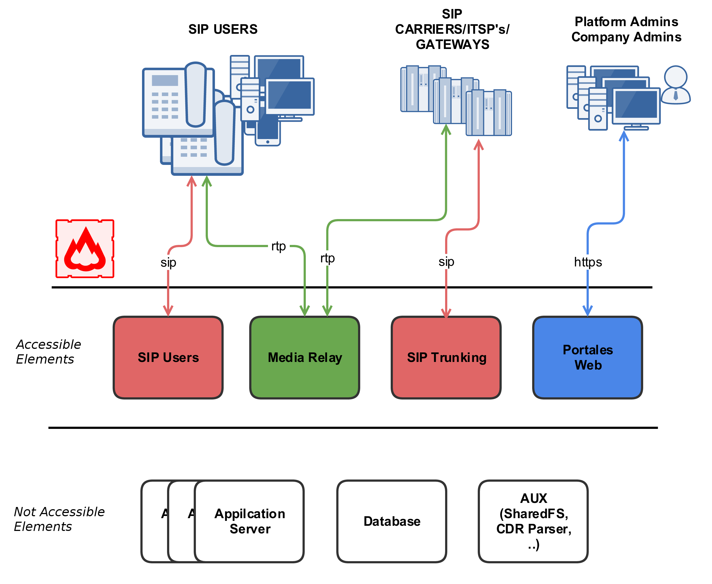
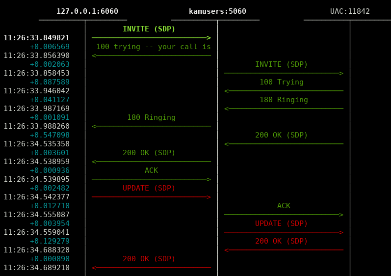
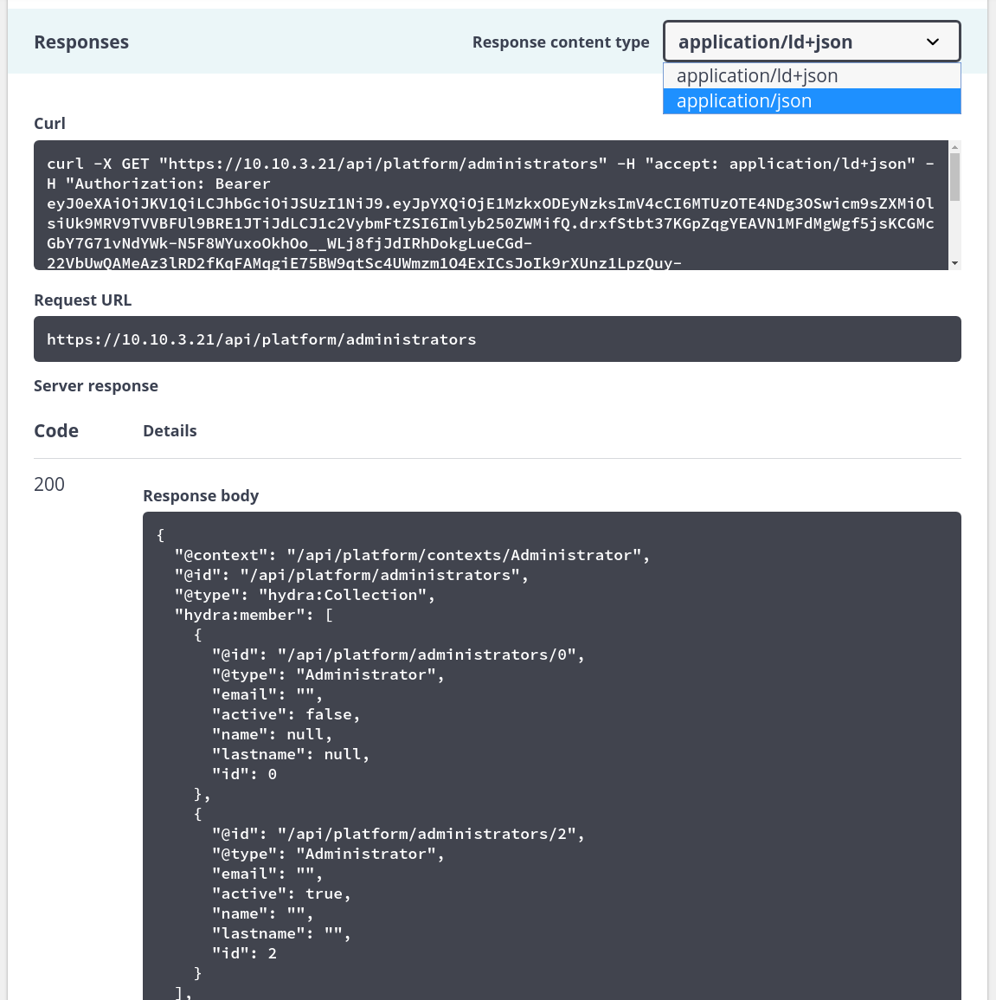

IvozProvider Official Documentation¶
Introduction to IvozProvider¶
The following sections will serve as general introduction to IvozProvider:
About this documentation¶
This documentation describes the process of installation and usage of IvozProvider, the multi-tenant telephony platform for providers developed by Irontec.
This should be the starting point for anyone interested in this solution, both from the technical point of view and the user one and it’s divided in multiple sections from the basic infrastructure information and configuration to the final user settings.
Getting help¶
IvozProvider is an alive and highly developed project. There are multiple channels to get information or report bugs.
In order of preference:
- GitHub: https://github.com/irontec/ivozprovider
- IRC Channel #ivozprovider at irc.libera.chat
- email: vozip+ivozprovider@irontec.com
- Twitter: @irontec
Don’t hesitate to contact us for any kind of feedback :)
What is IvozProvider?¶
IvozProvider is a provider oriented multilevel IP telephony solution exposed to the public network.
IP Telephony¶
IvozProvider supports telephony systems that use Session Initiation Protocol, SIP, described in RFC 3261 and any related RFCs independent of manufacturers.
This allows total freedom to choose softphones, hardphones and the rest of elements that interact with IvozProvider, without any kind of binding with a manufacturer.
Right now, IvozProvider supports the following transport protocols for SIP:
- UDP
- TCP
- TLS
- Websockets
This last transport protocol described in RFC 7118 supports web integrated softphones, using the WebRTC standard allowing browsers to establish real-time peer-to-peer connections.
The supported audio codec list is:
- PCMA (alaw)
- PCMU (ulaw)
- GSM
- SpeeX
- G.722
- G.726
- G.729 (manual installation required)
- iLBC
- OPUS
Multilevel¶
The web portal design of IvozProvider allows multiple actors within the same infrastructure:
In Platform roles section, the different roles are deeply described, but to sum up:
- God Admin: The administrator and maintainer of the solution. Provides access to multiple brand operators.
- Brand Operator: Responsible of configuring carrier routing, billing and invoicing to multiple clients.
- Client Operator: Responsible of its own configuration and to manage the final platform users.
- Users: The last link of the chain, has SIP credentials and can access its own portal for custom configurations. This level is only available for vPBX client types.
Each one of this roles has its own portal that allows them to fulfill their tasks. Each portal can be customized in the following ways:
- Themes and skins for corporate colours.
- Client Logos.
- Customized URLs with the Brand or Client domain.
Provider oriented¶
IvozProvider is a telephony solution designed with horizontal scaling in mind. This allows handling a great amount of traffic and users only by increasing the machines and resources of them.
This are the main ideas that makes this product provider oriented:
Despite the fact that all machine profiles can run in the same host, what makes it easier for the initial testing, each profile of IvozProvider can be separated from the rest to make it run in its own machine.
A distributed installation allows to distribute the correct amount of resources to each task, but also:
- Geographic distribution of elements to warranty high availability in case of CPD failure.
- Setup of key elements near the final users, to minimize the communication latencies.
- Horizontal scaling of key profiles to handle hundred of thousands concurrent calls.
The resource consuming elements that limit the service of VoIP solutions use to be:
- Already established calls audio management.
- Managing configuration for each client administrator (IVRs, conference rooms, external call filters, etc.)
- Databases of configuration and records.
IvozProvider was designed always keeping in mind the horizontal scaling of each of its elements, so it can handle thousands concurrent calls and what is more important, adapt the platform resources to the expected service quality:
Media-relay servers handle audio frames for the already established calls:
- You can use as many media-relays as you need.
- You can join media-relay in groups, and force some clients to use a group if you want.
- You can setup media-relays near the final users, to minimize network latencies in the calls.
Application servers are in charge of processing the configured logic:
- They scale horizontally: new Application Serves can be installed and added to the pool if you feel the need.
- Every call is handled by the least busy Application Server
- By default, there is no static assignment * between Clients and Application Servers. This way failure of any Application Server is not critical: the platform will ignore the faulty Application Server while distributing calls.
Exposed to the public network¶
As showed in the installation process, IvozProvider is designed to serve users directly from Internet. Although it can be used in local environments, IvozProvider is designed to use public IP addresses for its services, removing the need of VPN or IPSec tunnels that connect the infrastructure with the final users
Highlights:
- Only the required services will be exposed to Internet.
- The untrusted origins access can be filtered out by integrated firewall
- Access from IP addresses or networks can be filtered to avoid any kind of phishing.
- There is also an anti-flood mechanism to avoid short-life Denial of Service attacks.
- Each client concurrent calls can be limited to a fixed amount.
- IvozProvider supports connection from terminals behind NAT.
- IvozProvider keep track of those NAT windows and keep them alive with nat-piercing mechanisms.
| [*] | The global administrator can assign Application Servers to some client types but this feature is more designed as a temporal debug and troubleshoot measure. |
What is inside IvozProvider?¶
IvozProvider uses well-known and stable Free Software projects to fulfill the different required task of the platform.
Nothing better than an image to show all the software that its integrated into IvozProvider:

Note
We can not stress enough our gratitude to the developers and communities of this projects.
The task of each of this software will be deeply detailed in the block Platform general architecture.
Who should use IvozProvider?¶
IvozProvider is a good option for those interested in having a telephony platform that can provide service to thousands concurrent calls.
The greatest strengths of IvozProvide can help to decide if the solution meets your needs:
- VoIP: SIP
- Multilevel, multitenant
- Horizontal scaling
- PseudoSBC: open to Internet
- Billing and Invoicing engines integrated
- PBX Features
The installation process is so simple, that the best way to test if IvozProvider fulfills your needs is to test it!
Platform general architecture¶
General diagram¶
Following diagram shows the global architecture of IvozProvider solution, with all its components:
This is a more conceptual diagram:

SIP signalling flow¶
The first diagram shows the SIP signalling traffic involved in the establishment, modification and termination of sessions following the SIP RFC 3261 and any related RFCs.
These are the external SIP entities involved:
- UACs: users hardphones, softphones, SIP-capable gadget.
- SIP carriers/DDI Providers: carriers used to interconnect IvozProvider with external SIP networks (and, probably, with PSTN).
All the SIP traffic (in any of the supported transports: TCP, UDP, TLS, WSS) they send/receive is to/from this two internal SIP entities of IvozProvider:
- In fact, users UACs only talk to Users SIP Proxy and ‘SIP carriers’ and ‘DDI
- Providers’ only talk to Trunks SIP Proxy.
Inside IvozProvider these two proxies may talk to Application Servers running Asterisk for some client types but no external element is allowed to talk to Application Servers directly.
RTP audio flow¶
Sessions initiated by SIP signalling protocol imply media streams shared by involved entities.
This media streams use RTP to send and receive the media itself, usually using UDP as a transport protocol.
External entities involved in RTP sessions can be divided in:
- Clients endpoints.
- Carriers/DDI Providers.
Both entities exchanges RTP with the same IvozProvider entity: media-relays.
IvozProvider implements media-relays using RTPengine.
Similar to SIP, these media-relays exchanges RTP when is needed with Application Servers, but external entities never talk directly to them.
HTTPS traffic¶
HTTPS is the third traffic type exchanged between IvozProvider and external world.
HTTPS traffic is used for:
Terminal provisioning: several hardphones ask for their configuration when they wake up and this configuration files can be served through HTTPS.
Web portals: IvozProvider has 4-level web portals for all the platform roles.
Both of these traffics are handled by Web portals IvozProvider entity.
Additional elements¶
IvozProvider has multiple elements that are not exposed to the external world but play a crucial task.
The most remarkable profile is database profile that gathers all the information of the platform and shares it between the majority of software packaged. IvozProvider uses MySQL database engine for this task.
Another remarkable task is asynchronous tasks handler in charge of encoding recordings, generating invoices, reloading services, importing data, etc.
Auxiliary elements¶
Aux profile runs software that, even though is not vital for calls placing, makes IvozProvider maintainer’s life much easier.
In fact, without them, debugging problems would be much harder and the quality of given service would be damaged.
Although IvozProvider does not include any of the tools mentioned here, we consider them crucial for dealing with production environments.
We list here tools configured in all production IvozProvider installations maintained by Irontec:
- Homer SIP capture: This amazing software lets us capture all the SIP traffic for later analysis, for obtaining statistics, call quality measuring, etc. Visit SIP Capture website for more information.
- Kibana log viewer: Showing logs collected by remaining ELK stack components.
- Chronograf metric viewer: Showing metrics collected by remaining TICK stack components.
Initial Installation¶
Installation Types¶
Distributed Install¶
IvozProvider software is designed to run distributed between multiple systems in what we call profiles:
Each profile is in charge of performing one of the platform functions:
- Data storage
- SIP Proxy
- Application Server
- Web portal
For each of this profiles, there’s a virtual package that will install all the required dependencies (see Installing profile package).
You can install as many instances as you want for each profile, but take into account, that while some of them are designed to scale horizontally (for example: asterisk or media-relays) others will require additional software so the systems that have the same profile are synchronized (for example: database replication or http request balancing).
StandAlone Install¶
If you want a small installation to make a couple of tests or give a basic service, we have designed all this configuration so they can work in a single machine.
We have called this kind of installations StandAlone and we have also created Automatic ISO CD image so you can install in a couple of minutes.
Minimum requirements¶
System requirements¶
IvozProvider is designed to be installed using Debian GNU/Linux APT package system.
Important
It’s recommended to install IvozProvider in a dedicated server for the platform. Many of the installed software may not work properly with other pre-installed services (like MySQL or DNS servers).
For a StandAlone installation, we recommend at least:
- 4 CPUs (x86_64 or i386)
- 4 Gb memory
- 30GB HDD
- 1/2 public IP Addresses (read note behind)
Note
It is possible to make both KamUsers and KamTrunks share a unique public IP address. If so, KamTrunks ports will be changed from 5060 (TCP/UDP) to 7060 (TCP/UDP) and from 5061 (TCP) to 7061 (TCP).
If you’re not using a Automatic ISO CD image you will also need:
- Debian Bookworm 12.0 base install
- Internet access
Debian packages install¶
IvozProvider is designed to be installed and updated using Debian packages. More exactly, the current release is ready to be installed on Debian Bookworm 12.
It’s recommended to use one of the official installation guides to install the minimum base system. The rest of required dependencies will be installed automatically with IvozProvider meta packages.
No matter if you are installing a StandAlone Install or a Distributed Install, it’s required to configure Irontec debian repositories.
APT Repository configuration¶
cd /etc/apt/sources.list.d
echo deb http://packages.irontec.com/debian tempest main extra > ivozprovider.list
Optionally, we can add the repository key to check signed packages:
wget http://packages.irontec.com/public.key -q -O /etc/apt/trusted.gpg.d/irontec-debian-repository.asc
Installing profile package¶
Once the repositories are configured, it will be required to select the proper metapackage depending on the type of installation.
- For a StandAlone Install:
- ivozprovider
apt-get update
apt-get install ivozprovider
For a Distributed Install: one of the profile packages depending on the role the machine will perform.
- ivozprovider-profile-data
- ivozprovider-profile-proxy
- ivozprovider-profile-portal
- ivozprovider-profile-as
Attention
Distributed installation require a couple manual configuration based on the roles that are performing. Take into account that distributed installation process is not documented yet. You can refer to documentation request for more information.
Finish the installation¶
Standalone installation have a menu that can be used to configure the basic services used in IvozProvider. Most of the services are automatically configured to work in the same machine with the default values.
This menu allows:
- Configure IP address(es) for SIP proxies
- Default platform language
- Administrator MySQL database password
It’s possible to change any of this values anytime by running:
dpkg-reconfigure ivozprovider
Important
Any of the public IP addresses configured during the installation will work to access the web portal. Default credentials are admin / changeme.
Important
You must reboot your machine after a package installation in order to start all required services.
Automatic ISO CD image¶
You can download one of the IvozProvider Automatic ISO CD images (generated using simplecdd) in stable or nightly versions:
Important
IMPORTANT: Automatic install CDs will format target machine disk!
- Configure the target machine to boot from CD. It will display the Debian GNU/Linux installation menu.
Note
You can use graphic installation if you prefer, but the following screenshots show the standard installation.

- Choose installation language:

- Choose location:

- Set root password
- Choose date and time configuration:

Note
At this point, a generic network configuration and disk partitioning will be performed, and also a installation of base system.
- Setup MySQL Server root password

Important
MySQL password must be set in this screen and again in the following Ivozprovider configuration menu. If you leave this field empty, the default password will be used (see below).
- Configure IvozProvider:

As mentioned in Minimum requirements is required at least one public IP address for User and Trunk SIP proxies. Remember that if you use only one, KamTrunks will use different SIP ports to avoid collision.
You can set its addresses right now and configure the interfaces properly when the system is fully installed. This menu can be displayed anytime after the installation.
You can also configure default root MySQL password right now.
Note
If you don’t configure MySQL password, default password will be used (changeme). You can still change it later.

And default language for portals:

Note
It is not require to configure all settings during initial installation. In case any setting has been left without configuration a warning dialog will be displayed.

At last, select where the GRUB boot loader will be installed.

After the reboot, you are ready to access using the web portals!
Important
Any of the public IP addresses configured during the installation will work to access the web portal. Default credentials are admin / changeme.
Extra components¶
G.729¶
Attention
G.729 codec is offered by default for outgoing external calls. If you don’t install it using following instructions, it must be removed from pjsip.conf configuration file. Otherwise, application servers will be offering a not available codec.
Important
In some countries, you might have to pay royalty fees in order to use G.729 codec to their patent holders. We’re not legal advisers regarding active or withdrawn world patents.
You can use G.729 with IvozProvider, but installation must be done manually. G.729 codec is optimized for each CPU type and version of asterisk, so each installation may require a different codec module.
You can download codec from here under the section Asterisk 18.
Once downloaded, move the .so file to /usr/lib/asterisk/modules/ and rename it to codec_g729.so
You can check the codec is valid by loading the module in asterisk and printing the available codec translations using:
asterisk -rx 'module load codec_g729.so'
asterisk -rx 'core show translation' | grep 729
Platform roles¶
IvozProvider is a multilevel role provider solution.
The following images shows the different available levels and the relation between them:

This section will explain each of the available roles, describing their responsibilities and more important tasks.
Global administrator role¶
The global administrator role (operator in the image) is usually done by the installation responsible.
All options and platform features are visible to this role and usually is in charge of its maintenance.
Their most important task is to create Brands and configure them so they have the enough autonomy to properly use the platform:
- Configure their web access.
- Configure their brand portal look and feel: themes, colors, etc.
Apart from their main task, their global visibility and total access makes them responsible of:
Monitor the platform so it keeps always UP & RUNNING
Analyze platform logs to track possible errors.
Polish the security mechanisms to avoid external attacks.
Obtain global statistics of calls audio quality.
Increase the available resources of the platform as long as is needed:
- Increasing resources available in a standalone installation
- Migrating, whenever required, to a distributed installation with multiple AS, media relays, etc.
To sum up, this role is the only one that has no limits within the platform, that’s why God is a term used in multiple places along this documentation.
Important
This role is responsible of maintaining the platform*, configuring it for the correct behaviour. This role doesn’t have any kind of limit and grants access to the brand operators.
Brand administrator role¶
Brand operator can access a portal with less sections available compared to the previous role. The general (God) administrator is in charge of providing an URL with credentials for its brand portal.
The most important task for brand operator is to create and configure clients so they can work properly.
Due to brand operators are also responsible of billing their clients and make sure the external calls are properly setup, it must also manage:
- Peering contracts with other IP providers for PSTN interconnection.
- Include all required client information for the billing process.
- Pricing plans that will offer to their clients, that will determine how match they pay for each call.
- Setup the routes for each outgoing call types based on their final destination
- Create the invoices for each billing period and send them to their clients.
As you can see, the task of brand operator has little in common with the global operator, but their importance is vital so the final users can use all the features includes in IvozProvider
Important
To sum up, brand operators grant access to their clients administrators and configure the platform to route and rate their calls.
Client administrator role¶
The client administrator has access to the portal supplied by the brand operator.
From its point of view, it has a virtual pbx in the cloud that must configure for its users.
To accomplish that, it’s required:
Configure terminals, extensions and users.
Configure the DDI incoming process with the proper logic:
- Directly to an user
- IVRs
- Hunt groups
- Faxes
Give access to the final users to their web portal, so they can configure their profile options:
- Call forward
- Do not disturb
- Call waiting
Important
To sum up, the client administrators are responsible for configuring the telephony system and make use of all the features available in IvozProvider.
Final user role¶
The final user has two different kinds of credentials, both supplied by its client administrator:
- User portal access credentials
- SIP credentials used to register terminals to IvozProvider
Through the user portal, it can browse their call registry and configure:
- Call forward
- Do not disturb
- Call waiting
- Displayed data when calling
- Geographical configuration
On the other hand, the SIP credentials allow users to configure their terminals to place and receive calls.
Note
The same SIP credentials can be used in multiple devices at the same time,generating what is known as parallel-forking: whenever a call is placed to an user, all the active devices will ring so the user can answer the call from any of them.
Making internal calls¶
The goal of this block will be to configure IvozProvider in order to make internal calls, using as the starting point the base installation described in the previous step.
In order to achieve making a call between Alice and Bob, we have to fulfill some tasks in the three configuration levels described in Platform roles.
That’s why we have ordered the index in these 3 blocks:
Global Configuration¶
Important
Any of the 2 Public IP addresses configured during the installation will work to access the web portal. Default credentials are admin / changeme.
In this section will reference global administrator configuration options, available in the menu (Main management) of the web portal (only visible to God Admins):
Emulate the Demo brand¶
As mentioned above, the initial installation will have an already created brand called DemoBrand, that will be used for our goal: to have 2 telephones registered that can call each other.
Before going to the next section, is quite important to understand how the emulation works.
- As global operator, you have access to the menu Global Configuration only visible to God administrators.
- Apart from that menu, you will also have access to the Brand Configuration and Client configuration blocks.
- Last two blocks have a red button in the right side.
- When pressed, a popup will be displayed that lists all existing brands / clients.
- After selecting the DemoBrand brand, the icon will change.
- The upper right corner of the portal will also display the brand that is being emulated.
What emulation means¶
Basically, that everything in the menu ‘Brand configuration’ will be relative to the chosen brand and is exactly the same menu entries that the brand operator will see using its brand portal.
Tip
Ok, ok, maybe exactly is not totally accurate. The global operator is able to see some fields in some screens that other admins can’t (i.e. On Client edit screen, fields like ‘Media relays’ or ‘Application server’ are only configurable by the global operator.
Brand Configuration¶
We need that the default DemoBrand has a client with at least 2 users. In order to achieve this we will require a little configuration in this section.
In fact, if we check Virtual PBXs in the brand menu, we’ll discover that there is already an existing DemoCompany that we can use to fulfill our desired goal :)
Only a thing is required to configure for this client, pressing Edit client option.
Client SIP Domain¶
As mentioned in the previous section, is required that each of the vPBX clients has a public domain that resolves to the configured IP address for Proxy Users.
Note
DNS register can be type A (supported by all the hardphones/softphones ) or even NAPTR+SRV.
Once the domain has been configured (by means that are out of scope of this document), it will be enough to write it in our client configuration SIP Domain field.
Once the client has been saved, the domain will be also displayed in the list in the column SIP domain.
Attention
It’s important to understand this block. Unless we’ve a single client registered, without a DNS domain pointing to our users proxy IP address, everything will fail.
Danger
Have we repeated enough that without a properly configured DNS pointing to the Users proxy IP address nothing will work?
I have no time for a DNS registry¶
Everything we have said is true: as we create new brands and brands create new clients, each of them will need a DNS registry.
But the first client of the platform is quite special and can take over the IP address of the proxy to use it as a domain.
Although it is not a domain, but being used like it was, it will be displayed in SIP domains section.
Tip
It’s important to understand the this trick is only valid for the first client of the platform ;)
Emulate Demo client¶
The client emulation process is the same as the brand emulation, with the difference that it filters the block ‘Client Configuration’ instead of ‘Brand Configuration’.
Once the client has been emulated, the top right corner of the portal will show that we are in the right path :)
Client Configuration¶
We’re close to make our fist call in our fresh installed IvozProvider, there are only 6 steps to configure in our DemoClient virtual pbx.
- 2 terminals
- 2 extensions
- 2 users
Creating Terminals¶
Go to the terminal section and... voilà! We already have 2 terminals created.
Creating Extensions¶
Then we go to extensions, just to check that we have 2 extensions already created for us.
Nothing more to do in this section, let’s go the next one!
Creating Users¶
As expected, we also have 2 created users with previous extensions and terminals assigned.
At this point, we have everything ready make a call between this two users: Alice and Bob.
SIP Terminal configuration¶
The last thing we need is 2 SIP terminals (hardphones, softphones or even mobile applications) and configure them as follows:
ALICE
- User: alice
- Password: alice
- Domain: users.democlient.com (or the IP if we are using the DNS trick)
BOB
- User: bob
- Password: bob
- Domain: users.democlient.com (or the IP if we are using the DNS trick)
Tip
Sometimes the user and domain is configured in a single option. In this case we should enter alice@users.democlient.com and bob@users.democlient.com (or the IP if we are using the DNS trick)
After configuring the terminals, Alice should be able to call Bob only by dialing 102 in her terminal.
Receiving external calls¶
The goal of this block will be configure IvozProvider to receive incoming external calls.
In order to achieve this, this steps will be followed:
Transformations configuration¶
IvozProvider is designed to provide service anywhere in the planet, not only the original country where the platform is installed.
A very important concept to achieve this goal are the numeric transformations, that adapts the different number format systems of the countries of the world defined in E.164 to a neutral format.
The section that allows the brand operator to configure all the numeric transformations is Brand Configuration / Providers / Numeric transformations.
You can find more information about transformations in Numeric transformations section.
Tip
We already have a pre-created set for most of the countries of the world, so hopefully nothing needs to be done here.
Peering configuration¶
We understand a Peering contract the agreement between a Brand Operator and a VoIP Provider to make and receive calls.
We divide Peerings in two types:
- Carriers for outgoing calls (see Carriers).
- DDI Providers for incoming calls (see DDI Providers).
In order to achieve our goal, we will need to create a new (an valid) DDI Provider assign our country’s numeric transformation. See DDI Providers for further reference.
Once we have an agreement with a DDI provider and we have configured it in the previous section, only two task are pending:
Configuring an external DDI¶
The brand operator, responsible of these peering agreements with VoIP providers, has the task to create the DDIs for each client.
Notice that in order to access this section, the brand operator (or god) must have emulated the proper client and access the menu section Client Configuration.
Attention
Section Client configuration > DDIs is different when the client administrator access than the displayed data when a global or brand administrator does. Client administrator are unable to create or delete DDIs, just edit the one created by the brand or god administrator.
Taking into account these concepts, we create a new DDI and fill the required fields.
For detailed information about configuration fields, check DDIs section.
Configure incoming routes
In the previous section, we have created the DDI and configure it (pointing it to user Alice), but the most common procedure is that the brand operator just creates the DDI while the client administrator, using the same section, configures it choosing the correct route (user, hunt group, etc.), calendars filters and so on.
Note
At this point, calling the number of the configured DDI will make the Alice phone ring.
Making external calls¶
The goal of this section is configuring IvozProvider to make external outgoing calls, taking previous section configuration as a starting point.
We will follow these steps:
Create a new carrier¶
At this point of the configuration, we have to configure IvozProvider to receive calls using a DDI Provider, but we have not configured a Carrier to make external call.
Tip
VoIP Providers will usually provide both services: making and receiving calls.
Configure a Carrier in a similar way we configured the DDI Provider (further instructions here), assigning it the same numeric transformation set.
Where do I call?¶
At this point of the configuration, we have to configure IvozProvider to use the already configured Carrier to place the external calls we are making.
To achieve this, in first place, we need that the dialed external numbers fall in an existing target pattern:
Tip
To achieve our goal of making an external call to a spanish number, we didn’t have to modify the initial contents of this two sections as Spain pattern already exists :)
Outgoing Routing configuration¶
We already have our test call categorized as a call within the Routing pattern ‘Spain’. In addition, we also have a Routing pattern group including ‘Spain’, called ‘Europe’.
Now we have to tell IvozProvider that calls to ‘Spain’ or ‘Europe’ should be established through our new Carrier.
To make this assignment, we use the section Brand Configuration > Routing > Outgoing routings:
- Client: “Apply to all clients” (or just democompany).
- Type: pattern.
- Destination pattern: Spain.
- Route type: static.
- Carriers: our new carrier.
- Priority: 1
- Priority: 1
For more information about routing and load balancing check Outgoing Routings section.
Outgoing DDI configuration¶
Before placing our first outgoing call, it would be desirable to choose the number that the callee will see when the phone rings, so that he can return the call easily.
To achieve this goal, we have to configure our DDI as Alice’s outbound DDI, because she will be the chosen one to place our first outgoing call.
We can set this up editing Alice in Client Configuration > Users. If this change is made by brand operator or global operator, he must emulate the corresponding client previously.
Tip
We could have set the same DDI as Default Outgoing DDI at client level, editing democompany client.
Error
Calls from users without an outgoing DDI will be rejected by IvozProvider.
At this point, we are looking forward to make our first outgoing call with our new IvozProvider, we may have even tried to call with current configuration but...
No rating plan, no call¶
Just the way we warned when we described the duties of the brand operator, the brand operator is responsible for making all the needed setup so that IvozProvider is able to bill all external calls.
Note
Billing a call is the action of assigning price to a call that implies cost.
IvozProvider checks live that a call can be billed when it is established to avoid placing calls that imply cost but won’t be billed because Brand Operator, due to a mistake, hasn’t assigned a price.
Error
If a call can’t be billed, IvozProvider won’t allow its establishment.
Creating a rating plan¶
Brand Configuration > Billing > Destination section is empty by default, as opposed to routing patterns section, that has all the 254 countries of the world. The reason is that one destination rate will usually imply lots of pattern per country (GSM networks, especial numbers, mobile numbers, fixed lines, etc.).
In most of the cases, this section data will be imported from CSV provided by your VoIP provider, but for our test we will create it manually:
- Create a destination with ‘+34’ for Spain.
- Create a destination rate and insert a price for Spain destination.
- Create a rating plan that includes that destination rate.
Outgoing configuration complete!¶
That’s it!
At this point, Alice should be able to make outgoing calls to spanish destinations and this calls should be routed and billed accordingly.
Platform Configuration¶
This section is only shown to God administrator and allows modifying global configurations:
Brands¶
God operator is responsible for creating and managing platform brands through this section.
This are the fields shown when a new brand is created:
- Name
- Sets the name for this brand.
- TIN
- Number used in this brand’s invoices.
- Logo
- Used as default logo in invoices and in portals (if they don’t specify another logo).
- Invoice data
- Data included in invoices created by this brand.
- SIP domain
- Introduced in 1.4. Domain pointing to Users SIP proxy used by all the Retail Accounts and Residential Devices of this brand.
- Recordings
- Configures a limit for the size of recordings of this brand. A notification is sent to configured address when 80% is reached and older recordings are rotated when configured size is reached.
- Features
- Introduced in 1.3, lets god operator choose the features of the created brand. An equivalent configuration is available in Clients, to choose between the ones that god operator gave to your Brand. Related sections are hidden consequently.
- Max calls
- Limits both user generated and external received calls to this value (0 for unlimited).
- Locales
- Define default Timezone, Language and Currency for clients of this brand.
- Notifications
- Configure the email Notification Templates to use for this brand. Clients configured to use generic notifications will use configured brand notifications. If brand has no notification configured Default Notification Templates will be used.
- ProxyTrunks
- Select which ProxyTrunks addresses can be used by this brand. Read Proxy Trunks for further details. It is not possible to unassign an address used in any carrier or DDI provider.
Hint
Some features are related to brand and cannot be assigned to clients. Other ones are also related to clients and lets the brand operator to assign them to its clients.
Warning
Disabling billing hides all related sections and assumes that an external element will set a price for calls (external tarification module is needed, ask for it!).
Note
Disabling invoices hides related sections, assuming you will use an external tool to generate them.
Note
SIP domain is only visible for Brands with Retail or Residential features enabled.
Brand operators¶
List of brand operators subsection allows adding/editing/deleting credentials for brand portal access.
Read ACLs for further explanation about restricted brand administrators.
Brand Portals¶
List of brand portals subsection allows managing URLs to access to the different web portals available for a given brand.
See Client Portals for further reference.
Warning
URLs are assigned to brands. This means that through a given URL the brand can be guessed, but not the client. As a result, username collision domain will be at brand level (there cannot exist to client administrators with the same username within a brand).
Main operators¶
This section lists the credentials to log into the god administration portal. You can edit or delete existing credentials, and create new ones.
These are the required fields of each entry:
- Username
- User for login process.
- Password
- Password for login process.
- Timezone
- Used for showing dates in External Calls and similar sections.
- Restricted
- Allows creating limited credentials (read ACLs for further explanation).
Remaining fields are not required nor used anywhere, they just allow storing additional information of a given user (name, lastname and email).
Antiflood banned IPs¶
Addresses listed here have been banned at least once by Antiflooding mechanism.
Warning
IPs are only blocked during 5 minutes. Entries with Last time banned older than 5 minutes are not currently banned.
See SIP Antiflooding for further information.
Terminal manufacturers¶
Overview¶
IvozProvider supports provisioning of terminals via HTTP/HTTPS that fulfill the following requirements:
Assuming a just unboxed terminal, just plugged and connected to the network:
- Ask IP address via DHCP.
- DCHP has enabled the option 66 that points to the platform portal
- The first requested provisioning file is a static file (different for each model) prefixed with the previous step URL.
- The served file can redefine the URL for further requests
Any terminal model that can adapt to this provisioning way can be added into the section Platform Configuration > Terminal manufacturers.
Example Cisco SPA504G
Cisco SPA504G is turned on and requests an IP address to DHCP
Receives “http://provision.example.com/provision” as DHCP option 66
Request HTTP configuration from http://provision.example.com/provision/spa504g.cfg
All 504G request the same file (spa504.cfg), prefixed with the given URL
This file only contain basic configuration settings for the model and the URL for the next request (p.e. https://provision.example.com/provision/$MAC.cfg)
This way, each terminal (MAC should be unique) request a specific file (and different) after the generic one has been served.
This file will contain the specific configuration for the terminal:
- User
- Password
- SIP Domain
Note
IvozProvider provisioning system, right now, only has one goal: provide credentials and language settings for the terminals.
Configuration of supported models¶
IvozProvider uses a template system that allows global operator (God) to define new models and configure what files will be served.
The help section of Terminal manufacturers has examples for some models that work (in the moment of writting this) with IvozProvider provisioning system.
Hint
These models will be available after the initial installation, but you must edit them and load the default configuration before you can use the provisioning system (option Restore default template).
Error
UACs firmware changes may cause that given examples stop working. We will try to keep templates updated, but we can’t guarantee this point.
Analyzing the suggested templates you can have a basic idea of the flexibility of the system to configure any existing terminal model in the market and to adapt them to eventual changes in given examples.
Getting technical¶
Imagine an environment with this configuration:
- Provisioning URLs:
- Generic file: http://PROV_IP/provision
- Specific file: https://PROV_IP:PROV_PORT/provision
- TerminalModels.genericUrlPattern: y000000000044.cfg
Which requested URLs will be valid?
For generic file, just one: http://PROV_IP/provision/y000000000044.cfg
For specific file, requests are right as long as this rules are fulfilled:
- All HTTP requests are wrong.
- HTTPS requests to 443 are wrong (PROV_PORT must be used).
- Subpaths after provisioning URL are ignored, both in request and in specificUrlPattern.
- On specific file request, extension must match as long as extension is used in specificUrlPattern.
- On specific file request, the filename must match exactly once {mac} is replaced.
- MAC address is case insensitive and can contain colons or not (‘:’).
Let’s analyze the examples below to understand this rules better:
Example 1 - TerminalModels.specificUrlPattern: {mac}.cfg
Working requests:
https://PROV_IP:PROV_PORT/provision/aabbccddeeff.cfg
https://PROV_IP:PROV_PORT/provision/aa:bb:cc:dd:ee:ff.cfg
https://PROV_IP:PROV_PORT/provision/aabbccdd:ee:ff.cfg
https://PROV_IP:PROV_PORT/provision/aabbccddeeff.cfg
https://PROV_IP:PROV_PORT/provision/AABBCCDDEEFF.cfg
https://PROV_IP:PROV_PORT/provision/subpath1/aabbccddeeff.cfg
https://PROV_IP:PROV_PORT/provision/subpath1/subpath2/aabbccddeeff.cfg
Wrong requests:
https://PROV_IP:PROV_PORT/provision/aabbccddeeff.boot
https://PROV_IP:PROV_PORT/provision/subpath1/subpath2/aabbccddeeff.boot
This example is identical to ‘t23/{mac}.cfg’, as subpaths are ignored.
Example 2 - TerminalModels.specificUrlPattern: {mac}
All previous examples are ok, as extension is ignored if no extension is found in specificUrlPattern.
This example is identical to ‘t23/{mac}’, as subpaths are ignored.
Example 3 - TerminalModels.specificUrlPattern: yea-{mac}.cfg
All previous examples are wrong, as no ‘yea-‘ is found (‘yea’ match is case sensitive).
Working requests:
https://PROV_IP:PROV_PORT/provision/subpath1/yea-aabbccdd:ee:ff.cfg
Wrong requests:
https://PROV_IP:PROV_PORT/provision/subpath1/yea-aabbccdd:ee:ff.boot
https://PROV_IP:PROV_PORT/provision/subpath1/YEA-aabbccdd:ee:ff.cfg
This example is identical to ‘t23/yea-{mac}.cfg’, as subpaths are ignored.
Example 4 - TerminalModels.specificUrlPattern: yea-{mac}
As no extension is given:
https://PROV_IP:PROV_PORT/provision/subpath1/yea-aabbccdd:ee:ff.cfg
https://PROV_IP:PROV_PORT/provision/subpath1/yea-aabbccdd:ee:ff.boot
Wrong requests:
https://PROV_IP:PROV_PORT/provision/subpath1/YEA-aabbccdd:ee:ff.cfg
This example is identical to ‘t23/yea-{mac}’, as subpaths are ignored.
Services¶
There are special services that can be accessed by calling to some codes from the terminal.
Danger
Services defined in this section are not accessible during a conversation. They are activated by calling the codes, not using DTMF codes while talking.
There are the following special services available in the section Global configuration > Services:
- Direct pickup
- This service allows capturing a ringing call from another terminal by calling the code followed by the extension from the target user.
- Group pickup
- This service allows capturing a ringing call for any terminal whose user is part of one of the capturer pickup groups.
- Check voicemail
- This service allows checking the user’s voicemail using an interactive menu from which new voicemails can be listen, deleted, etc. This is an active alternative to receive voicemails via the email. Since 1.4, this service allows optional extension after the service code to check another users voicemails. Users can protect their voicemail using the internal menu options.
- Record locution
- This service allows any user to record their client’s locutions by dialing an special code. Voice instructions will be provided in the user’s language.
- Open Lock
- Calling this service code will set route lock status to ‘Opened’ (see Route locks).
- Close Lock
- Calling this service code will set route lock status to ‘Closed’ (see Route locks).
- Toggle Lock
- Calling this service code will change the current status of the lock (see Route locks).
- Inconditional call forward
- Calling this service code will change the current status of inconditional call forward (only available for residential clients, see Residential device call forward settings).
- Busy call forward
- Calling this service code will change the current status of busy call forward (only available for residential clients, see Residential device call forward settings).
- No answer call forward
- Calling this service code will change the current status of no answer call forward (only available for residential clients, see Residential device call forward settings).
- Unreachable call forward
- Calling this service code will change the current status of no answer call forward (only available for residential clients, see Residential device call forward settings).it di
As soon as new services are implemented into IvozProvider, they will be listed in this section.
Attention
This section lists the available services and the default codes when a new brand is created.
Hint
Changing the default code in this section will only affect new created brands.
Currencies¶
This section allows adding as many currencies as wanted. It is a multilanguage field with a symbol that will be used in invoices, balance movements, etc.
These IvozProvider elements have an assigned currency:
- Brand
- Used as default currency for all underlying items that have currency.
- Client
- Chosen currency will be used in price calculation, invoices, invoice’s fixed costs, balance movements and remaining money operations of this client.
- Carrier
- Chosen currency will be used in cost calculation, balance movements and remaining money operations of this carrier.
- Destination rate
- All rates within a destination rate will assume this currency.
- Rating plan
- All destination rates grouped in a rating plan must use this currency.
It is important to take into account notes below before using this feature:
- Rating plans must only group destination rates using its currency.
- Clients and carriers must only use rating plans using its currency.
Note
Some backend checks avoid some of previous misconfigurations, but not all of them: use this feature carefully.
Important
There is no currency conversion involved: call cost will be calculated in carrier’s currency, call price will be calculated in client’s currency.
Caution
LCR routes involving carriers with different currencies are not supported.
Default Notification Templates¶
Brand administrators can configure the notifications sent by IvozProvider:
- Email sent when a new voicemail is received
- Email sent when a new fax is received
- Email sent when a balance is below configured threshold
- Email sent when an automatic invoice is generated
- Email sent when scheduled CDR CSVs are generated
- Email sent when max daily usage is reached
This section allows modifying default templates that will be used when no custom notification is configured.
See Notification Templates for further reference.
Default Invoice Templates¶
Platform administators can create Invoice templates that can be used by all brands in the platform.
Although brand administrators won’t be able to edit them, they will be available for Invoices and Invoice schedulers.
Global Special Numbers¶
This section allows adding external numbers that will be handled in a different way by IvozProvider when a client calls to those destinations (only for external outgoing calls).
Note
Numbers listed here will apply in every brand. Brand operator may add numbers too using Special Numbers.
Disable CDR¶
Currently there is only one special treatment: Disable CDR. Setting this to Yes for a number will:
Prevent outgoing external calls from being listed in following sections:
- Active Calls
- External Calls
- Call Registry (both client portal and user portal)
As a consequence, calls won’t be included in any:
- Invoices
- CSV defined by Call CSV schedulers
- API response of related endpoints
Do not call CGRateS for these calls: call will be allowed no matter if active pricing plan allows it.
- As a consequence, no price/cost will be decreased from carrier/client account.
Prevent recording these calls. As a consequence, Recordings section won’t list them.
Warning
Adding a number will cause this special handling only for future outgoing external calls. No change is made in previous calls.
SIP domains¶
The section Domains will display the SIP domains that point to Proxy Users public address.
Note
DNS register can be type A (supported by all the hardphones/softphones ) or even NAPTR+SRV.
There are two type of SIP domains:
- vPBX client SIP domain
- Each vPBX client has a unique SIP domain.
- Brand SIP domain
- Shared by all retail and residential clients in the brand.
All these SIP domains will be displayed in this list so that global administrator can check what domains are registered for each client/brand:
- Domain
- DNS pointing to Proxy Users public address
- Brand
- Brand of specific brand domain or vPBX client.
- Client
- vPBX client of specific vPBX client domain. Empty for brand domains.
Platform Portals¶
This section allows configuration of platform portals that will be used by Main operators.
Warning
- URLs MUST be HTTPS
- URLs MUST not end with slash /
Each URL can also configure a logo and a theme per URL.
Active calls¶
This section allows main operator and brand operator view current active external calls.
Warning
Internal calls won’t be listed.
These are columns shown:
- Duration
- Show call establishment duration during establishment and call duration during ongoing call. It also shows direction (inbound/outbound) and call state information, as explained below.
- Brand
- Brand making a given call (only shown at god level).
- Client
- Client making a given call.
- Caller
- Call source number in E.164.
- Callee
- Call destination number in E.164.
- Carrier
- Carrier/DDI Provider used in given call.
Call state¶
Call state follows Dialog State Machine proposed in RFC4235:
Trying
- INVITE sent, someone is trying to make a new call.
- Shown as Call Setup in this section.
Proceeding
- Provisional response from middle proxies received (usually 100 Trying).
- This state is ignored in this section.
Early
- Provisional response from final party received (usually 180 Ringing).
- Shown as Ringing in this section.
Confirmed
- 200 OK received, call confirmed, parties talking.
- Shown as In call in this section.
Terminated
- BYE/CANCEL/error-response (>300) received, call finished.
- Call vanishes to show this status.
Example 1: Successful call
A successful call traverses this states:
- Trying -> Proceeding (optional) -> Early (optional) -> Confirmed -> Terminated
That will be coded in this section as:
- Call Setup -> Ringing (optional) -> In call -> Call vanishes
Example 2: Unsuccessful call
An unsuccessful call traverses this states:
- Trying -> Proceeding (optional) -> Early (optional) -> Terminated
That will be show in this section as:
- Call Setup -> Ringing (optional) -> Call vanishes
External calls¶
External calls section lists both inbound and outbound external calls.
This section is shown at different levels:
- Main level (god level)
- Brand level (filtered for emulated/logged brand).
- Client level (filtered for emulated/logged client).
Each entry shows this information:
- Start time
- Date and time of the call establishment.
- Brand
- Only visible for god, shows the brand of each call.
- Client
- Visible for god and brand operator, shows the client of each call.
- Caller
- DDI presented for the outgoing call.
- Callee
- External number dialed.
- Duration
- Shows how long the call lasted.
- Price
- The money amount for the client. Visible for god and brand operator and Client administrator if Display billing details to client is enabled.
- Cost
- Visible for god and brand operator, the money amount for the brand (the money that the carrier will bill for the call).
- Rating Plan
- Rating plan used to set price for the call. Visible for god and brand operator and Client administrator if Display billing details to client is enabled.
- Destination
- Destination that matched the call for billing. Visible for god and brand operator and Client administrator if Display billing details to client is enabled.
- Carrier
- Visible for god and brand operator, shows which Carrier was used for each outbound call.
- DDI Provider
- Visible for god and brand operator, shows which DDI Provider was used for each inbound call.
- Invoice
- Visible for god and brand operator, shows if a call is already included in any Invoice.
- Call ID
- Shows the call ID of the call for troubleshooting and CSV export.
- Endpoint Type
- Possible values: RetailAccount, ResidentialDevice, User, Fax, Friend.
- Endpoint Id
- Internal ID of specific endpoint (only when endpointType is non-empty).
- Endpoint Name
- User extension, friend name, fax name, retail account name or residential device name (only when endpointId is non-empty).
Note
An asynchronous process parses each external call and adds it to this list a few minutes after call hangup. Billing related fields, such as cost and price, will be empty for external incoming calls.
Call rerating¶
At brand level, there is an additional available operation for outbound calls: Rerate call. This option allows calling rating engine again for a call or a bunch of calls.
Notes about this rerating process:
- If a call is in an invoice, it cannot be rerated. Invoice must be deleted first.
- Call will be rerated with the Start time of the call (no with current active rating plans, but with active rating plans on the moment of the call).
- Both Price and Cost will be recalculated. This may imply updating rating plan and destination too.
Tip
When a call is rerated, cost and price are emptied until the next iteration of the asynchronous task.
Infrastructure¶
Sections in this group list the components of the platform and are not meant to be modified without a deep knowledge:
Proxy Users¶
This is the SIP proxy exposed to the external world where users register their terminals.
The value displayed in the section Proxy users will show the IP address entered during the installation process.
Tip
All domains in SIP domains section (except from trunks.ivozprovider.local) should point to this IP address.
Proxy Trunks¶
This is the SIP proxy exposed to external world and is in charge of connecting with providers (carriers / DDI providers) brand administrators will configure for SIP peering.
Note
Only the IP addresses will be listed, as the port will be always 5060 (5061 for SIP over TLS).
Main address¶
The value displayed in the entry proxytrunks will show the IP address entered during the installation process.
Danger
This entry cannot be removed.
This IP address:
- Will be used for internal signalling:
- KamTrunks <-> KamUsers
- KamTrunks <-> Application Servers
- Will be used to reload Kamailio modules when needed (XMLRPC).
This value can be changed from the portal, but Kamailio make sure that KamTrunks is binded to given IP.
Additional addresses¶
Apart from unremovable proxytrunks entry, additional addresses can be added here. These additional addresses can be removed as long as they are not assigned to any Carrier / DDI Provider.
Warning
Apart from adding here, addresses must be configured in /etc/kamailio/proxytrunks/additional_addresses.cfg (additional_addresses.cfg.in is given as an example). Make sure Kamailio can bind to given addresses, otherwise it won’t boot.
The purpose of these additional addresses is to talk to different Providers using different addresses:
- Main operator (God) will assign IP addresses listed in this section to Brands (read Brands).
- Each brand must have at least one address.
- Each address can be assigned in several brands.
- Brand operator will assign these addresses to Carriers (read Carriers) and DDI Providers (read DDI Providers).
- Each Provider (both Carriers and DDI Providers) must have one address.
- IvozProvider will use assigned addresses in SIP signalling with those Carriers / DDI Providers.
Note
Be aware that it only applies to SIP signalling, no changes are made in RTP media handling.
Media relay sets¶
Media relays are in charge of bridging RTP traffic of established calls. Like the Application Servers, they can scale horizontally as much as required.
Media relays are organized in groups so they can be assigned to a client/provider. Each element of the group has a metric that allows non-equal load balancing within the same group (i.e. media-relay1 metric 1; media-relay2 metric 2: the second media relay will handle two times the calls than the first one).
Hint
The static assignment of media relay groups is not the common practice but allow us to assign strategic resources to clients that need a warranted service. The most common usage of this groups of media relays is to place them near the geographic area of the client (usually far from the rest of the platform systems) in order to reduce latencies in their conversations.
In a standalone installation, only one media relay group will exist. By default this group only has a media server.
Note
The address displayed is the control socket, not the SDP address that will be included during SIP negotiation. By default this alone media-relay will share the same IP address that the User’s SIP proxy.
Application Servers¶
The section Application Servers will list the IP address where the existing Asterisk processes will listen for request, and like previously mentioned, can scale horizontally to adapt the platform for the required load.
Contrary to the Proxies, Asterisk is not exposed to the external world, so for a standalone installation there will only be one listening at 127.0.0.1.
Note
The listening port will not be displayed in the field because it will always be 6060 (UDP).
Important
As soon as another Application Server is added, the proxies will try to balance load using it. If no response is received from added Application server, it will be disabled automatically.
Application Server Sets¶
The Application Server Sets section allows platform administators to manage sets of application servers by adding, deleting, and editing them.
- Name
- The name of the Application Server Set.
- Distribute Method
- Hash: Distributes calls hashing a parameter that is unique per client.
- Round robin: Distributes calls equally between Application Servers.
- Description:
- A brief description of the Application Server Set.
- Application Servers:
- A multi-select list with one or more application servers.
Brand Configuration¶
This module will describe all the sections shown to brand operators:
Clients¶
This group will show all available client types for a given (emulated/logged in) brand:
Virtual PBX¶
Virtual PBX clients are designed to provide service to clients with multiple terminals that require feature-full call flows.
Hint
Some fields described below may not be visible depending on enabled features.
- Name
- Sets the name for this client.
- SIP domain
- DNS for this client. See Client SIP Domain section.
- Features
- Allow configuration of available features for this client. Related sections are hidden consequently and the client cannot use them.
- Billing method
- When billing feature is enabled determines when calls will be priced. ‘none’ disables billing. See Billing section.
- Corporation
- Select which corporation this client belongs to. Enables using Inter VPBX friends to dial other client extensions.
- Geographic Configuration
- General client configuration for language and timezones. Most of the settings in the section can be configured per user if required.
- Currency
- Chosen currency will be used in price calculation, invoices, balance movements and remaining money operations of this client.
- Max calls
- Limits both incoming and outgoing external calls (0 for unlimited).
- Filter by IP address
- If set, the platform will only allow calls coming from allowed IP/ranges or countries.
- GeoIP allowed countries
- If Filter by IP address is enabled, traffic from selected countries will be allowed.
- Max daily usage
- Limits external outbound calls when this limit is reached within a day. At midnight counters are reset and accounts are re-enabled.
- A notification email will be sent to given address when configured max daily usage is reached. Leave empty to avoid notification.
- Invoice data
- Data included in invoices created by this brand. This section also allows showing/hiding billing details to client’s portal, such as Invoices, Rating Profiles and Price of external calls.
- Notifications
- Configure the email Notification Templates to use for this client.
- Outgoing DDI
- Selects a DDI for outgoing calls of this client, if it is no overridden in a lower level.
- Media relay set
- As mentioned above, media-relay can be grouped in sets to reserve capacities or on a geographical purpose. This section lets you assign them to clients.
- Distribute Method
- ‘Hash based’ distributes calls hashing a parameter that is unique per client, ‘Round robin’ distributes calls equally between AS-es and ‘static’ is used for debugging purposes.
- Application Server
- If ‘static’ distribute method is used, select an application server here.
- On-demand call recording
- Shown only if Recording feature is enabled for client, allows enabling and disabling on-demand call recording. If enabled, you can choose how to invoke and service code if needed.
- Allow Client to remove recordings
- Shown only if Recording feature is enabled for client, shows/hides recording removal button on client Call Recordings section.
Most of the features are self-explanatory, but voice notification deserves an explanation: if you enable them, when a call fails, the user will listen a locution explaining what occurred (“you have no permissions to place this call”, “the call cannot be billed”, etc.)
Both Distribute method and Application Server are only visible for God Administrator.
Warning
‘Round-robin’ distribute method is reserved for huge clients whose calls cannot be handled in a single AS. Use ‘Hash based’ for remaining ones, as ‘Round-robin’ imposes some limitations to client features (no queues, no conferences).
Additional subsections¶
Each entry in this table has these additional options:
- List of authorized sources: if Filter by IP address is enabled, this subsection allows adding addresses or network ranges.
Error
No outgoing call will be allowed if Filter by IP address is enabled and the corresponding list is empty.
- List of client admins: this subsection allows managing portal credentials for this specific client. Read ACLs for further explanation about restricted client administrators.
- List of Rating profiles: this subsection allows managing the rating profiles that will be used to bill its outgoing calls.
Warning
No outgoing call will be allowed for this client unless an active rating profiles that can bill the specific call.
Residential¶
Residential clients are a more lightweight client type than vPBX clients.
Their target is to provide these services to residential environments:
- Configure one or more residential devices (SIP devices).
- Setup one or more DDIs.
- Place external calls showing one of those DDIs.
- Receive external calls to their DDIs.
- Send/Receive virtual faxes.
- Record calls.
Warning
No users, no extensions, no internal calls, no hunt groups, no IVRs... just incoming and outgoing external calls (and a few voice services).
Error
Residential clients and their devices MUST use Brand’s SIP domain in their SIP messages.
Adding/Editing residential clients¶
Hint
Some fields described below may not be visible depending on enabled features.
These are the fields shown when adding a new residential client:
- Name
- Used to reference this particular client.
- Billing method
- To choose among postpaid, prepaid and pseudo-prepaid. ‘none’ disables billing.
- Features
- Enable/Disable faxing and call recording for this particular client.
- Language
- Used to choose the language of played locutions.
- Country code
- Default country code for DDIs.
- Default timezone
- Used for showing call registries dates.
- Currency
- Chosen currency will be used in price calculation, invoices, balance movements and remaining money operations of this client.
- Numeric transformation
- Describes the way the client will “talk” and the way the client wants to be “talked”.
- Max calls
- Limits both incoming and outgoing external calls (0 for unlimited).
- Filter by IP address
- If set, the platform will only allow calls coming from allowed IP/ranges or countries.
- GeoIP allowed countries
- If Filter by IP address is enabled, traffic from selected countries will be allowed.
- Max daily usage
- Limits external outbound calls when this limit is reached within a day. At midnight counters are reset and accounts are re-enabled.
- A notification email will be sent to given address when configured max daily usage is reached. Leave empty to avoid notification.
When editing a client, these additional fields can be configured:
- Invoice data
- All the fields in this group will be included in invoices generated for this client. This section also allows showing/hiding billing details to client’s portal, such as Invoices, Rating Profiles and Price of external calls.
- Outgoing DDI
- Fallback DDI for external outgoing calls (can be overridden at residential device level).
- Notification options
- This group allows choosing a notification template for both faxes and voicemail notifications.
- Allow Client to remove recordings
- Shown only if Recording feature is enabled for client, shows/hides recording removal button on client Call Recordings section.
Note
Apart from these fields, main operator (aka God) will also see a Platform data group that allows:
- Choosing an specific media relay set for the client.
- Choose the way that calls of this client will be distributed among existing application servers (hash based is recommended).
Tip
For outgoing calls, platform will use the CLID provided by the client as long as it is considered valid, otherwise fallback DDI will be used. The platform will consider as valid any CLID that matches one of the client’s DDIs.
Additional subsections¶
Each entry in this table has these additional options:
- List of authorized sources: if Filter by IP address is enabled, this subsection allows adding addresses or network ranges.
Error
No outgoing call will be allowed if Filter by IP address is enabled and the corresponding list is empty.
- List of client admins: this subsection allows managing portal credentials for this specific client. Read ACLs for further explanation about restricted client administrators.
- List of rating profiles: this subsection allows managing the rating profiles that will be used to bill its outgoing calls.
Warning
No outgoing call will be allowed for this client unless an active rating profiles that can bill the specific call.
Retail¶
Retail clients are even a more lightweight client type than Residential clients.
They just provide a SIP trunking service that include these features:
- Configure one or more retail accounts (SIP devices).
- Setup one or more DDIs.
- Place external calls showing one of those DDIs.
- Receive external calls to their DDIs.
- Record calls.
Warning
No users, no extensions, no internal calls, no hunt groups, no IVRs, no voicemail... just incoming and outgoing external calls.
Error
Retail clients and their accounts MUST use Brand’s SIP domain in their SIP messages.
Differences between retail and residential clients¶
There is an important key difference between these two clients: retail client calls do not traverse any application server.
As a result:
- No virtual faxing service for retail clients.
- No voicemail service for retail clients.
But they also have benefits that make them ideal for some situations:
- No application server traverse, much less load for the platform.
- Call transcoding as a feature.
- Routing tags for different call routing for same destinations.
Warning
Residential devices are force to talk the codec selected in their configuration (just one). Retail clients, on the other hand, can talk in the codecs they offer in their SDP and in the codecs selected in IvozProvider: IvozProvider will make transcoding when necessary.
Tip
Use retail client type unless you need any of the services provided by application servers (fax or voicemails).
Adding/Editing retail clients¶
Hint
Some fields described below may not be visible depending on enabled features.
These are the fields shown when adding a new retail client:
- Name
- Used to reference this particular client.
- Billing method
- To choose among postpaid, prepaid and pseudo-prepaid. ‘none’ disables billing.
- Language
- Used to choose the language of played locutions.
- Country code
- Default country code for DDIs.
- Default timezone
- Used for showing call registries dates.
- Currency
- Chosen currency will be used in price calculation, invoices, balance movements and remaining money operations of this client.
- Numeric transformation
- Describes the way the client will “talk” and the way the client wants to be “talked”.
- Max calls
- Limits both incoming and outgoing external calls (0 for unlimited).
- Filter by IP address
- If set, the platform will only allow calls coming from allowed IP/ranges or countries.
- GeoIP allowed countries
- If Filter by IP address is enabled, traffic from selected countries will be allowed.
- Max daily usage
- Limits external outbound calls when this limit is reached within a day. At midnight counters are reset and accounts are re-enabled.
- A notification email will be sent to given address when configured max daily usage is reached. Leave empty to avoid notification.
When editing a client, these additional fields can be configured:
- Invoice data
- All the fields in this group will be included in invoices generated for this client. This section also allows showing/hiding billing details to client’s portal, such as Invoices, Rating Profiles and Price of external calls.
- Outgoing DDI
- Fallback DDI for external outgoing calls (can be overridden at residential device level).
- Routing tags
- This field allows enabling routing tags for this specific client. Call preceded with this routing tags will be rated and routed differently.
- Audio transcoding
- This field allows enabling codecs for this specific client. This codecs will be added to the ones offered by the client in its SDP.
- Allow Client to remove recordings
- Shown only if Recording feature is enabled for client, shows/hides recording removal button on client Call Recordings section.
Error
Selecting codecs in Audio transcoding may lead to uneeded transcoding. Selecting ALL codecs is always a horrible idea. Do not select any codec unless this client does not support an specific codec that is compulsory for a needed destination/carrier.
Note
Apart from these fields, main operator (aka God) will also see a Platform data group that allows:
- Choosing an specific media relay set for the client.
Tip
For outgoing calls, platform will use the CLID provided by the client as long as it is considered valid, otherwise fallback DDI will be used. The platform will consider as valid any CLID that matches one of the client’s DDIs.
Additional subsections¶
Each entry in this table has these additional options:
- List of authorized sources: if Filter by IP address is enabled, this subsection allows adding addresses or network ranges.
Error
No outgoing call will be allowed if Filter by IP address is enabled and the corresponding list is empty.
- List of client admins: this subsection allows managing portal credentials for this specific client. Read ACLs for further explanation about restricted client administrators.
- List of Rating profiles: this subsection allows managing the rating profiles that will be used to bill its outgoing calls.
Warning
No outgoing call will be allowed for this client unless an active rating profiles that can bill the specific call.
Wholesale¶
Wholesale clients are the simplest client type in IvozProvider.
It allows trunking services with Carriers without any application server features, focusing on concurrency and quality rather on having lots of services.
- Just make outgoing calls.
- IP authentication only (no register, no SIP auth).
- Calls go directly from users to trunks, without any application server involved.
- Support for routing tags (client can choose the outgoing route to use)
- Support for audio transcoding.
Warning
No users, no extensions, no internal calls, no DDIs, no voicemail, no call forwards... just outgoing external calls.
Error
Wholesale clients do not need to use Brand’s SIP domain in their SIP messages.
Adding/Editing clients¶
Hint
Some fields described below may not be visible depending on enabled features.
These are the fields shown when adding a new wholesale client:
- Name
- Used to reference this particular client.
- Billing method
- To choose among postpaid, prepaid and pseudo-prepaid. ‘none’ disables billing.
- Language
- Used to choose the language of played locutions.
- Default timezone
- Used for showing call registries dates.
- Currency
- Chosen currency will be used in price calculation, invoices, balance movements and remaining money operations of this client.
- Numeric transformation
- Describes the way the client will “talk” and the way the client wants to be “talked”.
- Max calls
- Limits outgoing external calls (0 for unlimited).
- Max daily usage
- Limits external outbound calls when this limit is reached within a day. At midnight counters are reset and accounts are re-enabled.
- A notification email will be sent to given address when configured max daily usage is reached. Leave empty to avoid notification.
When editing a client, these additional fields can be configured:
- Invoice data
- All the fields in this group will be included in invoices generated for this client. This section also allows showing/hiding billing details to client’s portal, such as Invoices, Rating Profiles and Price of external calls.
- Routing tags
- This field allows enabling routing tags for this specific client. Call preceded with this routing tags will be rated and routed differently.
- Audio transcoding
- This field allows enabling codecs for this specific client. This codecs will be added to the ones offered by the client in its SDP.
Error
Selecting codecs in Audio transcoding may lead to uneeded transcoding. Selecting ALL codecs is always a horrible idea. Do not select any codec unless this client does not support an specific codec that is compulsory for a needed destination/carrier.
Note
Apart from these fields, main operator (aka God) will also see a Platform data group that allows:
- Choosing an specific media relay set for the client.
Additional subsections¶
Each entry in this table has these additional options:
- List of authorized sources: client identification will be made looking up the source IP address in this table.
- List of client admins: this subsection allows managing portal credentials for this specific client. Read ACLs for further explanation about restricted client administrators.
- List of rating profiles: this subsection allows managing the rating profiles that will be used to bill its outgoing calls.
Warning
No outgoing call will be allowed for this client unless an active rating profiles that can bill the specific call.
Tip
Available client types can be configured through Brand Features.
Providers¶
Brand operator must reach agreements with VoIP providers to place calls of its clients and to receive calls to the DDIs of its clients.
Depending the call direction, they can be divided into:
Carriers¶
Carriers are used for placing external outgoing calls.
This are the fields that define a carrier:
Hint
Some fields described below may not be visible depending on enabled features.
- Name
- Used to reference this Carrier.
- Description
- Optional field with any required extra information.
- Numeric Transformation
- Transformation that will be applied to the origin and destination of the outgoing numbers that use this Carrier (see Numeric transformations).
- Calculate cost
- If set, IvozProvider will calculate the cost of the call using the carrier’s active rating profile.
- Currency
- Chosen currency will be used in cost calculation, balance movements and remaining money operations of this carrier.
- Local socket
- Selected address will be used as source address for signalling with this carrier. Brand operator can choose among addresses assigned by main operator via Brands. Read Proxy Trunks for further details.
- Media relay set
- Media-relays can be grouped in sets to reserve capacities or on a geographical purpose. Selected set will be used in calls through this specific carrier. This field in only seen by Global administrator (aka God).
- Status
- Non-responding carrier servers are inactivated until they respond to OPTIONS ping request. This icon is green if every carrier server of given carrier is active, red if they are all inactive and yellow if just some of them are inactive.
Hint
If you want carrier-side media handled by the same mediarelay set than client-side, select “Client’s default”.
Cost calculation¶
If Calculate cost is enabled, Rating plans can be linked to carriers for cost calculation (see Assigning rating plans to carriers) and a balance is attached to each carrier. Whenever a carrier is used for placing a call, this balance will be decreased using carrier’s active rating profile.
Besides:
- Carrier balance can be increased/decreased with Balance operations.
- These operations are listed in List of Balances movements.
- Balance notifications can be configured to be notified when balance reaches a given threshold.
Important
Contrary to clients’ balances, carriers’ (negative/zero) balances won’t disable the carrier.
Carrier Servers¶
A Carrier Server is a SIP server associated to an IP Provider. Carrier servers are used for placing outgoing calls by using Outgoing Routings.
- SIP Proxy
- IP address (or DNS registry) of the Carrier Server. You can also specify a port if it’s different from 5060.
- Outbound Proxy
- Usually this is left empty. It can be filled with the IP address of the SIP Proxy domain (to avoid DNS resolution, but keeping the domain in the SIP messages). It works like a web proxy: instead of sending the SIP messages to destination SIP Proxy, they will be sent to the IP:PORT of this field.
- URI Scheme
- Supported schemes are sip and sips. Use ‘sip’ in case of doubt.
- Transport
- Supported transport protocols. Use ‘udp’ in case of doubt.
- Requires Authentication
- Some Carriers validate our platform by IP, others require each session that we want to establish. For this last case, this section allows to configure user and password for this authentication.
- Call Origin Header
- Some Providers get origin from SIP From header. Others use the From header for accounting and need extra headers to identify the origin. In case of doubt leave PAI checked.
- From header customization
- For those providers that show origin in other headers (PAI/RPID), it is possible that request that From User have the account code being used and from domain their SIP domain. In case of doubt, leave empty.
- Status
- Non-responding carrier servers are inactivated until they respond to a OPTIONS ping request. This icon shows if carrier server is active or inactive (and being pinged via OPTIONS message until gets back).
Tip
There are many fields to establish peering with multiple kind of carriers, but usually with the name and SIP Proxy will be enough (for those that validate our platform by IP) and Authentication (for those that won’t).
Warning
In case of defining multiple Carrier Servers for a single Carrier, IvozProvider will balance and failover using all of them. Like with Application Servers, it will disable those who doesn’t respond to our requests.
List of external calls¶
You can see external calls placed through a given carrier using this option. You will see the same fields as in External calls but filtered for the chosen carrier.
Error
It is compulsory to have a valid brand URL in order to use Export to CSV feature in this subsection.
DDI Providers¶
DDI Providers are the SIP entities that will contact the platform when someone calls to one of our client’s DDIs.
This are the fields that define a carrier:
Hint
Some fields described below may not be visible depending on enabled features.
- Name
- Used to reference this Carrier.
- Description
- Optional field with any required extra information.
- Numeric Transformation
- Transformation that will be applied to the origin and destination of the outgoing numbers that use this Carrier (see Numeric transformations).
- Local socket
- Selected address will be used as source address for signalling with this DDI provider. Brand operator can choose among addresses assigned by main operator via Brands. Read Proxy Trunks for further details.
- Media relay set
- Media-relays can be grouped in sets to reserve capacities or on a geographical purpose. Selected set will be used in calls through this specific DDI Provider. This field in only seen by Global administrator (aka God).
Hint
If you want carrier-side media handled by the same mediarelay set than client-side, select “Client’s default”.
DDI Provider Addresses¶
The platform will recognize a DDI provider comparing SIP message’s source address with the addresses in this list:
- IP address
- Used to reference this Carrier.
- Description
- Optional field with any required extra information.
Tip
Once the DDI provider is recognized, its numeric transformations will be applied and the DDI will be searched.
DDI Provider Registrations¶
Some DDI providers require a SIP Register active in order to receive incoming calls to our DDIs. Some of them, even require this register in order to process our outgoing calls through their services.
Note
IvozProvider supports any kind of peering, but we highly recommend peer to peer peerings: without authentication, without registry and validated by IP. This will avoid unnecessary traffic (authentication in each session and periodic registers) and simplifies its configuration, leaving this list empty.
To define a registration, these fields are shown:
- Username
- Account number or similar provider by the provider that requires SIP register.
- Domain
- Domain or IP of the registrar server. Usually the same as the SIP proxy of the Peer server.
- Password
- Password used in auth process.
- Random contact Username
- If set, no contact username will be needed as a random string will be used. The DDI Provider is supposed to use the called DDI in the R-URI instead of this random string.
- Contact username
- This will be used in REGISTER message Contact header, making DDI provider to contact us with this in the R-URI.
- Auth username
- Authentication user. Most of the time it’s the same as username, so it’s recommended to leave empty.
- Register server URI
- Usually this can be left empty, as it can be obtained from the Domain. If it is not the case, enter the IP address with the ‘sip:’ prefix.
- Realm
- Leave empty to accept the authentication realm proposed by the provider. Define only if you are familiar to the authentication mechanism used in SIP.
- Expire
- Default suggested register expire time.
Tip
Similar to the Carrier Servers, there are lots of fields in the screen. You must have into account that most of the providers don’t require register, and those who do, will only use user, domain and password.
Routing¶
Routing is the process in which a carrier is chosen to place an external outgoing call.
All these concepts are taken into account:
Outgoing Routings¶
This is the main section in which routing policies are defined.
These are the fields that define an outgoing routing:
- Client
- Should this route apply to all clients or just to one specific client?
- Routing Tag
- Routing tags allow clients to call to the same destination through different carriers. This field makes the route valid for just one routing tag (or for none).
- Call destination
- This groups allows selecting if this route applies for just one destination pattern, a group or faxes.
- Route type
- There are three kind of routes: static, LCR and block. In static, only one carrier is selected. In LCR, multiple carriers may be selected. In block, no carrier is selected as call will be dropped.
- Priority
- If a call matches several routes, it will be placed using the outgoing route with lower priority, as long as it is available.
- Weight
- If a call matches several routes with equal priority, weight will determine the proportion of calls that will use one route or another.
- Stopper
- If a call matches a route marked as stopper, matching routes with higher priority will be ignored. Matching routes with SAME priority route WILL apply.
Routing selection logic¶
When a client A calls to a destination B:
- Apply to all clients routes with B destination pattern are selected.
- Apply to all clients routes with group containing B destination are selected.
- Client A specific routes routes with B destination pattern are selected.
- Client A specific routes routes with group containing B destination are selected.
- All these routes are ordered using Priority (lower priority apply first).
- If any Blocking route has been selected, call is dropped.
- The route with lower priority (e.g. prio Y) marked as Stopper (if any), will cause discarding routes with priority greater than Y+1.
- Call will be routed using routes that remain after this process, priority will determine failover process, with will determine load balance (see below).
Note
As described above All clients routes apply to all clients, even if they have specific matching routes:
- Use priority and stopper routes to achieve Clients with specific routes don’t use All clients routes routing strategy.
- If you want to achieve Fallback for all clients routing strategy, make sure you use high priority values.
Tip
Fax specific routes will apply first for both faxes sent via virtual faxing (see Faxes) or T.38 capable devices. If no fax specific route is found for a given fax, routes will apply as for a normal voice call to that destination.
Load balancing¶
Priority and weight, are key parameters to achieve two interesting features too: load-balancing and failover-routes.
Load-balancing lets us distribute calls matching the same pattern using several valid outgoing routes.
- Example 1
- Route A: priority 1, weight 1
- Route B: priority 1, weight 1
Call matching these routes will use route A for %50 of the calls and route B for %50 of the calls.
- Example 2
- Route A: priority 1, weight 1
- Route B: priority 1, weight 2
Call matching these routes will use route A for %33 of the calls and route B for %66 of the calls.
Failover routes¶
Failover route lets us use another route whenever the main route fails.
- Example
- Route A: priority 1, weight 1
- Route B: priority 2, weight 1
All calls matching these routes will try to use route A. In case the call fails, the call will be placed using route B.
Tip
Although given examples use two routes, more routes can be chained and failover and load-balancing strategies can be combined.
LCR routes¶
LCR (Least Cost Routing) routes may select more than one carrier. Whenever a LCR route is used, the platform will compute the call cost for that given destination (for a 5 minutes duration) and will order them in increasing order.
Note
Carriers that cannot compute cost for a given destination are silently ignored (they are not used).
LCR and static routes combined¶
Carrier election process can combine static and LCR routes:
- Static routes result in one carrier with the priority and the weight of the route.
- LCR routes result in n carriers, ordered by call cost, all of them with the priority and the weight of the route.
- Carriers are ordered using priority (ascending order).
- Carrier’s weight is used for load-balancing between carriers with same priority.
Blocking routes¶
Blocking routes are Stopper routes as whenever they apply, call is dropped and no further route is evaluated.
Tip
Using these routes, it is easy to make a group with unwanted call prefixes and reject all calls to those destinations for every client (or for one particular client).
Routing patterns¶
When a user dials an external phone number, IvozProvider tries to categorize this call into one of the routing patterns defined in this section. Once categorized, the pattern will be used in routing process described in Outgoing Routings.
Usually, it will we useful to have one routing pattern for the countries defined in the ISO 3166. That’s why IvozProvider automatically includes all this countries and their prefixes.
Tip
Brand operator can choose between keeping this routing pattern if finds them useful or deleting them an creating the ones that meet his needs.
Routing pattern groups¶
As we will see in Outgoing Routings section, every routing pattern will be linked to a Carrier.
That’s why it can be useful to group the Routing patterns in routing pattern groups so that we can use a whole group in a routing rule.
By default we can see the countries grouped in the continents defined in ISO 3166.
Tip
Brand operator can choose between keeping this routing pattern groups if finds them useful or deleting them an creating the ones that meet his needs.
Routing tags¶
In most scenarios, Brands administrators are responsible for configuring Carriers and Outgoing Routings to provide connectivity for their clients. But in some cases, clients want to choose the outgoing routing to use per call.
A Routing tag is a code that will prefix the destination number when placing calls to IvozProvider and allow clients to choose different routes for same destinations.
Add/Edit/Delete a routing tag¶
Routing tag definition only implies these two fields:
- Name
- Name used for referencing (e.g. “Premium”)
- Tag
- Prefix itself
Important
Tag must have this format: from 1 to 3 digits ended by # symbol.
Using routing tags¶
Once created, routing tags can be used in three different sections:
- In client edit screen, to allow a client to use a routing tag.
Error
Using a non enabled routing tag will cause the call to be declined.
- In Outgoing routings to modify the way those calls are routed.
- In client - rating profiles association, so that different routes imply different billing.
Important
Route tags are only available to wholesale and retail clients at the moment.
Billing¶
Billing a call is the action of setting a price to a call that implies cost.
Billing calls depends upon an automatic process:
- When a call is about to be established, IvozProvider verifies that it will be able to bill it.
Error
If with the current configuration (active and applicable rating plans for a given client and for the specific destination) it won’t be possible to bill the call, IvozProvider will prevent its establishment.
- Once a call that implies cost is hung up and is parsed by an asynchronous process, it is listed in External calls.
Billing methods¶
IvozProvider supports 3 different billing methods. Billing method is configured at client level via Billing method parameter.
Postpaid billing¶
- Call rating is done after the call ends.
- No configurable limit or balances involved.
Prepaid billing¶
- Call rating is done during the call.
- Clients with prepaid billing method have a preconfigured balance that will be decrement during the call.
- When the balance reaches zero, all established calls for the client will hang up.
- Clients cannot place new calls with zero or negative balance.
- Low balance email notifications can be configured.
Pseudo-prepaid billing¶
- Call rating is done after the call ends.
- Clients with pseudo-prepaid billing method have a preconfigured balance that will be decrement after the call ends.
- Clients cannot place new calls with zero or below balance.
- Low balance email notifications can be configured.
Warning
Call duration is limited to the maximum duration possible with available balance at the moment of call establishment.
Price and cost¶
- Call price is the amount of money the brand operator will charge to its client for every call.
- Call cost is the amount of money the brand operator will be charged by the carrier for every call.
Call cost calculation is optional, as no every carrier has Calculate Cost? setting enabled. On the other hand, call price calculation is mandatory for every outgoing call.
Note
Carrier call cost calculation, if enabled, is always done postpaid. Carriers with negative balance are allowed and no call will be hung up when carrier balance reaches 0.
Concepts¶
This topic will cover every topic involved in the billing process:
Rating plans¶
Rating plans describe how calls are rated for different destinations at different times of the day.
Rating plan definition¶
Destination Rates are grouped using Rating plans. This offers the possibility to have base pricing data and customize some destinations with different prices at different times of the day.
This are the fields that define a Rating plan:
- Name
- Name that will be use to reference this rating plan.
- Description
- A field to enter additional information. Not used anywhere.
- Currency
- All destination rates grouped must use this currency.
Tip
Rating plan names appear on final clients’ invoices, choose something with commercial sense.
Adding Destination rates to Rating Plan¶
Rating plans group several Destination Rates to allow flexible configuration that rate destinations differently at different times of the day (List of destination rates subsection).
- Destination rate
- Adds selected destination rate to rating plan
- Weight
- If a given call can be billed with more than one destination rate within the rating plan, it will be billed using the one with highest weight.
- Timing type
- Should this association apply always or just at given times of the week?
Tip
Weight allows having a general Destination rate and concrete the price of a specific destination in another destination rate with higher weight (free cell phone calls, for example).
Warning
A rating plan MUST be capable of rating calls 24x7. Adding the timings of all destination rates in a rating plan MUST cover every moment of the week.
Checking Rating plans
To check the configuration so far we can Simulate a call from the rating plans list.
We introduce the destination number in E.164 format, and we can check the price every rating plan on the list will charge for that call.
Tip
Rating plans can be linked to both Clients (for price calculation) and Carriers (for cost calculation).
Assigning rating plans to clients¶
An specific rating plan can be linked to multiple clients.
In the section Brand configuration > Virtual PBXs (Residential, Retail and Wholesale) we select List of Rating Plans subsection.
Note
Every Rating plan has an activation time and only one can be active for each client at a specific moment (the one whose activation time is nearer in the past).
Simulating a call of a specific client
In this list we can also simulate a call for a given client like we did previously in the rating plan list and check the price it will imply. This way, we can be sure that the configuration is ok.
Tip
Active rating plan of a given client will be used to set Price for its calls.
Assigning rating plans to carriers¶
An specific rating plan can be linked to multiple carriers to calculate cost of calls (see Cost calculation).
In the section Brand configuration > Providers > Carriers we select List of Rating Plans subsection.
Note
Every Rating plan has an activation time and only one can be active for each client at a specific moment (the one whose activation time is nearer in the past).
Simulating a call of a specific carrier
In this list we can also simulate a call for a given carrier like we did previously in the rating plan list and check the price it will imply. This way, we can be sure that the configuration is ok.
Tip
Active rating plan of a given carrier will be used to set Cost for calls established using it.
Destination Rates¶
A Destination rate groups some prefixes with their cost details.
They only have two fields:
- Name
- Name to reference the destination rate
- Description
- Additional details
- Currency
- All rates imported/added will use this currency
- Deductible Connection Fee
- Set to ‘No’ for typical fee charged at call establishment. Set to ‘Yes’ to enable minimal-cost-alike behaviour (read below).
Tip
Destination rate names are not shown to the final client, you can use whatever makes sense to you.
Deductible Connection Fee (Minimal Cost)¶
When Destination Rate has Deductible Connection Fee set to yes, all rates’ Connection Fee will behave like Minimal Cost.
This is underlying logic:
When call is established, Connection Fee of matched prefix is charged.
When call is hung up:
Total cost without connection fee is calculated (CostWithoutConnectionFee):
If is greater than connection fee, connection fee is subtracted from total cost.
- Final connection fee: 0
- Final cost: CostWithoutConnectionFee
If is lower than connection fee, connection fee is adjusted so that total cost is equal to connection fee.
- Final connection fee: ConnectionFee - CostWithoutConnectionFee
- Final cost: ConnectionFee
In both cases, cost difference is refunded to affected balances.
Connection fee 0.01 - Total cost 0.21
- Cost without connection fee: 0.20
- As 0.20 > 0.01:
- Call cost is reduced to 0.20
- 0.01 is refunded to affected balances
Connection fee 0.01 - Total cost 0.013
- Cost without connection fee: 0.003
- As 0.003 < 0.01:
- Call cost is reduced to 0.01
- 0.003 is refunded to affected balances
This setting guarantees a minimal cost of 0.01.
Add rates manually¶
Brand operator can add rates by hand, filling these fields (List of rates subsection):
- Destination
- Pre-created destination that specifies a concrete prefix.
- Connection charge
- The amount that is charged just for call establishment.
- Interval start
- When should the billing engine start rating the calls. If you set it to 10, first 10 seconds will be for free.
- Per minute rate
- Price per minute of conversation.
- Charge period
- Increase cost every seconds? Or in 10 second intervals? Or every minute?
Note
A call with less duration that the one defined in interval start will have the price of the Connection fee.
Warning
All decimals must use point as decimal delimiter. 4 decimals precision is used.
How it works
Call cost/price is increased by (Per minute rate / 60 ) * charge period every charge period seconds:
- If billing period is set to 1, every second the price will be increased price per minute divided by 60 (bill by seconds).
- If billing period is set to 60, every minute the price will be increased price per minute (bill by minutes).
Importing a CSV file¶
At this point, the brand operator may have noticed that adding thousands of rates would be a really annoying and time consuming task, as there are 254 countries, each of them with their mobile networks, landline networks, special service numbers, etc.
That’s why the creation of destination rates is done using a CSV file.
The first step is creating an empty Destination rate to import the prices in and using Import rates option.
We can select which column contains which field, in case we want to import a CSV file in a non-recommended format. We can also decide whether to import the first line or discard it as it may have titles instead of data.
Hint
The importing process is done in background, letting the brand operator continue doing other stuff while it is finished.
Although the import window allows importing non-recommended format CSV files, we encourage you to import a file in the proposed format, as it will make this process much easier:
Error
Comma is the only allowed separator character.
Error
Single quotes are not supported.
You can find a sample CSV for importing here.
The order of the columns should be:
- Destination name
Warning
If they contain any comma, they MUST be quoted with double quotes. Otherwise, double quotes are optional.
- Destination prefix
Warning
MUST start with + sign.
Error
If same prefix is used in multiple times in CSV file, import process will fail.
- Per minute rate
- Connection charge
Warning
MUST use point as decimal separator.
- Charge period
Tip
Given in seconds, only integers greater or equal 1 are supported.
Once the import process is over, we only have to include this destination rate into some rating plan and bind it to the clients/carriers we want following the procedure explained in Rating plans.
Re-importing a CSV file¶
Once a CSV (first.csv) is imported into an empty destination-rates row, you can import another CSV (second.csv).
However, it is important to understand what happens when you do so:
- Prefixes in both CSV will get its rate updated with second’s CSV one.
- Prefixes existing only in the first CSV file will be kept.
- Prefixes existing only in the second CSV file will be added.
Error
Downloading CSV using Imported file option will always download last imported CSV file (no the combination of both as described above).
Note that if both first.csv and second.csv contain exactly the same prefixes, resulting destination-rate will be as we had only imported second.csv. And downloading Imported file will download second.csv, that is exactly the current state of destination-rate.
Destinations¶
Destinations section binds prefixes (always starting with +) with names.
Tip
These names will be used in invoices to identify matching destinations.
Adding destination by hand is only needed is you want to add destination rates by hand as explained in Add rates manually.
All non-existent prefixes found in CSV importing process described in Importing a CSV file will added to this list automatically.
Prepaid balances¶
This section displays the balance status for Prepaid billing and Pseudo-prepaid billing clients.
Following options are available for each client:
Balance Operations¶
Brand administrators increase/decrease the balance of a given client using this option.
Balance Movements List¶
Brand administrators can keep track the balance movements (increase or decrease) on this account and their status after the movement.
Balance Notifications¶
Brand administrators can configure email notifications when the balance is below a given threshold. See Notification Templates to customize the sent email.
Current day usages¶
This section lists current day usage for each client in the brand:
- Type
- Type of client (vPBX, retail, residential or wholesale).
- Name
- Client name.
- Today usage
- Amount of spent money in today’s external calls.
- Max daily usage
- When this threshold is reached, account is disabled. At midnight, it will be re-enabled.
- Status
- Whether account has been disabled or not.
Note
Client max daily usage is configured in Clients configuration with Max daily usage parameter.
Tip
If an account is disabled, increasing its counter above current day usages re-enables it. Otherwise, it will be re-enabled at midnight.
Error
This is one of main Security mechanisms available in IvozProvider. Use it to avoid toll fraud calls (see Current day max usage).
This section shows runtime value obtained asking to CGRateS (value actually applying) that should be equal to the one set editing the client itself. If data is shown in red, these values differ.
Invoicing¶
The final goal of this section is to generate invoices with the calls that imply cost of a given client.
These topics will be covered:
Invoices¶
Invoices section lets brand operator generate invoices to issue to its clients and lists all invoices of all clients, no matter if they were generated automatically or manually.
Tip
Brand administrators can also enable view mode on this section to their clients. Check Client’s Invoice data configuration section for more information.
Generating a new invoice¶
These are the fields shown when Add Invoice options is used:
- Invoice number sequence
- Use next number of a predefined sequence or use custom number
- Number
- Only shown if no sequence number is used, lets brand operator to introduce a custom number
- Client
- The client whose calls will be invoiced
- Template
- Invoice template that will be used to generate the PDF invoice file
- In/Out date
- The time period of the calls that will be invoiced
- Call discount
- Percentage to discount calls, prior to tax rate calculation. No effect on fixed concepts.
- Tax rate
- Taxes to add to the final cost (e.g. VAT)
Once saved, some Fixed costs can be added before generating the final invoice. This is achieved with Fixed costs subsection, that allows adding several positive concepts to the invoice:
- Fixed cost
- Choose a predefined cost
- Quantity
- How many of this must be included
The last step is pressing Generate invoice suboption to create the final PDF. Afterwards, we can see which calls have been included in a particular invoice with List of External Calls option or download the PDF file.
Warning
Only outbound external calls are included into invoices
Tip
Status column shows if the PDF generation task is waiting for async worker (waiting), in process (processing), ended with errors (failed) or ended successfully (created). On blank, Generate invoice needs to be pressed.
Rules¶
Invoice subsystem enforces several rules before generating a new invoice:
- Proper date interval: out date must be bigger (after) than in date.
- Out date must be previous than today: Future dates or today’s calls cannot be invoiced.
- One call, one invoice: All calls in time interval cannot be included in any other invoice.
- All calls in interval must be billed.
Warning
If any of these rules is not fulfilled, the invoice won’t be created and the system will warn.
Timezones¶
In date and Out date will be interpreted using brand timezone. On the other hand, call times in invoices are converted to client timezone, leading to situations like this:
- In date: 01/10/2018 00:00:00
- Out date: 31/10/2018 23:59:59
- Brand timezone: UTC + 1
- Client timezone: UTC - 1
- Time interval in brand timezone: 01/10/2018 00:00 - 31/10/2018 23:59:59
- Time interval in client timezone: 30/09/2018 22:00 - 31/10/2018 21:59:59
Invoice generated for the client will have calls from 30nd of september at 22:00 to 31st of october at 21:59:59, which may seem awkward to the client.
Regenerating an existing invoice¶
Brand operator can edit any invoice parameter (as long as rules above are fulfilled), add/remove fixed concepts, etc. and press Generate invoice again.
Tip
Whenever a change is made, Status column will change to blank to show that Generate invoice must be pressed.
Generate invoice for rerated calls¶
If rating of any call included in an invoice is wrong, External calls section allows rerating it, as long as the invoice that includes the call is previously deleted.
Once deleted and rerated, a new row can be added in Invoices section to include rerated calls.
List of external calls¶
You can see calls of a given invoice using this option. You will see the same fields as in External calls.
Error
It is compulsory to have a valid brand URL in order to use Export to CSV feature in this subsection.
Invoice schedulers¶
This section allows programming the automatic periodical creation of invoices.
When adding a new definition, these fields are shown:
- Name
- Name of the scheduled invoice
- Client
- Which client calls should be included
- Send generated invoices via email. Empty if no automatic mail is wanted.
- Frequency/Unit
- Defines the frequency (once a month, every 7 days, etc.) of the programmed task
- Invoice number sequence
- Scheduled invoices will use the next invoice number available in a given predefined sequence
- Call discount
- Percentage to discount calls, prior to tax rate calculation. No effect on fixed concepts.
- Tax rate
- Taxes to add to the final cost (e.g. VAT)
Invoices generated due to a schedule can be seen in two ways:
- In each row of Invoice schedulers section, List of Invoices option.
- In Invoices section, indistinguishable to manually generated invoices.
Fixed costs¶
When defining a scheduled invoice, you can add fixed costs in a static or dynamic way:
- Type ‘static’ is used for fixed quantities.
- Type ‘Max calls’ sets the quantity in the moment of the creation of the invoice to “Max calls” value of the client in that specific moment.
- Type ‘DDIs’ sets the quantity in the moment of the creation of the invoice to the number of DDIS matching criteria (all, national, international or belonging to specific country) in the client in that specific moment.
Tip
Non-static values are retrieved from client configuration in the date specified in “Next execution”. Regenerating the invoice later will not modify assigned value, but you can adapt it manually to the desired value editing the fixed cost in Invoice section and regenerating the invoice.
Frequency definition¶
It is interesting to understand how Frequency and Unit fields define the periodical task:
- Invoices are programmed at 08:00:00 by default on mondays, 1st of month or 1st of January (depending on Unit value).
- Once created a new schedule, Next execution shows when will happen next invoice generation.
Next execution value can be mangled, but generated invoice always will:
- Discard current day (2018/11/01 08:00:00 will set 2018/10/31 23:59:59 as Out date).
- In date will be out date minus X week(s), X month(s) or X year(s) (X equals to Frequency value) + 1 second.
Example 1: Unit: week - Frequency 2
Next execution will be set to next monday at 08:00 and invoices will include calls of last 2 weeks.
Example 1: Unit: month - Frequency 3
Next execution will be set to next 1st of month at 08:00 and invoices will include calls of last 3 months.
Example 1: Unit: month - Frequency 1 - Next execution mangling
Next execution will be set to next 1st of month at 08:00 but we mangle it to 3rd of month at 10:00:00.
Invoice will include calls from 3nd of previous month at 00:00:00 to 2nd to current month at 23:59:59.
Tip
Last execution shows the date of last execution and its result (success/error).
Note
Both next execution and last execution are shown using brand timezone.
Invoice number sequences¶
In order to allow programming automatic invoice generation using Invoice schedulers section, invoice numbers must be created using a defined sequence number.
This section allows brand operator to create as many sequences as needed filling these fields:
- Name
- Used for referencing this sequence in Invoice generation window.
- Prefix
- Prepended in any number generated by this sequence.
- Sequence length
- Zeroes will be prepended to enforce this length.
- Increment
- Units between subsequent invoice numbers.
Note
Invoice number sequences are mandatory for scheduled invoices and optional for manual invoices.
Example (prefix: TEST, sequence length: 4, increment: 1)
Generated sequence numbers will be: TEST0001, TEST0002, TEST0003 and so on.
Tip
Latest value field shows the value of last invoice number that used a given sequence.
Fixed costs¶
Fixed costs are a positive concepts that can be added to invoices prior to generating the final PDF.
It may be useful for services with fixed cost (e.g. FTTH 100 Mbps) of certain clients.
Tip
Use invoice templates that show a custom table for these concepts if your invoice will have any fixed cost.
Invoice templates¶
Before generating an example invoice, it is important to understand that invoice creation process uses templates.
Note
This way, every brand operator can adapt which information is shown and how this information is shown, add logos, graphs, etc..
Templates are parsed by handlebars and rendered using wkhtmltopdf library.
The helper in the section Brand configuration > Invoice templates include a summarized explanation of the creation of templates. In the official site of wkhtmltopdf there is plenty additional information. You can delve into template expressions here as well.
Tip
Use Template testing option to see a demo invoice for each template.
Calls¶
This group shows call lists and allows brand operator a few operations on them:
Active calls¶
This section allows main operator and brand operator view current active external calls.
Warning
Internal calls won’t be listed.
These are columns shown:
- Duration
- Show call establishment duration during establishment and call duration during ongoing call. It also shows direction (inbound/outbound) and call state information, as explained below.
- Brand
- Brand making a given call (only shown at god level).
- Client
- Client making a given call.
- Caller
- Call source number in E.164.
- Callee
- Call destination number in E.164.
- Carrier
- Carrier/DDI Provider used in given call.
Call state¶
Call state follows Dialog State Machine proposed in RFC4235:
Trying
- INVITE sent, someone is trying to make a new call.
- Shown as Call Setup in this section.
Proceeding
- Provisional response from middle proxies received (usually 100 Trying).
- This state is ignored in this section.
Early
- Provisional response from final party received (usually 180 Ringing).
- Shown as Ringing in this section.
Confirmed
- 200 OK received, call confirmed, parties talking.
- Shown as In call in this section.
Terminated
- BYE/CANCEL/error-response (>300) received, call finished.
- Call vanishes to show this status.
Example 1: Successful call
A successful call traverses this states:
- Trying -> Proceeding (optional) -> Early (optional) -> Confirmed -> Terminated
That will be coded in this section as:
- Call Setup -> Ringing (optional) -> In call -> Call vanishes
Example 2: Unsuccessful call
An unsuccessful call traverses this states:
- Trying -> Proceeding (optional) -> Early (optional) -> Terminated
That will be show in this section as:
- Call Setup -> Ringing (optional) -> Call vanishes
External calls¶
External calls section lists both inbound and outbound external calls.
This section is shown at different levels:
- Main level (god level)
- Brand level (filtered for emulated/logged brand).
- Client level (filtered for emulated/logged client).
Each entry shows this information:
- Start time
- Date and time of the call establishment.
- Brand
- Only visible for god, shows the brand of each call.
- Client
- Visible for god and brand operator, shows the client of each call.
- Caller
- DDI presented for the outgoing call.
- Callee
- External number dialed.
- Duration
- Shows how long the call lasted.
- Price
- The money amount for the client. Visible for god and brand operator and Client administrator if Display billing details to client is enabled.
- Cost
- Visible for god and brand operator, the money amount for the brand (the money that the carrier will bill for the call).
- Rating Plan
- Rating plan used to set price for the call. Visible for god and brand operator and Client administrator if Display billing details to client is enabled.
- Destination
- Destination that matched the call for billing. Visible for god and brand operator and Client administrator if Display billing details to client is enabled.
- Carrier
- Visible for god and brand operator, shows which Carrier was used for each outbound call.
- DDI Provider
- Visible for god and brand operator, shows which DDI Provider was used for each inbound call.
- Invoice
- Visible for god and brand operator, shows if a call is already included in any Invoice.
- Call ID
- Shows the call ID of the call for troubleshooting and CSV export.
- Endpoint Type
- Possible values: RetailAccount, ResidentialDevice, User, Fax, Friend.
- Endpoint Id
- Internal ID of specific endpoint (only when endpointType is non-empty).
- Endpoint Name
- User extension, friend name, fax name, retail account name or residential device name (only when endpointId is non-empty).
Note
An asynchronous process parses each external call and adds it to this list a few minutes after call hangup. Billing related fields, such as cost and price, will be empty for external incoming calls.
Call rerating¶
At brand level, there is an additional available operation for outbound calls: Rerate call. This option allows calling rating engine again for a call or a bunch of calls.
Notes about this rerating process:
- If a call is in an invoice, it cannot be rerated. Invoice must be deleted first.
- Call will be rerated with the Start time of the call (no with current active rating plans, but with active rating plans on the moment of the call).
- Both Price and Cost will be recalculated. This may imply updating rating plan and destination too.
Tip
When a call is rerated, cost and price are emptied until the next iteration of the asynchronous task.
Call CSV schedulers¶
This section allows programming automatic periodical CSV reports to brand operators.
Note
This section is almost identical to Invoice schedulers except to the fields that do not apply to CSVs (Invoice number sequence, Tax rate...)
When adding a new definition, these fields are shown:
- Name
- Name of the scheduled Call CSV
- Send generated Call CSV via email. Empty if no automatic mail is wanted.
- Client type
- Selecting All will generate a CSV containing calls of all clients. Selecting one client type will allow selecting one specific client of that type.
- Notification template
- Used on email notifications for schedulers containing calls of all clients. In client specific schedulers, the notification template assigned to the specific client will be used.
- Frequency/Unit
- Defines the frequency (once a month, every 7 days, etc.) of the programmed task
- Direction
- Defines which calls should be included attending to its direction (inbound, outbound, both).
- Carrier
- Only for Direction: outbound reports, allows filtering calls of one specific carrier.
- Client
- Only for Client type different from All, allows selecting one specific client of chosen type.
- DDI
- Lists all DDIs of chosen client to get only calls from/to that specific DDI.
- Endpoint type
- Allows selecting one specific endpoint type of chosen client. Depending on client type, different values will be listed.
- Residential device
- Only for Client type: residential and Endpoint type: residential device, allows selecting one specific residential device of chosen client.
- Retail account
- Only for Client type: retail, allows selecting one specific retail account of chosen client.
- User
- Only for Client type: vpbx and Endpoint type: user, allows selecting one specific user of chosen client.
- Fax
- Only for Client type: vpbx/residential and Endpoint type: fax, allows selecting one specific fax of chosen client.
- Friend
- Only for Client type: vpbx and Endpoint type: friend, allows selecting one specific friend of chosen client.
Once created, some new fields and subsections are accesible:
- Next execution
- Shows next execution date
- Last execution
- Shows last execution and its result.
Tip
Modifying Next execution value allows forcing specific runs. For example, setting Next execution to current month’s first day will create again last month’s CSV report (for a monthly scheduler).
Generated CSVs of each scheduler can be accessed in List of Call CSV reports subsection.
CSV fields¶
These are the fields of the generated CSV files:
- callid
- Call-ID of the SIP dialog
- startTime
- Time and date of the call establishment
- duration
- Call duration in seconds
- caller
- Caller number in E.164 format (with ‘+’)
- callee
- Callee number in E.164 format (with ‘+’)
- cost
- Calculated cost for the given call
- price
- Calculated price for the given call
- endpointType
- Possible values: RetailAccount, ResidentialDevice, User, Fax, Friend.
- endpointId
- Internal ID of specific endpoint (only when endpointType is non-empty).
- endpointName
- User extension, friend name, fax name, retail account name or residential device name (only when endpointId is non-empty).
- direction
- Possible values: inbound, outbound.
- companyId
- Client ID
- carrierId
- Only for outbound calls, internal ID of used carrier
- ddiProviderId
- Only for inbound calls, internal ID of used DDI Provider
- ddiId
- Client DDI to which call will be assigned (callee for inbound calls, caller for outbound calls). Empty for wholesale clients.
DDI Provider detection¶
DDI Provider detection deserves a deeper explanation as is not as unambiguous as Carrier (carrier is the one chosen by routing logic, no doubt here).
DDI Provider detection logic is directly related to underlying DDI detection logic.
When IvozProvider receives an INVITE to KamTrunks from an outside entity:
Source IP is compared against all DDI Providers addresses (from all brands).
- If none matches, call is rejected.
DDI is transformated in a loop using matching DDI Providers transformation rules (the lower id, the first).
As soon as transformated DDI matches a DDI (in E.164) within the same brand, loop ends and call is accepted.
- If loop ends without any match, call is rejected.
The DDI Provider that allowed that match is saved as DDI Provider for that inbound all, except:
- Matched DDI is linked to another DDI Provider that also matches source IP address. If this happens, linked DDI Provider is saved instead.
Using CSV scheduler as a one-shot CSV generator¶
External Calls section can filter list and export resulting rows to CSV, but filter criteria are much powerful in Call CSV schedulers section.
That’s why it could be useful to use this section even if we are not interested in scheduling any recurring CSV.
Note
Scheduling a CSV to generate just a CSV could be useful as Call CSV Schedulers have more filtering criteria than External Calls section.
Imagine you need:
- Start date: 2020/06/02 (included)
- End date: 2020/06/14 (included)
- Client: XXX (vpbx)
- Inbound calls to YYY DDI answered by user ZZZ
To achieve such a CSV using schedules section we would create a scheduler with these inputs:
- Client Type: vpbx
- Client: XXX
- DDI: YYY
- Endpoint Type: user
- User: ZZZ
- Direction: inbound.
- Unit: days.
- Frequency: 13
Tip
Get sure you set Unit to days and Frequency to the amount of days wanted in resulting CSV. In the example, from 2nd of June to 14th, both included, we have 13 days.
Once generated, we would edit Next execution time from tomorrow’s date to 2020/06/15, leaving time unchanged.
Tip
Get sure you modify Next execution to the first day not wanted in resulting CSV.
Then we will wait a few minutes until scheduler generates our CSV, download it and delete the row to avoid recurrent CSV generation.
Settings¶
This group contains two kind of sections:
- Brand global configuration
- Brand defaults for new clients
These will be covered topics:
Client Portals¶
This section allows configuration of client portals:
- Client: Administration portal for all client types
- User: Special portal for Virtual PBXs users
Warning
- URLs MUST be HTTPS
- URLs MUST not end with slash /
Each URL can also configure a logo per URL, a theme and a phrase to use as the title of the portal allowing creation of corporate portals per client.
Special Numbers¶
This sections allows adding specials number at brand level. Numbers added here will be handled as explained in Global Special Numbers just for that brand.
Tip
Numbers listed in Global Special Numbers will be handled differently too.
Numeric transformations¶
IvozProvider is designed to provide service anywhere in the planet, not only the original country where the platform is installed.
A very important concept to achieve this goal is the numeric transformation, that adapts the different number format systems of the countries of the world defined in E.164 to a neutral format.
Note
Numeric transformation sets must be assigned to Carriers, DDI Providers, Clients and User endpoints (Users, Friends, retail accounts, residential devices, etc.) to define the way every entity talks with IvozProvider.
There are two different transformation scenarios:
Incoming transformations¶
When a new call is received in IvozProvider matching a provider that has been configured for peering, we must adapt the numbers that make reference to:
- Origin of the call
- Destination of the call
Depending on the country of the provider, the international numbers will have a format or another. In this case, the spanish provider will use, for example:
- 00 + 33 + number belonging to France
- It’s possible that the international numbers came without the 00 code.
- It’s possible that, if the call comes from the same country that the provider, the number comes without the calling code (911234567 instead of 00 + 34 + 911234567 for Spain).
For an Ukranian provider, that doesn’t use the 00 as international code:
- It will use 810 + 33 + number belonging to France.
- It’s possible that even part of the international code (00 in most of the countries of the world) the provider use specific codes as prefix.
The goal of the incoming transformation is that, no matter what numeric system the provider uses, the number will end in a general and common format.
Important
This common format is usually called E.164 and shows the numbers without international code, but with country calling code: i.e. +34911234567
Outgoing transformations¶
In the same way the origin and destination must adapt incoming numbers, it will be required to adapt outgoing dialed numbers to properly work with each of the providers that will route our call.
For example, for a number with spanish number system:
- Spanish provider: Destination will come in E164 (+34911234567) and for this provider, we can remove the calling code (will understand it belongs to its country), so the number sent to them will be 911234567.
- French provider: The destination will come in E164 (+34911234567) and we must add the international code for France, so the number sent to them will be 0034911234567.
Note
To sum up, we aim to send the origin and destination in the format the provider is expecting.
Tip
Numeric transformation uses simple regular expressions to describe the changes done to the numbers. You can find multiple tutorials on net with the basic regular expression format.
Add a new transformation set¶
IvozProvider comes with an automatic transformation rules generator that fits with most of the countries.
In order to create a new set of transformations use Add Numeric transformations:
- Name
- Use to reference this numeric transformation set
- Description
- Additional information for each set
- Automatic creation of rules
- If set, Geographic Configuration fields will be used to automatically configure the rules of the set.
- Geographic Configuration
- International Code of the country, country code, trunk prefix if any, area code if any and national subscriber number length
Fulfilling Geographic Configuration with:
- International Code: 00
- Country Code: +34
- Trunk Prefix: <empty>
- Area Code: <empty>
- National number length: 9
Auto-created rules will transform the numbers for spanish providers that follow these rules:
- A spanish number: Neither international nor calling code (34).
- Not a spanish number: International code (00) and calling code (34).
Let’s check this set to understand what transformation rule does:
Attention
The automatic rule generation will create 8 common rules based on the given parameters. This rules can be edited later to match the provider requirements.
Spanish incoming transformation¶
Displayed in blue in the previous image:
- Left called/destination
- Right callee/origin
The same rules will be applied for the origin and destination:
The metric field will be used to order the rules (smaller first).
- If a rule doesn’t match, the next rule is evaluated.
- If a rule matches, no more rules are evaluated.
- If no rule matches, no change is applied.
The Search field is evaluated against the number (depending of the transformation type it will be destination or origin).
The Replace field will use the capture groups that matched the Search field (displayed between brackets, 1 for the first one, 2 for the second one, and so on) to determine how the number will end.
Spanish outgoing transformation¶
Following the same logic, this 2 rules make the change of the outgoing external destination numbers.
Attention
To sum up: numeric transformation can adapt origin and destination numbers to E.164 for the platform, and to providers expected formats, based on regular expressions and metric that can be grouped in sets to be shared between multiple Carriers.
Conclusion¶
This is a key section that allows creating sets that will allow IvozProvider make needed numeric translations to ‘talk’ with all the external entities:
- Providers (carriers and DDI Providers)
- Client endpoints (Users, Friends, Retail accounts, Residential accounts, Wholesale clients)
Those sets will:
- Convert custom external format to E.164 for internal usage.
- Convert E.164 to custom external format for external usage.
Converted SIP headers:
- Destination headers (R-URI/To/Refer-To)
- Source headers (From/RPID/PAI/Diversion)
For all these transformations Regular Expressions knowledge is needed, unless automatic created rules work out of the box.
Notification Templates¶
Brand administrators can configure the notifications sent by IvozProvider:
- Email sent when a new voicemail is received
- Email sent when a new fax is received
- Email sent when a balance is below configured threshold
- Email sent when an automatic invoice is generated
- Email sent when scheduled CDR CSVs are generated
- Email sent when max daily usage is reached
- Email sent with access credentials
Hint
When no custom notification is configured, default ones will be used
Notifications are created in two steps: Create a notification type and add contents to the notification for each required language.
Creating a new notification¶
Brand administrators can create new notification templates in Brand configuration > Notification templates:
Fields are nearly self-explanatory:
- Name
- Used to identify this notification template
- Type
- Determine the notification type. Each notification type has its own substitution variables available to replace the contents of the subject and body.
Adding Notification contents¶
Once the notification has been created, you can add different language contents. IvozProvider will automatically use the proper language based on the destination:
- For Voicemails, the user language will be used
- For Faxes, the client language will be used.
Configurable fields of each content:
- Language
- Language of the contents.
- From Name
- The from name used while sending emails (p.e. IvozProvider Voicemail Notifications)
- From Address
- The from address used while sending emails (p.e. no-reply@ivozprovider.com)
- Substitution variables
- Available variables that can be used in subject and body that will be replaced before sending the email. Each notification type has its own variables.
- Subject
- Subject of the email to be sent. You can include Substitution variables here.
- Body type
- Body of the mail can be both plaintext or html.
- Body
- Body of the email to be sent. You can include Substitution variables here.
Hint
There is no need to create all content languages. If custom notification has some languages not defined the default contents will be used for that notification type.
Using variables in notification contents¶
You can use variables in the subject and body of the email. Each notification type has its own set of variables that can be used. The variables are replaced with the corresponding value before sending the email notification.
Voicemail Notifications
${VM_NAME}Voicemail User name ${VM_DATE}Received date ${VM_DUR}Voicemail duration ${VM_CIDNAME}Caller name ${VM_CIDNUM}Caller number ${VM_MSGNUM}Voicemail Number Fax Notifications
${FAX_NAME}Virtual Fax name ${FAX_PDFNAME}Fax PDF filename ${FAX_PAGES}Fax PDF page count ${FAX_SRC}Origin number ${FAX_DST}Received DDI number ${FAX_DATE}Received Date Invoice Notifications
${INVOICE_COMPANY}Company name ${INVOICE_DATE_IN}Start date ${INVOICE_DATE_OUT}End date ${INVOICE_AMOUNT}Total amount with taxes ${INVOICE_CURRENCY}Currency Low Balance Notifications
${BALANCE_NAME}Company or carrier name ${BALANCE_AMOUNT}Current balance amount Call CSV Notifications
${CALLCSV_COMPANY}Company name ${CALLCSV_DATE_IN}Start date ${CALLCSV_DATE_OUT}End date Max Daily Usage Notifications
${MAXDAILYUSAGE_COMPANY}Company name ${MAXDAILYUSAGE_AMOUNT}Company max daily usage
Assigning templates to clients¶
Once the notification has been configured for the desired languages, Brand administrator can assign it to the client that will use it. This can be done in the Notification configuration section of each client. If client has no notification configured, brand notifications will be used for that client instead. If brand has no notification configured, default notifications will be used.
Generic Music on Hold¶
Music on Hold will be played when the user holds the call and the other member waits until the call is resumed.
If a vPBX client has defined a music on hold, it will be played. Otherwise, the one defined by the brand administrator in this section. If none of this is configured, a global music will be played.
Multiple files can be added to be played as Music on Hold. The system will choose them randomly for each call.
Warning
IvozProvider will play MOH only for vPBX and Residential clients. Remaining client types don’t have MOH capabilities as their calls don’t traverse any Application Server.
Note
Residential client listen the MOH defined by the brand operator in this section. If none is configured, a global music will be played.
Generic Services¶
This section allows the brand operator to change the default services and default service codes for new clients.
By default this list has all the services and codes from the god level Service section.
Warning
Changing/deleting the default code in this section will only affect new created clients. Existing clients codes won’t be modified.
Call forward services¶
Call forward services (unconditional, no answer, busy and unreachable) are only available for residential clients and allow adding call forward to national phone numbers and to voicemail.
All residential clients within a brand use the same codes to access to this feature, those defined in this section.
Note
Call forward to numbers outside company’s country is not supported using services codes. Use web portal instead.
Enabling a call forward setting
To enable a call forward of a given type to forward calls to a national number, residential device must call to defined service code followed by destination number. This will create and enable (or modify if already exists one) a call forward of given type to that national number.
To enable a call forward of a given type to forward calls to voicemail, residential device must call to defined service code followed by ‘*’. This will create and enable (or modify if already exists one) a call forward of given type to voicemail.
Disabling a call forward setting
Calling to the code without any additional number will delete all active call forward settings of that type.
Generic Match Lists¶
Match Lists are designed to group well known numbers or patterns in order to use them in specific treatments.
Brand administrators can create generic Match lists to have it available for new clients.
Tip
Existing matchlists will be copied for new vPBX clients. Already existing clients won’t be affected at all by by changes made here.
Corporations¶
Corporations allows clients to be grouped into a single entity:
- Enables Inter VPBX friends to call the extension of another vPBX of the same Corporation
These are the fields shown for new corporations:
- Name
- Used to reference this corporation
- Description
- Additional information
Corporation can be assigned in the client edit screen.
Views¶
Sections in this group list read-only handy information for brand operators:
DDIs¶
This section lists all configured DDIs in all the clients of the brand.
It makes easy to answer to these questions:
- Is this DDI of one of my clients? If so, whose?
- Who DDI Provider provides it?
- How many DDIs of country X does client Y have?
- Etc.
Retail accounts¶
This section lists all existing retail accounts of every retail client of the brand.
As all retail accounts of all retail clients use the same SIP domain (brand’s SIP domain), collision has to be avoided using some kind of numeric sequence. This section may be handy for this purpose.
Residential devices¶
This section lists all existing residential devices of every residential client of the brand.
As all residential devices of all residential clients use the same SIP domain (brand’s SIP domain), collision has to be avoided using some kind of numeric sequence. This section may be handy for this purpose.
Users¶
This section lists all vpbx Users in all the clients of the brand.
It makes easy to answer to these questions:
- Which user has this email?
- Is terminal X registered?
- Etc.
IP filter blocked addresses¶
Addresses listed here have been banned at least once by IP filter security mechanism.
Warning
IPs are blocked per request, not permanently. See Last time banned to search for recently blocked addresses and add them to Authorized IP ranges if they are legitimate sources.
Brute-force attacks¶
SIP address + IP address combinations listed here have been blocked (for 12 hours) by Anti brute-force mechanism. User-Agent may be shown in Description column.
Tip
You can unblock any source using green flag button of each row.
See Anti brute-force attacks for further information.
Client Configuration¶
Currently, there are 4 different types of client in IvozProvider.
Each of them is thoroughly described in the following sections:
vPBX Clients¶
This section will explain all these topics related to the most feature-full type of client in IvozProvider:
Users¶
The installation process creates Alice and Bob users, allowing us to test internals calls between them without too much effort.
We skipped most of the settings in Users configuration that we will described in this section.
Personal data¶
- Name
- Used to identify this user in most of the screens. This is also the name that will be displayed in internal calls made from this user.
- Lastname
- Most of the times this is used to complete the previous field.
- Email used to send the user’s received voicemails. This is also used to identify the user in their portal.
Geographic Configuration¶
- Language
- When a locution is played to this user, this language is used.
- Timezone
- User portal call list times will use this timezone.
- Numeric transformation
- Defines how numbers are converted from user format to E.164 and the other way around.
- Location
- User geographical location where the user is working at.
Login Info¶
- Active
- Allows administrators to grant or disable user’s acces to the user’s portal.
- Password
- Password used to access the user’s portal.
- QR Code
- If enabled, a QR code for Grandstream Wave softphone configuration will be shown.
Boss-Assistant¶
This feature will turn the user into a boss that can only be directly call by:
- The selected assistant.
- Any origin that matches the white list.
The rest of the calls to a boss will be redirected to the assistant.
- Is boss
- Determines if this user is a boss.
- Assistant
- Who will receive the redirected calls of this boss.
- Whitelist
- Match Lists with origins that are allowed to call directly to the boss.
Basic Configuration¶
- Terminal
- The available terminals created in Terminals are listed here for assignment.
- Screen Extension
- One of the available Extensions that this user will display when placing internal calls. While multiple extensions can be routed to the user, only one of them will be presented when the user calls.
- Outgoing DDI
- As described in Outgoing DDI configuration, determines the number that will present when placing external outgoing calls.
- Outgoing DDI Rules
- Manages exceptions to previous setting. Read Outgoing DDI Rules for further reference.
- Call ACL
- One of the created Call ACL groups, described it the previous sections.
- Do not disturb
- When this setting is enabled, the user won’t receive any call but can still place calls.
- Call waiting
- Limits received calls when already handling this number of calls. Set 0 for unlimited.
- Calls from non-granted IPs
- Enable calling from non-granted IP addresses for this user. It limits the number of outgoing calls to avoid toll-fraud. ‘None’ value makes outgoing calls unlimited as long as client IP policy is fulfilled. Read Roadwarrior users for further reference.
- Multi Contact
- Same SIP credentials can be configured in multiple SIP devices. In that case, all devices ring simultaneously when receiving a call. Setting this toggle to ‘No’ limits this behaviour so that only latest registered SIP device rings.
- Call Rejection Method
- This setting allows configuring a behaviour on call rejection for users with several SIP devices (Multi Contact: yes). In such scenarios, all devices ring simultaneously and call rejection must choose whether rejecting call just in the device that declined or in all ringing devices. Default behaviour is to cancel call in all devices for 600/603 response codes and only in current device for 480/486. Choose whether you want to force one behaviour or another no matter which response code your SIP device sends on call rejection.
Group Configuration¶
As described in the sections Hunt groups and Pick up groups, the user can be part of one or more hunt groups and pickup groups.
Those groups can be configured from the sections Hunt groups and Pick up groups or the user’s screen if the groups already exists.
You can also configure the user’s hunt groups from the icon in each user line of the users list.
User Call Forward¶
The user’s call forward can be configured with the List of call forward settings button.
These are the fields and available values:
- Active
- Allows enabling or disabling this call forward.
- Call Type
- Determines if the forward must be applied to external, internal or any type of call.
- Forward type
- When this forward must be applied:
- Unconditional: always
- No answer: when the call is not answered in X seconds
- Busy: When the user is talking to someone (and call waiting is disabled), when Do not disturb is enabled or when the user rejects an incoming call.
- Not registered: when the user SIP terminal is not registered against IvozProvider.
- Target type
- What route will use the forwarded call.
- VoiceMail
- Number (external)
- Extension (internal)
Hint
If we want to forward to other process, we can create an extension routed to that object and use the target type Extension.
Terminals¶
The section Client configuration > Terminals allows creating new SIP credentials that can be used by multiple SIP devices to place and receive calls from IvozProvider.
The best way to understand this section is creating a new item and see the fields that must be filled.
Login information¶
- Name
- Username that will use the terminal during the SIP authentication phase with IvozProvider.
- Password
- Password that will use the terminal to answer the SIP authentication challenge. You can use the automatic password generator to fulfill the secure password requirements.
Connection configuration¶
- Allowed/Disallowed codecs
- Determines what audio and video codecs will be used with the terminal.
- CallerID update method
- Choose the SIP method the terminal prefers to received the session update information: INVITE or UPDATE. The help hint can be used as guide to configure different terminal manufacturers. Use INVITE in case of doubt.
- Enable T.38 passthrough
- If set to ‘yes’, this SIP endpoint must be a T.38 capable fax sender/receiver. IvozProvider will act as a T.38 gateway, bridging fax-calls of a T.38 capable carrier and a T.38 capable device.
- RTP Encryption
- If set to ‘yes’, call won’t be established unless it’s possible to encryption its audio. If set to ‘no’, audio won’t be encrypted.
Provisioning¶
- Terminal model
- Determines the provisioning type that will receive this terminal. The section terminal provisioning will explain in depth the different models for automatic provision. If your device does not require provisioning, just select Generic.
- MAC
- Optional field that is only required if you plan to use IvozProvider terminal provisioning. This is the physical address of the network adapter of the SIP device.
Note
For most of devices that doesn’t require provisioning just filling username and password will be enough.
Hint
Once the terminal has been created, most devices will only require the name, password and Client SIP domain in order to place calls.
Extensions¶
An extensions is, by definition, an internal number with an assigned logic. Internal users’ calls to numbers listed in this section do not traverse call ACL logics: every user/friend is allowed to call to any number listed here.
Create a new extension
- Number
- The number that must be dialed by the internal user that will trigger the configured logic. It must have a minimum length of 2 and must be a number.
- Route
- This select will allow us to choose the logic that will use this extension when is dialed from an internal user. Depending on the selected route, and additional select or input will be shown to select the hunt group, conference room, user, etc.
Warning
If an extension has a number that conflicts with an external number, this external number will be masked and, in practice, will be unavailable for the whole client.
Route options¶
- Unassigned
- Calls to this extension will be hung up.
- User
- Selected user will be called.
- IVR
- Selected IVR logic will be called.
- Hunt Group
- Selected huntgroup will be called.
- Number
- Calling to this extension will generate an external outbound call to introduced number.
- Friend
- Calls to this extension will evaluate friends logic.
- Queue
- Call will be delivered to selected queue.
- Conditional route
- Call will be delivered to selected conditional route.
- Voicemail
- Calls will be delivered to selected voicemails.
Note
Any internal user can generate an external outbound call via an Extension routed to Number even if its Call permissions does not allow to call to that destination directly.
Import aliases¶
Extensions to numbers are useful to call to most dialed numbers easily. As each client usually has a list with frequent numbers, Import aliases button allows importing them through a CSV file.
Example import file
Extension,CountryPrefix,Number,CountryCode
200,+34,944048184,ES
201,+34,944048185,ES
202,+34,944048186
203,+1,944048187
204,+1,944048188,US
Numbers will be imported synchronously following these rules:
- If given extension already exists and points to a number: number is updated.
- If given extension already exists and does not point to a number: error.
- If given country prefix does not exist: error.
- If given country code does not exist: error.
- If given country prefix and country code combination does not exist: error.
- CountryCode is optional: if given country prefix is used in multiple countries and country code is not given, first country is selected.
DDIs¶
Number data¶
- Country
- The country of the new created DDI. Used for E164 standardization.
- DDI
- The number, without country code.
- Display name
- This value will be shown in the called terminals.
Language
Description
- Type
- Choose ‘Inbound & outbound’ for a normal DDI that can be used both as outgoing DDI and as incoming DDI from a DDI Provider. Choose ‘Outbound only’ for a DDI that won’t reach us from a DDI Provider and will only be used as an outgoing DDI.
- DDI Provider
- The DDI Provider that provides this number. This relation has no functional purpose, it is just for DDI Provider <-> DDI navigation in some brand level sections.
Filters data¶
- External Call Filter
- Allows configuration based on Calendars and Schedulers as shown in External call filters. Leave empty if you don’t need to apply any kind of filter.
Routing configuration¶
- Route type
- A DDI can have different treatments. For our current goal, set route to user and select Alice.
Recording data¶
- Record calls
- Can be used to record external calls (see Call recordings).
- Tarificate incoming calls
- This setting requires the external tarification module and allows tarification on special numbers. This module is not standard so don’t hesitate in contact us if you are interested.
Hint
Calls received from a DDI Provider to an ‘Outbound only’ DDI will be rejected.
Hint
Calls from within the platform to ‘Inbound & outbound’ DDIs won’t reach any carrier, they will be routed internally.
DDI external filters¶
We can assign a external call filter configured in External call filters.
DDI routes¶
Once the call has passed all the checks in the filter (schedules and calendars) and after the welcome locution has been played (if there is any configured), we can route the call to the following processes:
Hint
We can also route the DDI to a Virtual Fax, but this is something we will explain in the following block.
Routing endpoints¶
Sections in this group can be selected as a Route option for external DDIs and internal extensions:
Interactive Voice Responses (IVRs)¶
IVRs are the most common way to make audio menus where the caller must choose the destination of the call by pressing codes based on the locutions instructions that will be played.
IVRs¶
IVRs support specifying actions for dialed digits, but also they can be also be used to route any existing client extension.
IVRs have the following fields:
Basic configuration¶
- Name
- Descriptive name of the IVR that will be used in other sections.
- Timeout
- Time that caller has to enter the digits of the target extension.
- Max digits
- Maximum number of digits allowed in this IVR.
- Welcome locution
- This locution will be played as soon as the caller enters the IVR.
- Success locution
- In case the dialed number matches one of the IVR entries or extension exists in the client (and allow extensions is enabled), this locution will be played (usually something like ‘Connecting, please wait...’).
Dialing extensions¶
- Allow dialing extensions
- When this setting is enabled, the caller can directly press the extension that must previously know (or the welcome locution suggests) and the system will automatically connect with that extension.
- Excluded Extensions
- When Allow extensions is enabled, you can exclude some extensions to be directly dialed adding them to the exclusion list.
No input configuration¶
If the caller does not input any digit in the timeout value, the no input process will trigger, playing the configured locution and redirecting to another number, extension or voicemail.
- No input locution
- Locution that will be played.
- No input target
- Number, extension or voicemail to redirect to after the locution is played. Additional fields are required depending on the selected value.
Error configuration¶
If the dialed extension does not match any IVR entry, any client extensions (when allow extensions is enabled), or it matches one of the extensions in the excluded Extensions list, the error process will trigger, playing the configured locution and redirecting the call to another number, extension or voicemail.
- Locution
- Locution that will be played in case of error.
- Error target
- Number, extension or voicemail to redirect to after the locution is played. Additional fields are required depending on the selected value.
IVR Entries¶
Hint
The most common usage for IVR is combining them with a welcome locution that says something like ‘Press 1 to contact XXX, Press 2 to contact YYY, ...”
The process of each entry of the IVR can be defined in the following button:
In this example, the caller can dial 1, 2 or 3 (the rest will be considered as an error and will trigger the Error process):
- 1: Call to the internal extension 200, created in previous section that routes to hunt group Reception.
- 2: Call to the internal extension 101.
- 3: Route this call to the external number 676 676 676.
Note
Each of the IVR entries supports a locution that, if set, will be played instead of the IVR success locution. This way, you can configure a generic locution (like ‘Connecting....’) or a custom one for a given entry (like ‘Connecting reception department, please wait...’).
Entries are regular expressions
Entry information¶
You can specify IVR entries as Regular Expressions. If entry is just a numeric value, it will be handled as a sequence of digits, otherwise it will be handled as a regular expression. This can be handy if you have the same behaviour for a group of dialed numbers.
- Entry
- Regular expression.
- Success locution
- Locution to be played in case of success.
- Display name
- This value will be displayed in the called terminals
Routing configuration¶
- Target type
- Depending on the type chosen, additional parameters may be required.
Hunt groups¶
The hunt groups allows configuring more complex ringing process than the traditional call to a user.
These are the fields shown for new hunt groups:
Basic configuration¶
- Name
- Used to reference this hunt group
- Description
- Additional information
- Strategy
- Describes how will the calls be delivered. See details in glossary below.
- Ring all timeout
- For Ringall strategy, defines for how long will the members be called.
- Prevent missed calls
- When ‘Yes’, calls will never generate a missed call. When ‘No’, missed calls will be prevented only for RingAll hunt groups if someone answers.
- Allow Call Forwards
- When ‘No’, user’s call forward settings (including DND and boss/assistant) and 3XX responses will be ignored. Otherwise, they will be followed.
No answer configuration¶
Policy when hunt group members do not answer the call after defined timeouts. A locution and a target can be set up.
Tip
When configuring a hunt group, you can prevent missed calls on called members with Prevent missed calls setting:
- Yes: calls generated by the hunt group will never generate missed calls on called members.
- No: The behaviour of this setting depends on the hunt group type:
- RingAll: calls generated by the hunt group will generate missed calls on called members only if none of them answers the call.
- Remaining types: calls generated by the hunt group will generate missed calls on every called member that does not answer the call.
Warning
Enabling Allow Call Forwards may cause undesired behaviours:
- Member not being called as has DND enabled.
- Member marked as boss not being called (assistant will be called instead).
- Huntgroup’s No answer configuration never applying (e.g. no answer timeout on called user that applies sooner than Ringall timeout).
- Huntgroup’s members not being called (e.g. sequential huntgroup, first member forwards call to its cell phone).
Use this feature wisely.
There are 4 strategies available:
- Ringall
- The call will make all the terminals of the group during a predefined time.
- Linear
- The call will jump from one user to another in a predefined order ringing during the configured time. If the call is not answered by any user of the group, it will be hung up (or will trigger the no answer logic).
- Round robin
- The call will jump from one user to another in a predefined order ringing during the configured time. If the call is not answered by any user of the group, the call will jump again to the first member of the group and keep looping.
- Random
- The call will jump from one user to another in a random order, ringing during the configured time. If the call is not answered by any user of the group, it will be hung up (or will trigger the no answer logic).
List of members subsection allows adding users or external numbers to each group:
- For RingAll hunt groups, members will be added without any additional parameters.
- For remaining groups, priority and timeout will be specified for each member. Priority determines the order, timeout ring duration for each member.
Section Users also allows adding member to existing hunt groups using List of hunt groups option.
Queues¶
Easy queue behaviour was included in IvozProvider in 1.3 version. It is a simple approach with the unique goal to provide the capability to handle more calls than users attending them.
Warning
Queues and callcenter are close terms but different. IvozProvider is not a suitable product for callcenters, as it does not provide advanced features that are crucial to them (reports, RT visualization, queue related stat, etc.).
In distributed installations using Queues is only compatible with an static assignment or ‘hash based’ distribution (see Distribute method here).
Hint
Brand operators can choose which Clients have queues (see Features in Brand Configuration and Client Configuration).
Queue configuration¶
This are the settings related to a queue:
- Name
- Use to reference this queue. Allowed characters: a-z, A-Z, 0-9, underscore and ‘-‘.
- Weight
- Prioritizes calls to an agent that attends calls in two (or more) queues. The higher, the more prioritized.
- Strategy
- How will the queue deliver the calls? Calling to all agents, calling to a random one?
- Display name
- This value will be displayed in the called terminals
- Member call seconds
- Defines how long will a call to an agent last.
- Member rest seconds
- Seconds between calls for an agent.
- Prevent missed calls
- When ‘Yes’, calls will never generate a missed call. When ‘No’, missed calls will be prevented only for RingAll queues if someone answers.
Select a locution and its frequency. Caller waiting in the call will listen to this locution.
- Periodic Announce Locution
- Locution periodically played to calls that are queued.
- Announce Position
- Announce queue position to waiting users when they enter the queue and after defined frequency.
Limits the time that a call can wait in a queue and the following behaviour.
- Max wait time
- If no queue member answers before this seconds, the timeout queue logic will be activated. Leave empty to disable.
Locution
- Full Queue configuration
- Limits the amount of people waiting in a call and the behaviour when this limit it reached.
Apart from creating a queue, you have to assign users to it. This users will have a penalty: a user will not be selected to deliver a call if any user with lower penalty is available.
Hint
A call can be sent to a queue selecting it in the “Route type” selectors available in multiple sections of IvozProvider (extension to queue, DDI to queue, etc.)
Tip
When configuring a queue, you can prevent missed calls on called members with Prevent missed calls setting:
- Yes: calls generated by the queue will never generate missed calls on called members.
- No: The behaviour of this setting depends on the queue strategy:
- RingAll: calls generated by the queue will generate missed calls on called members only if none of them answers the call.
- Remaining types: calls generated by the queue will generate missed calls on every called member that does not answer the call.
Queue strategy¶
The queue strategy always applies to current penalty members starting with the smallest penalty value and only going to the next penalty if all members of current one are busy or unavailable.
- Ring all
- The call will make all the members of the current priority during a predefined time.
- Least recent
- The call will jump from one member to another in a predefined order based on the last time the member attended a call. Members whose latest call is older will be called first.
- Fewer calls
- The call will jump from one member to another in a predefined order based on the number of attended calls. Members that have attended less calls will be called first.
- Random
- The call will jump from one member to another in a random order, ringing during the configured time.
- Round Robin memory
- The call will jump from one member to another in a predefined order starting past the last member that attended a call.
- Linear
- The call will jump from one member to another in a predefined order based on the creation time of the member.
Warning
A given penalty will never the called until all users with lower priority are on call.
Error
Linear queues are special: a non-linear queue cannot be converted to linear.
Conditional routes¶
Conditional routes allows changing a call logic depending on:
- Who is calling.
- What time is calling.
- What day is calling.
- Status of selected route locks.
These routes are electable in three sections:
- DDIs
- Extensions
- IVR custom options
Tip
Remaining sections could use conditional routes creating an extension that point to a conditional route first, and routing to this extension.
Creating a conditional route¶
First of all we create a conditional route in Conditional routes section.
On creation we define what should be done with a call that does not satisfy any of the rules added bellow.
Adding rules¶
Once created, we need to add rules, for example:
- Calls from Japan and Germany received in the morning to an specific user
- Calls from Japan and Germany received in the afternoon to another user
- Override the reception IVR for summer days
Evaluating conditional routes¶
- Rules are evaluated following the metric parameter. Once a rule matches, its logic is applied.
- Rules may have from 1 to 4 criteria:
- None, one or more matchlist (pre-created, see Match Lists)
- None, one or more schedules (pre-created, see Schedules)
- None, one or more calendar (pre-created, see Calendars)
- None, one or more route locks (pre-created, see Route locks)
- These 4 criteria are combined (applying an AND logic).
- If all used criterias in a rule are fulfilled, its logic is applied.
This is how each criteria is evaluated:
- Matchlist criteria
- If caller number matches any of selected matchlist(s), this criteria is considered fulfilled.
- Schedule criteria
- If current time is included in any of selected schedules, this criteria is considered fulfilled.
- Calendar criteria
- If current day is marked as holiday in any of selected calendars, this criteria is considered fulfilled.
- If current day is marked as non-wholeday holiday in any of selected calendars and current time is included in its interval, this criteria is considered fulfilled.
- Lock criteria
- If one of selected route locks is open, this criteria is considered fulfilled.
Warning
Special schedules linked to selected calendars are not taken into account.
DDI routed to a conditional route¶
Imagine this scenario: DDI has an external call filter and is routed to the new conditional route.
When a call is received:
- External call filter is evaluated:
- If current day is marked in any calendar, the holiday logic applies.
- If current time is not inside any time-gap, out-of-schedule logic applies.
- If external call filter logics have not applied, conditional route is evaluated.
Attention
Conditional route is not intended as an external call filter replacement. Filter is evaluated first, conditional route afterwards.
Friends¶
Friends section in the Client configuration allows interconnection of IvozProvider with other SIP PBX systems through a SIP trunk. The most typical use case is when a client have multiple PBX systems that want to integrate in a single flow.
Since 2.10, Friends also lets a vPBX client to call to extensions of another vPBX client in the same brand.
Warning
It’s important to understand the difference between Carrier defined by the brand operator to connect with the public network and Friends, defined by client administrators to connect the system with other PBXs.
Hint
Friends are so similar to Users that both talk SIP with the Proxy Users.
Types of friends¶
There are 2 main types of Friends:
- Remote friends: SIP trunks to external SIP PBX system.
- Internal friends: connection between extensions of two vPBX client in the same brand.
IvozProvider will route a call received by a user or a friend following this logic:
- Destination matches an existing IvozProvider extension?
- If not: Destination matches any friend regular expression (for remote friends) or extensions (for internal ones)? Ordered by priority (lower has precedence).
- If not: This is an external call.
Following sections explain both kind of friends:
Remote friends connect a vPBX client with an external SIP entity.
There are 2 main types of SIP PBX that can be integrate with IvozProvider:
- Direct connection PBX (Connectivity mode: direct): IvozProvider must be able to talk SIP directly with this kind of friends by just redirecting the traffic to the proper port of the public IP address of the PBX.
- PBX behind NAT (Connectivity mode: register): Not directly accessible. This kind of PBX must register at IvozProvider (just like all the Terminals do).
This section allows not just communication between users at boths ends of the SIP trunk, but also:
- Users “from the other side” can call to the public network just like native Ivozprovider Users.
- Public network calls can be routed to the other SIP trunk end.
IvozProvider must know what calls must be routed to the different defined remote friends. For that, client administrator will configure regular expressions that describe the numbers that can be reached through the friend.
Note
Internal extensions have priority over any expression defined in the friends.
Important
Avoid PCRE regular expressions in friend configuration: use [0-9] instead of \d.
The Friend configuration is a merge between a User and a Terminal
These are the configurable settings of friends:
- Name
- Name of the friend, like in Terminals. This will also be used in SIP messages (sent From User).
- Description
- Optional. Extra information for this friend.
- Priority
- Used to solve conflicts while routing calls through friends. If a call destination matches more than one friend regular expression the call will be routed through the friend with less priority value.
- Password
- When the friend send requests, IvozProvider will authenticate it using this password. Using password IS A MUST in “Register” mode. In “Direct” mode, leaving it blank disables SIP authentication and enables IP source check.
- Connectivity mode
- Choose between “Direct” and “Register” for a remote friend.
- Call ACL
- Similar to internal users, friends can place internal client calls without restriction (including Extension or other Friends). When calling to external numbers, this ACL will be checked if set.
- Fallback Outgoing DDI
- External calls from this friend will be presented with this DDI, unless the source presented by friend is a DDI that exists in DDIs section.
- Country and Area code
- Used for number transformation from and to this friend.
- Allowed codecs
- Like a terminal, friends will talk the selected codec.
- From user
- Request from IvozProvider to this friend will include this user in the From header.
- From domain
- Request from IvozProvider to this friend will include this domain in the From header.
- DDI In
- If set to ‘Yes’, set destination (R-URI and To) to called DDI/number when calling to this endpoint. If set ‘No’, username used in Contact header of registration will be used, as specified in SIP RFC (friend name will be used for endpoints with direct connectivity). Defaults to ‘Yes’.
- Enable T.38 passthrough
- If set to ‘yes’, this SIP endpoint must be a T.38 capable fax sender/receiver. IvozProvider will act as a T.38 gateway, bridging fax-calls of a T.38 capable carrier and a T.38 capable device.
- Always apply transformations
- Both numbers listed in Extensions section and numbers matching any friend regexp will be considered as internal and won’t traverse numeric transformation rules. Enable this setting to force Numeric Transformation rules even on these numbers.
- RTP Encryption
- If set to ‘yes’, call won’t be established unless it’s possible to encryption its audio. If set to ‘no’, audio won’t be encrypted.
- Multi Contact
- Same SIP credentials can be configured in multiple SIP devices. In that case, all devices ring simultaneously when receiving a call. Setting this toggle to ‘No’ limits this behaviour so that only latest registered SIP device rings.
Note
Calls to friends are considered internal. That means that ACLs won’t be checked when calling a friend, no matter if the origin of the call is a user or another friend.
Tip
Friend can be contacted due to calls to several extensions/DDIs. DDI In setting allows remote SIP endpoint to know which number caused each call, setting that number as destination (R-URI and To headers). This way, friend can handle calls differently.
At the other end of a friend can be any kind of SIP entity. This section takes as example an Asterisk PBX system using SIP channel driver that wants to connect to IvozProvider.
register
If the system can not be directly access, Asterisk will have to register in the platform (like a terminal will do).
Configuration will be something like this:
register => friendName:friendPassword@ivozprovider-client.sip-domain.com
peer
[friendName]
type=peer
host=ivozprovider-client.sip-domain.com
context=XXXXXX
disallow=all
allow=alaw
defaultuser=friendName
secret=friendPassword
fromuser=friendName
fromdomain=ivozprovider-brand.sip-domain.com
insecure=port,invite
sendrpid=pai
directmedia=no
Warning
Friends, like terminals, MUST NOT challenge IvozProvider. That’s why the insecure setting is used here.
Note
As From username is used to identify the friend, P-Asserted-Identity (or P-Preferred-Identity or Remote-Party-Id) must be used to specify caller number. Prevalence among these source headers is: PAI > PPI > RPID.
The key point is understanding that a remote friend has a direct relation with the extension-user-terminal trio:
- Can place calls to all internal extensions and other friends.
- Can place external calls that its ACL allows
- Display their configured outgoing DDI when calling to external entities
- Never challenge IvozProvider requests (don’t request authentication on received requests)
- Answers IvozProvider authentication challenges (All request from them to IvozProvider must be authenticated for security reasons)
- Only connects with Users SIP Proxy, like terminals. In fact, SIP traffic from friends are identical to any other user terminal traffic in format.
Internal friends allows a vPBX client to call to Extensions of another vPBX client in the same Corporation.
Important
Only extensions in Extensions section.
If calling to an extension in another vPBX causes an external call, it is allowed:
- Calling to a user with an external call forwarding settings.
- Calling to an extension routed to an external number.
- Calling to an extension routed to a IVR with an option pointing an external number.
- Etc.
IvozProvider will route any call matching an Extension in vpbx client connected by the internal friend.
These are the configurable settings of internal friends:
- Description
- Optional. Extra information for this friend.
- Priority
- Used to solve conflicts while routing calls through friends. If a call destination matches more than one friend regular expression the call will be routed through the friend with less priority value.
- Connectivity mode
- Choose “IntervPBX” for internal friends.
- Target Client
- vPBX client inside the same corporation you want to connect.
- Fallback Outgoing DDI
- If called extension causes an external call, this DDI will be used as source number.
- Always apply transformations
- Numbers listed in Extensions section of both source and destination client will be considered as internal and won’t traverse numeric transformation rules. Enable this setting to force Numeric Transformation rules even on these numbers.
Note
Calls to friends are considered internal. That means that ACLs won’t be checked when calling a friend, no matter if the origin of the call is a user or another friend.
These are key points to understand internal friends:
- They have been designed to allow users from a vPBX to call to extensions (normally users) of another vPBX of the same corporation.
- Usually they will allow user-user calls.
- You cannot use an internal friend to generate external calls paid by the other client.
- But external calls may happen if extensions are pointed to external numbers (controlled external calls).
Friend Call Forward¶
The friend’s call forward can be configured with the List of call forward settings button.
These are the fields and available values:
- Call Type
- Determines if the forward must be applied to external, internal or any type of call.
- Forward type
- When this forward must be applied:
- Unconditional: always
- No answer: when the call is not answered in X seconds
- Busy: When the friend rejects an incoming call.
- Not registered: when the friend is not registered against IvozProvider.
- Target type
- What route will use the forwarded call.
- VoiceMail
- Number (external)
- Extension (internal)
Hint
If we want to forward to other process, we can create an extension routed to that object and use the target type Extension.
Conference rooms¶
IvozProvider supports Conference rooms that can be configured in the section Client configuration > Conference rooms.
In distributed installations using Conferences is only compatible with an static assignment or ‘hash based’ distribution (see Distribute method here).
Hint
Brand operators can choose which Clients have conferences (see Features in Brand Configuration and Client Configuration).
Create a new audio conference
The following image shows the process of creating a new conference room:
- Name
- Name that will used to identify this conference room in other sections
- Max members
- Maximum number of participants in the conference. When this limit is reached, join requests will be rejected.
- Announce user count
- First member or always. Play a locution when joining a conference telling how many users there are already participating. Options are: only to the first member of the conference or anybody joining.
- Pin protected
- Conference rooms can be pin protected. The pin will be requested before entering and must be numeric.
Note
Member limit can be disabled by setting it to 0.
Route an extension or DDI to the conference
In order to enter a conference there must be a number that is route to them:
In the following section we will see how to configure a external DDI to a conference room so it can be used by external callers.
Hint
There are other ways to make external callers join a conference room without using a DDI: it can be assigned to an Extension. This way, any user can transfer the call to the conference extension, or can be routed, for example using an IVR entry.
Routing tools¶
Sections in this group are used to modify the routing policy of calls:
External call filters¶
One of the most common task a client’s administrator will do is to configure schedules and calendars to apply to existing DDIs.
Once we have our new created Schedules and Calendars, it’s time to apply them in what we call External call filter.
The client admin can configure them in the following screen:
Basic info¶
- Name
- Descriptive name that will reference this filter in DDIs configuration.
- Welcome locution
- This locution will be played if the call is not going to be forwarded by out of schedule or holiday filtering (in other words if the normal routing of the DDI is going to be applied).
Filtering info¶
- White list
- External origin will be checked against the associated Match Lists, if a coincidence is found, the call will be directly routed to the DDI destination, skipping the filter process. Take into account that black listed are checked before white lists.
- Black list
- External origin will be checked against the associated Match Lists, if a coincidence is found, the call will be rejected immediately.
Holidays configuration¶
- Holiday enabled
- Set this to no to totally ignore holidays filtering.
- Calendars
- One or more Calendars can be associated with the filter. The combination of all the calendars will be applied.
- Holiday locution
- The locution will be played when the day is marked as holiday in any of the calendars associated with the filter if the calendar entry has no locution for that day.
- Holiday target type
- After playing the above locution (if configured), call can be forwarded to a voicemail, external number or internal extension. For example, the filter of the image will redirect calls during holidays to the external number 676 676 676.
Out of schedule configuration¶
- Out of schedule enabled
- Set this to no to totally ignore out of schedule filtering.
- Schedules
- One or more Schedules can be applied. The combination of all the time gaps defined in the schedules will be applied.
- Out of schedule locution
- The locution will be played when, not being holiday, the current time is not in any of the time gaps defined in the schedules assigned to the filter.
- Out of schedule target type
- Like in the holidays forward, but for out of schedule. The image above won’t apply any forward (and the call will be hung up).
Attention
Holidays are processed before out of schedule events.
In the next section we will use this new created filter with DDIs so we can configure a welcome locution for normal days, and especial behaviours for holidays and out of schedule events.
Calendars¶
Calenders are used to define what days are considered as holiday. Like schedules, multiples calendars can be combined.
Calendar Holidays¶
Calendar creation process only requires a name. Once created, we can add what days will be holidays using the buttons in its row:
- Name
- Unique name to identify this holiday date
- Locution
- Override default External call filter holiday locution
- Event Date
- Day of the calendar to be marked as holiday
- Whole day event
- Enable this to create an event that lasts all the day
- Time In/Time out
- For not whole day events, specify the time interval the event will be active
- Routing options
- Override default External call filter holiday routing
Warning
Calendars logic is opposite to Schedulers: If a day is not defined as holiday in any of the calendars, it will considered a normal day and no filtering will be applied.
Hint
Holidays without special locutions will apply the external call filter holiday locution.
Hint
Holidays without special routing will apply the external call filter holiday routing.
Hint
In addition, once a date has been created, there is the possibility of importing more dates from a file. This option is found in the date list menu and is called Import from CSV. Also a range of dates may be added with Add Holiday date range menu option.
This option is found in the date list menu and is called Import from CSV.
The CSV file for importing holidays must contain the following columns (Fields marked with * are required ):
- Name*
- Name of the holiday
- Date*
- Event date in YYYY-MM-DD format
The columns must be separated by semicolons (;) and strings must be enclosed in double quotes (“”). The escape character is backslash (\).
Example CSV file
"New Year's Eve","2024-12-31"
"New Year's Day","2025-01-01"
"Labor Day","2025-05-01"
"\"Special\" Holiday","2025-12-26"
Special schedules¶
Calendars can also be used to override some time periods with a different schedule. This can be handy if vPBX has a summer schedule or other types of schedule based events.
Special schedules can define a custom Scheduler and override External Call filters configurations:
- Start Date
- Since when the schedules will override the filters configuration
- End Date
- Last day of the period (included)
- Schedules
- Schedules that will be used in the defined period
- Locution
- In case of Out of schedule, this locution that will be played. Leave empty to use External call filter’s locution.
- Route options
- Override default external call filter Out of schedule options
Difference between non-whole day event and special schedules¶
In order to understand the difference between these two features it is important to know the order of call filter logic:
1. Is current day marked as holiday?
This is where non-whole day event applies, making the answer to the question above possitive during defined period.
- Yes: apply holiday logic defined in the calendar event or in External Call Filter.
- No: proceed to question 2.
2. Is current time marked as out-of-schedule?
This is where special schedules applies, overriding schedules of External Call Filter with the one defined in calendar period.
- Yes: apply out-of-schedule logic defined in the special schedules or in External Call Filter.
- No: proceed with standard logic.
Example
Configuration of a given day:
- Non-whole day event: 8:00-15:00
- Special schedule: 13:00-17:00
Cases:
- Call at 7:00: out of schedule due to special schedule.
- Call at 9:00: holiday logic due to non-whole day event.
- Call at 14:00: holiday logic due to non-whole day event.
- Call at 16:00: normal logic.
- Call at 18:00: out of schedule due to special schedule.
Schedules¶
The section Client configuration > Schedule allows to configure different time gaps when an external DDI will be available.
The screen displayed to the client administrator looks like this:
With the above configuration, we have defined a morning schedule that will be applied from Monday to Thursday.
We can also define an afternoon schedule for Monday to Thursday too:
And apply a different time gap for the Fridays:
We have the following time gaps that combined will determine our client office schedule.
Warning
The schedule will be defined by combining the active time gaps: Any time outside this grouped gaps will be considered out-of-schedule.
Match Lists¶
Mach Lists are designed to group well known numbers or patterns in order to use them in specific treatments.
Depending on the section used, this numbers can be matched with the origin or the destination of the call, so be sure to use distinctive names for your match lists.
For example, like mentioned in the previous section External call filters, white and black lists contain one or more match lists. In this case, the origin of the call will be matched against the list entries to determine if the treatment of skipping the filter or rejecting the call will be applied.
Note
Match lists themselves have no behaviour associated, they only provide a common way for all process to determine if a number has a treatment.
Attention
Beware that numbers of a Match list are checked against origins or destinations depending on the configuration section that use them.
The section Client configuration > Match Lists allows to configure different items that will group the numbers and patterns.
As shown in List of Match List Patterns, a match list can contain specific numbers or groups using Regular Expressions
Error
Regular expressions of Match List patterns must be in E.164 format and plus symbol must be escaped (e.g. ^\+34 for all spanish numbers).
Route locks¶
Route locks are a simple but powerful way to fork route logics when delivering calls. This fork is done depending on the state of the lock on a particular moment:
- Opened: green light, go ahead.
- Closed: red light, no trespassing allowed.
They are used as conditional route rule criteria (see how in Conditional routes).
Route lock creation¶
When you add a new route lock in Route Locks section, you are asked for the following fields:
- Name
- This name will be used in conditional routes to identify the lock.
- Description
- Just a description.
- Status
- Set the initial status of the lock: opened or closed.
Route locks service codes¶
Although you can set the initial lock status on creation and change it using the admin portal too, the usual way to handle the status changes of a lock is to use the service codes listed in Route locks section.
These services codes have two parts:
- Service code: configured in Services section per brand/client.
- Lock id: immutable numeric id assigned to each lock.
Tip
There are 3 service codes available for most common operations on locks:
- Open Lock
- Close Lock
- Toggle Lock.
Read Services for further details.
User configuration¶
This section groups features that may be assigned to users/friends:
Outgoing DDI Rules¶
Most calling entities in IvozProvider require an outgoing DDI when placing calls to external numbers. This includes: Users, Friends, Faxes, Retail Accounts, and so on..
But there are some cases when a single outgoing DDI is not enough, and the presented DDI depends on the called number or a given prefix. To archive this dynamic outgoing DDI selection you can use Outgoing DDI rules.
Outgoing DDI based on destination¶
For destination based rules, you would require first group the destination numbers in Match Lists.
For this example, we will create a match list of corporate mobiles with all the mobile numbers of our client workers. When we call to those numbers, we will keep the original outgoing DDI assigned to the user, and for the rest of the cases we will force the DDI to the main client outgoing DDI.
Create a new Outgoing DDI Rule
The main creation screen defines the action that will take place when no rule matches the dialed destination, so we define to force the main client DDI here.
Assign rule lists actions
Now we add a new rule that will match our mobiles to make the user’s outgoing DDI be kept untouched.
Assign rule to callers
At last, we have to configure who will use this rule to dynamically change it’s presentation number. We can do this in the Client’s edit screen or the Users’s edit screen.
In this case, the User will present 777777777 DDI when calling corporate mobiles and 666666666 when calling the rest of the external numbers.
Outgoing DDI based on prefix¶
Outgoing DDI Rules can be also used to change the default Outgoing DDI based on a call prefix.
Create a new Outgoing DDI Rule
The main creation screen defines the action that will take place when no rule matches the dialed destination, we will keep original DDI if no prefix is used.
Assign a prefix pattern
Now we add a new rule that with prefix (let’s say 111) and action to force the DDI to 666666666.
In this case, the User will present 666666666 DDI when calling any destination with 111 prefix and 777777777 when not using any prefix.
Important
Prefix must have this format: from 1 to 3 digits ended by * symbol.
Pick up groups¶
Call pickup is the process where a user can answer a call that is being ringing in another terminal. No need to say that, somehow (sound, flashing lights, notification, etc) the users must know that the call is ringing elsewhere.
IvozProvider supports two kind of call pickups:
- Direct pickup
- In this type of pickup, the user that is trying to capture the ringing call must include the extension of the target phone after the service code. For example, if the direct pickup code is *95, the user must dial *95101 to capture a call that is ringing in the extension 101.
- Group pickup
- In this type of pickup, the user that is trying to capture the ringing call will just dial the service code. If anyone in any of the pickup groups of the user has a ringing call, it will be answered by the capturer.
Call pickup groups¶
In order to make call group pickups, the capturer user must be part of the same group that the target user that wants to capture.
The section Pickup groups allows the client administrator to configure what users will be in each group:
As shown in the section Users, we can add or edit the groups of a user in the user’s edit screen.
Note
A user can be part of multiple pickup groups. The system will take all of them into account when using the group pickup service.
Group pickup service code¶
IvozProvider supports 2 different configuration levels for defining the service codes for pickup:
- At brand level: Brand configuration > Services.
- At client level: Client configuration > Services.
The brand administrator can configure generic codes that all the clients will use. Clients can customize this codes if they are used to another ones.
The following section explains the services in depth, with all the additional services that can be accessed by dialing codes starting with *.
Call ACLs¶
The Call ACLs determines what users can call to external numbers.
Attention
The internal extensions (the ones listed in Extensions) are allowed to all users, the Call ACLs only apply to external numbers. Calls to friends extensions are considered internal too, no call ACL is needed.
The Call ACL setup has two different parts:
Classify the call in different types based on match lists:
- Brand level: Brand Configuration > Generic Match Lists
- Client level: Client Configuration > Match Lists
Choose policies for groups of patterns: Client Configuration > Call ACLs
Call ACL Matchlists¶
The destination number is matched against the ACL MatchLists to determine the call permission.
Note
Brand matchlists can be used by any of its clients, so most common ACL Patterns (p.e. country prefixes) can be reused easily.
For more information of how MatchLists patterns are created, please refer to section Match Lists.
Error
Regular expressions of Match List patterns must be in E.164 format and plus symbol must be escaped (e.g. ^\+34 for all spanish numbers).
Call ACL¶
When a new Call ACL is created, these two fields turn up:
- Name
- Used to reference this Call ACL.
- Default policy
- If no rule matches, this ACL will deny the call or allow it?
After creating the Call ACL we can edit it to add the required rules:
- Rules to deny some specific destinations.
- Rules to allow some specific destinations.
Note
The metric determines the evaluation order of the rules.
Created Call ACLs can be assigned to:
- Friends through Call ACL parameter.
- Users through Call ACL parameter.
Locations¶
Locations provide an easy way to group users by the place they are working at.
- Name
- Name of the Location where users are working
- Description
- Long description with additional location information
Note
There is currently no internal usage for Locations in the platform, but it’s a prerequisite for future developments.
Multimedia¶
This two sections involve media files:
Locutions¶
The locutions of the platform are created and uploaded just like the files of Music on Hold.
The section Client configuration > Locutions allows the client admin to choose the sounds that will be played in many configuration places (IVR, etc) accross the platform.
Attention
Locutions can be recorded from any terminal by dialing the Recording extension displayed in their edit screen.
Hint
The main difference between a locution and music on hold is that the administrator chooses when the first one will be played (out of schedule, IVRs, and so on) and the second one will be played when a call is held by an user.
Music on Hold¶
The music on hold will be played when the user holds the call and the other member waits until the call is resumed.
If a client has defined a music on hold, it will be played. Otherwise, the one defined by the brand administrator. If none of this is configured, a global music will be played.
Note
Multiple files can be added to be played as Music on Hold. The system will choose them randomly for each call.
Add a new music on hold
Once the music has been encoded the Status fill will display ready and the music will be used for the next calls.
Tip
IvozProvider supports most of the common audio formats and encodes them to the optimal format for the platform.
After the encoding, we can download both the original and the converted version in the edit screen.
Faxes¶
IvozProvider includes a simple but efficient virtual faxing solution that allows:
- Sending PDF files via Fax.
- Receiving faxes through email or check them through the web portal.
Error
IvozProvider uses T.38 for both sending and receiving faxes. Brand Operator must use peering contracts that have support for it.
Creating a virtual fax¶
These are the fields that turn up when we create a new fax:
- Name
- Used by remaining section to reference a fax
- Email address when we want to receive incoming faxes (if we check ‘Send by email’)
- Outbound DDI
- DDI used as source number for outgoing faxes
To receive faxes in this DDI, we need to point it to our new fax in the section DDIs.
Brand Operator can choose one or more Outgoing Routings for sending faxes.
Note
load-balancing y failover logics described in Outgoing Routings apply to faxes too.
Important
If no fax-specific route is defined, faxes will be routed using standard call routes.
Sending a fax¶
Sending a fax is an easy task that is done through List of outgoing faxfiles subsection.
First, we upload de PDF file and set the destination. When we save the entry, the list shows the fax and its status.
Incoming faxes display¶
Apart from being received by mail, faxes can be watched and downloaded within the web portal too in List of incoming faxfiles subsection.
Services¶
Danger
Services defined in this section are not accessible during a conversation. They are activated by calling the codes, not using DTMF codes while talking.
Each client can customize the default values assigned by the brand operator using the section Client configuration > Services and changing the codes listed there.
Hint
Services deleted by the client admin will not available to users.
Voicemails¶
Voicemails can be used as leaf routable endpoint in most vPBX logics.
All users start with a pre-configured voicemail with their email address that can be disabled in voicemails section.
It’s also possible to create a Voicemail that is not linked to any user, so it can be used in more global routing logics.
Note
For these generic voicemails, an extension routed to the voicemail is required to access the check voicemail service (using the service code followed by the extension number).
Voicemail most notable fields are:
- Enabled
- Enables or disables voicemail. This will hide this voicemail from select listboxes in routes.
- Name
- The name displayed in the selection listboxes. For user voicemails, this value is calculated from Firstname and Lastname of the user.
- Voicemail send mail
- Send or not send an email to the configured user address when a new voicemail is received. For user voicemails this value is configured in User edit screen.
- Voicemail attach sounds
- Choose whether to attach the audio message to the sent email. Only displayed when Voicemail send mail is set to Yes
- Locution
- If set, this locution is played as voicemail welcome message when a voicemail for this voicemail is going to be recorded. This only applies for call forwards to voicemail.
- Users
- Allows assigning the voicemail to specific users. Only available for generic mailboxes.
Note
If voicemail locution is not assigned, default locution will be used as long as the owner has not recorded a custom message through the voicemail menu (calling to voicemail service code).
Address Book¶
Virtual PBX clients have access to a simple Address book to store contacts, that can be used for third party integrations.
Contacts for vPBX users are automatically created and managed by the system, but client administrators can add other external numbers to existing contacts.
Personal data¶
- Name
- Name of the contact.
- Lastname
- Lastname of the contact.
- Email of the contact.
Phones¶
- Work Phone
- Public external work number of the contact.
- Mobile Phone
- Public external mobile number of the contact.
- Other Phone
- Free format number of the contact (Internal Extension, Fax, etc)
Rating profiles¶
This section allows the client to:
- See the list of rating plans and their activation time.
- Check available routing tags (only for retail and wholesale clients) to reach different destinations.
- Simulate a call and guess the cost of a given call.
Note
This section is only shown to clients with Display billing details to client set to Yes.
Calls¶
These are the call-list sections for vPBX clients:
Call registry¶
Lists all the calls of the client, even those that do not imply cost.
Note
CSV export makes possible to download the list for its later analysis.
Active calls¶
This section allows client administrator view current active calls.
Warning
Calls involving any user, friend, retail account, residential device or wholesale client will be shown, no matter they are internal or external.
These are columns shown:
- Duration
- Show call establishment duration during establishment and call duration during ongoing call. It also shows direction (inbound/outbound) and call state information, as explained here.
- Owner
- User, friend, retail account, residential device or wholesale client involved in given call.
- Party
- Remaining participant of given call. It gets updated to show current party (in transfers and diverted calls).
Note
There will be one entry per entity involved. This means that a standard internal call will be shown in two different rows: one outbound call for calling user and one inbound call for called user.
External calls¶
External calls section lists both inbound and outbound external calls.
This section is shown at different levels:
- Main level (god level)
- Brand level (filtered for emulated/logged brand).
- Client level (filtered for emulated/logged client).
Each entry shows this information:
- Start time
- Date and time of the call establishment.
- Brand
- Only visible for god, shows the brand of each call.
- Client
- Visible for god and brand operator, shows the client of each call.
- Caller
- DDI presented for the outgoing call.
- Callee
- External number dialed.
- Duration
- Shows how long the call lasted.
- Price
- The money amount for the client. Visible for god and brand operator and Client administrator if Display billing details to client is enabled.
- Cost
- Visible for god and brand operator, the money amount for the brand (the money that the carrier will bill for the call).
- Rating Plan
- Rating plan used to set price for the call. Visible for god and brand operator and Client administrator if Display billing details to client is enabled.
- Destination
- Destination that matched the call for billing. Visible for god and brand operator and Client administrator if Display billing details to client is enabled.
- Carrier
- Visible for god and brand operator, shows which Carrier was used for each outbound call.
- DDI Provider
- Visible for god and brand operator, shows which DDI Provider was used for each inbound call.
- Invoice
- Visible for god and brand operator, shows if a call is already included in any Invoice.
- Call ID
- Shows the call ID of the call for troubleshooting and CSV export.
- Endpoint Type
- Possible values: RetailAccount, ResidentialDevice, User, Fax, Friend.
- Endpoint Id
- Internal ID of specific endpoint (only when endpointType is non-empty).
- Endpoint Name
- User extension, friend name, fax name, retail account name or residential device name (only when endpointId is non-empty).
Note
An asynchronous process parses each external call and adds it to this list a few minutes after call hangup. Billing related fields, such as cost and price, will be empty for external incoming calls.
Call rerating¶
At brand level, there is an additional available operation for outbound calls: Rerate call. This option allows calling rating engine again for a call or a bunch of calls.
Notes about this rerating process:
- If a call is in an invoice, it cannot be rerated. Invoice must be deleted first.
- Call will be rerated with the Start time of the call (no with current active rating plans, but with active rating plans on the moment of the call).
- Both Price and Cost will be recalculated. This may imply updating rating plan and destination too.
Tip
When a call is rerated, cost and price are emptied until the next iteration of the asynchronous task.
Call CSV schedulers¶
This section allows programming automatic periodical CSV reports to vPBX client administrators.
Note
This section is almost identical to Invoice schedulers except to the fields that do not apply to CSVs (Invoice number sequence, Tax rate...)
When adding a new definition, these fields are shown:
- Name
- Name of the scheduled Call CSV
- Send generated Call CSV via email. Empty if no automatic mail is wanted.
- Frequency/Unit
- Defines the frequency (once a month, every 7 days, etc.) of the programmed task
- Direction
- Defines which calls should be included attending to its direction (inbound, outbound, both).
- DDI
- Allows selecting a client’s specific DDI.
- Endpoint type
- Allows selecting one specific endpoint type between: user, friend and fax.
- User
- Only for Endpoint type: user, allows selecting one specific user.
- Fax
- Only for Endpoint type: fax, allows selecting one specific fax.
- Friend
- Only for Endpoint type: friend, allows selecting one specific friend.
Once created, some new fields and subsections are accesible:
- Next execution
- Shows next execution date
- Last execution
- Shows last execution and its result.
Tip
Modifying Next execution value allows forcing specific runs. For example, setting Next execution to current month’s first day will create again last month’s CSV report (for a monthly scheduler).
Generated CSVs of each scheduler can be accessed in List of Call CSV reports subsection.
CSV fields¶
These are the fields of the generated CSV files:
- callid
- Call-ID of the SIP dialog
- startTime
- Time and date of the call establishment
- duration
- Call duration in seconds
- caller
- Caller number in E.164 format (with ‘+’)
- callee
- Callee number in E.164 format (with ‘+’)
- price
- Calculated price for the given call (empty if Display billing details to client is disabled)
- direction
- Possible values: inbound, outbound.
- ddiId
- Client DDI to which call will be assigned (callee for inbound calls, caller for outbound calls).
- endpointType
- Possible values: User, Fax, Friend.
- endpointId
- Internal ID of specific endpoint (only when endpointType has a non-empty value).
- endpointName
- User extension, friend name or fax name
Call recordings¶
Attention
Beware that local legislation may enforce to announce that the call is being recorded (sometimes to both parties). You should include a recording disclaimer in your welcome locutions for DDIs with automatic recording enabled.
IvozProvider supports two different ways of recording calls:
- Automatic recordings for the incoming/outgoing calls that use a External DDI.
- On demand recordings requested by a user during a call.
Automatic DDI recordings¶
In this type of recording, the whole conversation will be recorded: from the start until it finishes.
Two different scenarios:
- Incoming calls to a DDI: The call will continue until the external dialer hangups (no matter whom is talking to).
- Outgoing calls using a DDI as Outgoing DDI: the recording will continue as long as the external destination keeps in the conversation.
Attention
Take into account that the call will be recorded while the external entity is present, even it the call is being transferred between multiple users of the platform.
Record all the calls of a DDI
To enable this feature, edit the DDI and configure the field under the section recording data:
There are 4 available options:
- Disable recordings
- Enable incoming recordings
- Enable outgoing recordings
- Enable all call recordings
On demand recordings¶
The on-demand recordings must be enabled by the brand administrator for the clients that request it. This can be done in the client edit screen:
Warning
Contrary to the Services mentioned in the previous section, the on demand record are activated within a conversation.
Contrary to automatic ones, on demand recording can be stopped using the same process that started them.
Some terminals (for example, Yealink) support sending a SIP INFO message during the conversation with a special Record header (see reference). This is not a standard for the protocol, but being Yealink one of the supported manufacturers of the solution, we include this kind of on-demand recording.
Important
For this recording requests, the configured code doesn’t matter but the client still must have on demand records enabled.
To start or stop this kind of recordings, just press the Record key in the terminal and the system will handle the sent message.
The more traditional approach for this feature is to press a combination of keys during the call. Some notification will be played and the recording will start or stop. This combination is sent to the system using DTMF tones using the same audio stream that the conversation (as mentioned in RFC 4733).
IvozProvider supports this kind of on demand record activation but with an important downside. In order to capture this codes, the pbx must process each audio packet to detect the code, avoiding the direct flow of media between the final endpoints.
Important
Enabling this record mode highly affects the performance of the platform. Use at your own risk.
Recordings list¶
The client administrator can access to all the recordings in the section Client configuration > Calls > Call recordings:
- Recordings can be heard from the web or downloaded in MP3 format.
- If the recording has been started on demand, it will also include the user that requested it.
Tip
Recording removal button is shown only if Allow Client to remove recordings is enabled for the client in Client configuration.
Residential Clients¶
Residential clients are a special type of client that only provides a connectivity service with carriers through residential devices.
Attention
Contrary to the Virtual PBX clients, all Residential clients use the brand domain to unequivocally identify their devices. You’ll need to configure Brand’s domain to use this feature.
Hint
Residential clients can be enabled per Brand basis via Features.
The goal of this section will be describe each of the configuration settings associated with Residential clients included in IvozProvider:
Residential devices¶
Residential Devices are the main routable option in Residential clients. More or less like Friends are to Virtual PBX Clients, devices contain the required configurable options to provide a SIP connectivity service with IvozProvider and an external SIP entity.
Warning
Although both Carriers/DDI Providers and Residential Devices are defined by the brand operator, the former are designed to connect with the public switched telephony network while the latter connects the system with our clients’ SIP entities.
Types of residential devices¶
There are 2 main types of SIP endpoints that can use residential with IvozProvider:
- Direct connection endpoint: IvozProvider must be able to talk SIP directly with this kind of devices by just forwarding the traffic to the proper port of the public IP address of the PBX.
- Endpoint behind NAT: Not directly reachable. This kind of endpoint must register at IvozProvider (just like all the Terminals do).
What kind of calls can be routed through a Residential Device?¶
Contrary to Friends, Residential Devices have some simplifications and limitations:
- Residential Devices only route their assigned DDIs
- Residential Devices only place externals calls to Carriers
- Residential Devices only receive external calls from DDI Providers
Residential Devices Configuration¶
These are the configurable settings of Residential devices:
Basic configuration¶
- Name
- Name of the residential device. This name must be unique in the whole brand so it’s recommended to use some kind of sequential identifier. This will also be used in SIP messages (sent From User).
- Description
- Optional. Extra information for this residential device.
- Password
- When the residential device send requests, IvozProvider will authenticate it using this password. Using password IS A MUST in “Register” mode. In “Direct” mode, leaving it blank disables SIP authentication and enables IP source check.
- Direct connectivity
- If you choose ‘Yes’ here, you’ll have to fill the protocol, address and port where this residential device can be contacted.
- Multi Contact
- Same SIP credentials can be configured in multiple SIP devices. In that case, all devices ring simultaneously when receiving a call. Setting this toggle to ‘No’ limits this behaviour so that only latest registered SIP device rings.
Geographic configuration¶
- Language
- Locutions will be played in this language
- Numeric transformation
- Numeric transformation set that will be applied when communicating with this device.
Outgoing configuration¶
- Fallback Outgoing DDI
- External calls from this residential device will be presented with this DDI, unless the source presented matches a DDI belonging to the residential client.
Advanced configuration¶
- Allowed codec
- Like vPBX terminals, residential devices will talk only the selected codec.
- From domain
- Request from IvozProvider to this device will include this domain in the From header.
- DDI In
- If set to ‘Yes’, set destination (R-URI and To) to called DDI when calling to this endpoint. If set ‘No’, username used in Contact header of registration will be used, as specified in SIP RFC (residential device name will be used for endpoints with direct connectivity). Defaults to ‘No’.
- Enable T.38 passthrough
- If set to ‘yes’, this SIP endpoint must be a T.38 capable fax sender/receiver. IvozProvider will act as a T.38 gateway, bridging fax-calls of a T.38 capable carrier and a T.38 capable device.
- Call waiting
- Limits received calls when already handling this number of calls. Set 0 for unlimited.
- RTP Encryption
- If set to ‘yes’, call won’t be established unless it’s possible to encryption its audio. If set to ‘no’, audio won’t be encrypted.
Tip
Residential device can be contacted due to calls to several DDIs. DDI In setting allows remote SIP endpoint to know which number caused each call, setting that number as destination (R-URI and To headers). This way, residential device can handle calls differently.
Voicemail settings¶
Every residential device has a voicemail that can be accessed using voicemail service code defined at brand level.
Additionally, voicemails can be configured to send their messages to an email address in Residential Voicemails.
Call forwarding settings¶
Apart from unconditional call forwarding to external number through External call filters applied to DDI, residential devices may have additional call forwarding settings that allow:
- Forwarding to another external number.
- Forwarding to voicemail associated to each residential device.
- Supported forwarding types: unconditional, no-answer, non-registered, busy.
Warning
External call filters have precedence over residential devices call forwarding settings.
Tip
Forwarding to national numbers can be configured using services codes (further information here).
Asterisk as a residential device¶
At the other end of a device can be any kind of SIP entity. This section takes as example an Asterisk PBX system using SIP channel driver that wants to connect to IvozProvider.
Device register¶
If the system can not be directly access, Asterisk will have to register in the platform (like a terminal will do).
Configuration will be something like this:
register => residentialDeviceName:residentialDevicePassword@ivozprovider-brand.sip-domain.com
Device peer¶
[residentialDeviceName]
type=peer
host=ivozprovider-brand.sip-domain.com
context=XXXXXX
disallow=all
allow=alaw
defaultuser=residentialDeviceName
secret=residentialDevicePassword
fromuser=residentialDeviceName
fromdomain=ivozprovider-brand.sip-domain.com
insecure=port,invite
sendrpid=pai
directmedia=no
Warning
Residential devices MUST NOT challenge IvozProvider. That’s why the insecure setting is used here.
Note
As From username is used to identify the residential device, P-Asserted-Identity (or P-Preferred-Identity or Remote-Party-Id) must be used to specify caller number. Prevalence among these source headers is: PAI > PPI > RPID.
Residential Voicemails¶
Voicemail most notable fields are:
- Enabled
- Enables or disables voicemail.
- Name
- Residential Device name owner of this voicemail.
- Locution
- If set, this locution is played as voicemail welcome message when a voicemail for this voicemail is going to be recorded. This only applies for call forwards to voicemail.
- Email address
- Send an email to the configured user address when a new voicemail is received.
- Attach sounds:
- Attach the audio message to the sent email.
Note
If voicemail locution is not assigned, default locution will be used as long as the owner has not recorded a custom message through the voicemail menu (calling to voicemail service code).
Faxes¶
IvozProvider includes a simple but efficient virtual faxing solution that allows:
- Sending PDF files via Fax.
- Receiving faxes through email or check them through the web portal.
Error
IvozProvider uses T.38 for both sending and receiving faxes. Brand Operator must use peering contracts that have support for it.
Creating a virtual fax¶
These are the fields that turn up when we create a new fax:
- Name
- Used by remaining section to reference a fax
- Email address when we want to receive incoming faxes (if we check ‘Send by email’)
- Outbound DDI
- DDI used as source number for outgoing faxes
To receive faxes in this DDI, we need to point it to our new fax in the section DDIs.
Brand Operator can choose one or more Outgoing Routings for sending faxes.
Note
load-balancing y failover logics described in Outgoing Routings apply to faxes too.
Important
If no fax-specific route is defined, faxes will be routed using standard call routes.
Sending a fax¶
Sending a fax is an easy task that is done through List of outgoing faxfiles subsection.
First, we upload de PDF file and set the destination. When we save the entry, the list shows the fax and its status.
Incoming faxes display¶
Apart from being received by mail, faxes can be watched and downloaded within the web portal too in List of incoming faxfiles subsection.
DDIs¶
DDIs are the external entry point from DDI Providers to Residential Clients that can be routed through Residential Devices.
We can assign an External call filters. Contrary to vPBX External Call filters, Residential DDIs filters only allow static redirection to another external number.
Residential DDI routes¶
Residential DDIs can only be routed to a Residential Devices or Virtual Fax.
Hint
Routing a DDI through a Residential device will allow to place external calls from that device presenting that DDI as origin.
Residential Recordings¶
If Residential Client has Recordings feature enabled, DDIs can also record incoming and/or outgoing calls.
Rating profiles¶
This section allows the client to:
- See the list of rating plans and their activation time.
- Check available routing tags (only for retail and wholesale clients) to reach different destinations.
- Simulate a call and guess the cost of a given call.
Note
This section is only shown to clients with Display billing details to client set to Yes.
External call filters¶
Residential External Filters can be assigned to DDIs to temporary forward calls to an external number or to avoid call from undesirable sources.
Filters Configuration¶
This are the configurable settings of Residential external filters:
- Name
- Name of the filter.
- Black list
- External origin will be checked against the associated Match Lists, if a coincidence is found, the call will be rejected immediately.
- Unconditional Call Forward
- Calls to DDIs using this filter will be forwarded to given external number.
Tip
Blacklisting has precedence over unconditional call forward. Calls from numbers matching associated matchlist won’t be forwarded, they will be rejected.
Attention
Calls forwarded by a filter will keep the original caller identification, adding the forwarding info in a SIP Diversion header.
Calls¶
These are the call-list sections for residential clients:
Active calls¶
This section allows client administrator view current active calls.
Warning
Calls involving any user, friend, retail account, residential device or wholesale client will be shown, no matter they are internal or external.
These are columns shown:
- Duration
- Show call establishment duration during establishment and call duration during ongoing call. It also shows direction (inbound/outbound) and call state information, as explained here.
- Owner
- User, friend, retail account, residential device or wholesale client involved in given call.
- Party
- Remaining participant of given call. It gets updated to show current party (in transfers and diverted calls).
Note
There will be one entry per entity involved. This means that a standard internal call will be shown in two different rows: one outbound call for calling user and one inbound call for called user.
External calls¶
External calls section lists both inbound and outbound external calls.
This section is shown at different levels:
- Main level (god level)
- Brand level (filtered for emulated/logged brand).
- Client level (filtered for emulated/logged client).
Each entry shows this information:
- Start time
- Date and time of the call establishment.
- Brand
- Only visible for god, shows the brand of each call.
- Client
- Visible for god and brand operator, shows the client of each call.
- Caller
- DDI presented for the outgoing call.
- Callee
- External number dialed.
- Duration
- Shows how long the call lasted.
- Price
- The money amount for the client. Visible for god and brand operator and Client administrator if Display billing details to client is enabled.
- Cost
- Visible for god and brand operator, the money amount for the brand (the money that the carrier will bill for the call).
- Rating Plan
- Rating plan used to set price for the call. Visible for god and brand operator and Client administrator if Display billing details to client is enabled.
- Destination
- Destination that matched the call for billing. Visible for god and brand operator and Client administrator if Display billing details to client is enabled.
- Carrier
- Visible for god and brand operator, shows which Carrier was used for each outbound call.
- DDI Provider
- Visible for god and brand operator, shows which DDI Provider was used for each inbound call.
- Invoice
- Visible for god and brand operator, shows if a call is already included in any Invoice.
- Call ID
- Shows the call ID of the call for troubleshooting and CSV export.
- Endpoint Type
- Possible values: RetailAccount, ResidentialDevice, User, Fax, Friend.
- Endpoint Id
- Internal ID of specific endpoint (only when endpointType is non-empty).
- Endpoint Name
- User extension, friend name, fax name, retail account name or residential device name (only when endpointId is non-empty).
Note
An asynchronous process parses each external call and adds it to this list a few minutes after call hangup. Billing related fields, such as cost and price, will be empty for external incoming calls.
Call rerating¶
At brand level, there is an additional available operation for outbound calls: Rerate call. This option allows calling rating engine again for a call or a bunch of calls.
Notes about this rerating process:
- If a call is in an invoice, it cannot be rerated. Invoice must be deleted first.
- Call will be rerated with the Start time of the call (no with current active rating plans, but with active rating plans on the moment of the call).
- Both Price and Cost will be recalculated. This may imply updating rating plan and destination too.
Tip
When a call is rerated, cost and price are emptied until the next iteration of the asynchronous task.
Call CSV schedulers¶
This section allows programming automatic periodical CSV reports to residential client administrators.
Note
This section is almost identical to Invoice schedulers except to the fields that do not apply to CSVs (Invoice number sequence, Tax rate...)
When adding a new definition, these fields are shown:
- Name
- Name of the scheduled Call CSV
- Send generated Call CSV via email. Empty if no automatic mail is wanted.
- Frequency/Unit
- Defines the frequency (once a month, every 7 days, etc.) of the programmed task
- Direction
- Defines which calls should be included attending to its direction (inbound, outbound, both).
- DDI
- Allows selecting client’s one specific DDI.
- Endpoint type
- Allows selecting one specific endpoint type between: residential device and fax.
- Residential device
- Only for Endpoint type: residential, allows selecting one specific residential device.
- Fax
- Only for Endpoint type: fax, allows selecting one specific fax.
Once created, some new fields and subsections are accesible:
- Next execution
- Shows next execution date
- Last execution
- Shows last execution and its result.
Tip
Modifying Next execution value allows forcing specific runs. For example, setting Next execution to current month’s first day will create again last month’s CSV report (for a monthly scheduler).
Generated CSVs of each scheduler can be accessed in List of Call CSV reports subsection.
CSV fields¶
These are the fields of the generated CSV files:
- callid
- Call-ID of the SIP dialog
- startTime
- Time and date of the call establishment
- duration
- Call duration in seconds
- caller
- Caller number in E.164 format (with ‘+’)
- callee
- Callee number in E.164 format (with ‘+’)
- price
- Calculated price for the given call (empty if Display billing details to client is disabled)
- direction
- Possible values: inbound, outbound.
- ddiId
- Client DDI to which call will be assigned (callee for inbound calls, caller for outbound calls).
- endpointType
- Possible values: ResidentialDevice, Fax.
- endpointId
- Internal ID of specific residential device
- endpointName
- Residential device name or fax name
Call recordings¶
Attention
Beware that local legislation may enforce to announce that the call is being recorded (sometimes to both parties). You should include a recording disclaimer in your welcome locutions for DDIs with automatic recording enabled.
IvozProvider supports two different ways of recording calls:
- Automatic recordings for the incoming/outgoing calls that use a External DDI.
- On demand recordings requested by a user during a call.
Automatic DDI recordings¶
In this type of recording, the whole conversation will be recorded: from the start until it finishes.
Two different scenarios:
- Incoming calls to a DDI: The call will continue until the external dialer hangups (no matter whom is talking to).
- Outgoing calls using a DDI as Outgoing DDI: the recording will continue as long as the external destination keeps in the conversation.
Attention
Take into account that the call will be recorded while the external entity is present, even it the call is being transferred between multiple users of the platform.
Record all the calls of a DDI
To enable this feature, edit the DDI and configure the field under the section recording data:
There are 4 available options:
- Disable recordings
- Enable incoming recordings
- Enable outgoing recordings
- Enable all call recordings
On demand recordings¶
The on-demand recordings must be enabled by the brand administrator for the clients that request it. This can be done in the client edit screen:
Warning
Contrary to the Services mentioned in the previous section, the on demand record are activated within a conversation.
Contrary to automatic ones, on demand recording can be stopped using the same process that started them.
Some terminals (for example, Yealink) support sending a SIP INFO message during the conversation with a special Record header (see reference). This is not a standard for the protocol, but being Yealink one of the supported manufacturers of the solution, we include this kind of on-demand recording.
Important
For this recording requests, the configured code doesn’t matter but the client still must have on demand records enabled.
To start or stop this kind of recordings, just press the Record key in the terminal and the system will handle the sent message.
The more traditional approach for this feature is to press a combination of keys during the call. Some notification will be played and the recording will start or stop. This combination is sent to the system using DTMF tones using the same audio stream that the conversation (as mentioned in RFC 4733).
IvozProvider supports this kind of on demand record activation but with an important downside. In order to capture this codes, the pbx must process each audio packet to detect the code, avoiding the direct flow of media between the final endpoints.
Important
Enabling this record mode highly affects the performance of the platform. Use at your own risk.
Recordings list¶
The client administrator can access to all the recordings in the section Client configuration > Calls > Call recordings:
- Recordings can be heard from the web or downloaded in MP3 format.
- If the recording has been started on demand, it will also include the user that requested it.
Tip
Recording removal button is shown only if Allow Client to remove recordings is enabled for the client in Client configuration.
Tip
Check Differences between retail and residential clients to understand the difference between these two client types.
Retail Clients¶
Retail clients are a special type of client that only provides a connectivity service with carriers through retail accounts.
Attention
Contrary to the Virtual PBX clients, all Retail clients use the brand domain to unequivocally identify their accounts. You’ll need to configure Brand’s domain to use this feature.
Hint
Retail clients can be enabled per Brand basis via Features.
The goal of this section will be describe each of the configuration settings associated with Retail clients included in IvozProvider:
Retail Accounts¶
Retail Accounts are the main routable option in Retail clients. More or less like Friends are to Virtual PBX Clients, devices contain the required configurable options to provide a SIP connectivity service with IvozProvider and an external SIP entity.
Warning
Although both Carriers/DDI Providers and Retail Accounts are defined by the brand operator, the former are designed to connect with the public switched telephony network while the latter connects the system with our clients’ SIP entities.
Types of retail accounts¶
There are 2 main types of SIP endpoints that can use retail with IvozProvider:
- Direct connection endpoint: IvozProvider must be able to talk SIP directly with this kind of devices by just forwarding the traffic to the proper port of the public IP address of the PBX.
- Endpoint behind NAT: Not directly reachable. This kind of endpoint must register at IvozProvider (just like all the Terminals do).
What kind of calls can be routed through a Retail Account?¶
Contrary to Friends, Retail Accounts have some simplifications and limitations:
- Retail Accounts only route their assigned DDIs
- Retail Accounts only place externals calls to Carriers
- Retail Accounts only receive external calls from DDI Providers
Retail Accounts Configuration¶
These are the configurable settings of Retail accounts:
- Name
- Name of the retail account. This name must be unique in the whole brand so it’s recommended to use some kind of sequential identifier. This will also be used in SIP messages (sent From User).
- Description
- Optional. Extra information for this retail account.
- Password
- When the retail account send requests, IvozProvider will authenticate it using this password. Using password IS A MUST in “Register” mode. In “Direct” mode, leaving it blank disables SIP authentication and enables IP source check.
- Direct connectivity
- If you choose ‘Yes’ here, you’ll have to fill the protocol, address and port where this retail account can be contacted.
- Numeric transformation
- Numeric transformation set that will be applied when communicating with this device.
- Fallback Outgoing DDI
- External calls from this retail account will be presented with this DDI, unless the source presented matches a DDI belonging to the retail client.
- From domain
- Request from IvozProvider to this account will include this domain in the From header.
- DDI In
- If set to ‘Yes’, set destination (R-URI and To) to called DDI when calling to this endpoint. If set ‘No’, username used in Contact header of registration will be used, as specified in SIP RFC (retail account name will be used for endpoints with direct connectivity). Defaults to ‘Yes’.
- Enable T.38 passthrough
- If set to ‘yes’, this SIP endpoint must be a T.38 capable fax sender/receiver. IvozProvider will act as a T.38 gateway, bridging fax-calls of a T.38 capable carrier and a T.38 capable device.
- RTP Encryption
- If set to ‘yes’, call won’t be established unless it’s possible to encryption its audio. If set to ‘no’, audio won’t be encrypted.
- Multi Contact
- Same SIP credentials can be configured in multiple SIP devices. In that case, all devices ring simultaneously when receiving a call. Setting this toggle to ‘No’ limits this behaviour so that only latest registered SIP device rings.
Warning
All retail accounts within a retail client will have the transcoding capabilities configured at client level.
Tip
On retail account edit screen id field shows internal identification number assigned to the retail account. This id is transported to Endpoint Id field in External Calls section for CSV export.
Tip
Retail account can be contacted due to calls to several DDIs. DDI In setting allows remote SIP endpoint to know which number caused each call, setting that number as destination (R-URI and To headers). This way, retail account can handle calls differently.
Voicemail settings¶
There is no voicemail service for retail clients.
Call forwarding settings¶
There are 2 types of call forward settings for retail accounts:
- Unconditional call forward.
- Unreachable call forward.
You can point both types to 2 different destination:
- An external number.
- Another retail account within the same retail client.
Unreachable call forward will be executed whenever the retail account cannot be reached:
- Direct connectivity accounts: when no answer is received from defined address.
- Accounts using SIP register: when no answer is received from last contact address or when no active register is found.
You can also add called DDI as call-forward criteria, making it apply only when a certain DDI is called. These call-forward settings have precedence over call-forward with no DDI selected (Any DDI).
Tip
Unconditional call forward has precedence over unreacheable call forward.
Warning
Retail accounts marked as T.38 won’t have any call forward settings.
Asterisk as a retail account¶
At the other end of a account can be any kind of SIP entity. This section takes as example an Asterisk PBX system using SIP channel driver that wants to connect to IvozProvider.
Account register¶
If the system can not be directly access, Asterisk will have to register in the platform (like a terminal will do).
Configuration will be something like this:
register => retailAccountName:retailAccountPassword@ivozprovider-brand.sip-domain.com
Account peer¶
[retailAccountName]
type=peer
host=ivozprovider-brand.sip-domain.com
context=XXXXXX
disallow=all
allow=alaw
defaultuser=retailAccountName
secret=retailAccountPassword
fromuser=retailAccountName
fromdomain=ivozprovider-brand.sip-domain.com
insecure=port,invite
sendrpid=pai
directmedia=no
Warning
Retail accounts MUST NOT challenge IvozProvider. That’s why the insecure setting is used here.
Note
As From username is used to identify the retail account, P-Asserted-Identity (or P-Preferred-Identity or Remote-Party-Id) must be used to specify caller number. Prevalence among these source headers is: PAI > PPI > RPID.
DDIs¶
DDIs are the external entry point from DDI Providers to Retail Clients that can be routed through Retail Accounts.
Note
No call-forwarding feature with external call filters in retail clients.
Retail DDI routes¶
Retail DDIs can only be routed to a Retail Accounts
Hint
Routing a DDI through a Retail account will allow to place external calls from that account presenting that DDI as origin.
Retail Recordings¶
If Retail Client has Recordings feature enabled, DDIs can also record incoming and/or outgoing calls.
Rating profiles¶
This section allows the client to:
- See the list of rating plans and their activation time.
- Check available routing tags (only for retail and wholesale clients) to reach different destinations.
- Simulate a call and guess the cost of a given call.
Note
This section is only shown to clients with Display billing details to client set to Yes.
Calls¶
These are the call-list sections for retail clients:
Active calls¶
This section allows client administrator view current active calls.
Warning
Calls involving any user, friend, retail account, residential device or wholesale client will be shown, no matter they are internal or external.
These are columns shown:
- Duration
- Show call establishment duration during establishment and call duration during ongoing call. It also shows direction (inbound/outbound) and call state information, as explained here.
- Owner
- User, friend, retail account, residential device or wholesale client involved in given call.
- Party
- Remaining participant of given call. It gets updated to show current party (in transfers and diverted calls).
Note
There will be one entry per entity involved. This means that a standard internal call will be shown in two different rows: one outbound call for calling user and one inbound call for called user.
External calls¶
External calls section lists both inbound and outbound external calls.
This section is shown at different levels:
- Main level (god level)
- Brand level (filtered for emulated/logged brand).
- Client level (filtered for emulated/logged client).
Each entry shows this information:
- Start time
- Date and time of the call establishment.
- Brand
- Only visible for god, shows the brand of each call.
- Client
- Visible for god and brand operator, shows the client of each call.
- Caller
- DDI presented for the outgoing call.
- Callee
- External number dialed.
- Duration
- Shows how long the call lasted.
- Price
- The money amount for the client. Visible for god and brand operator and Client administrator if Display billing details to client is enabled.
- Cost
- Visible for god and brand operator, the money amount for the brand (the money that the carrier will bill for the call).
- Rating Plan
- Rating plan used to set price for the call. Visible for god and brand operator and Client administrator if Display billing details to client is enabled.
- Destination
- Destination that matched the call for billing. Visible for god and brand operator and Client administrator if Display billing details to client is enabled.
- Carrier
- Visible for god and brand operator, shows which Carrier was used for each outbound call.
- DDI Provider
- Visible for god and brand operator, shows which DDI Provider was used for each inbound call.
- Invoice
- Visible for god and brand operator, shows if a call is already included in any Invoice.
- Call ID
- Shows the call ID of the call for troubleshooting and CSV export.
- Endpoint Type
- Possible values: RetailAccount, ResidentialDevice, User, Fax, Friend.
- Endpoint Id
- Internal ID of specific endpoint (only when endpointType is non-empty).
- Endpoint Name
- User extension, friend name, fax name, retail account name or residential device name (only when endpointId is non-empty).
Note
An asynchronous process parses each external call and adds it to this list a few minutes after call hangup. Billing related fields, such as cost and price, will be empty for external incoming calls.
Call rerating¶
At brand level, there is an additional available operation for outbound calls: Rerate call. This option allows calling rating engine again for a call or a bunch of calls.
Notes about this rerating process:
- If a call is in an invoice, it cannot be rerated. Invoice must be deleted first.
- Call will be rerated with the Start time of the call (no with current active rating plans, but with active rating plans on the moment of the call).
- Both Price and Cost will be recalculated. This may imply updating rating plan and destination too.
Tip
When a call is rerated, cost and price are emptied until the next iteration of the asynchronous task.
Call CSV schedulers¶
This section allows programming automatic periodical CSV reports to retail client administrators.
Note
This section is almost identical to Invoice schedulers except to the fields that do not apply to CSVs (Invoice number sequence, Tax rate...)
When adding a new definition, these fields are shown:
- Name
- Name of the scheduled Call CSV
- Send generated Call CSV via email. Empty if no automatic mail is wanted.
- Frequency/Unit
- Defines the frequency (once a month, every 7 days, etc.) of the programmed task
- Direction
- Defines which calls should be included attending to its direction (inbound, outbound, both).
- DDI
- Allows selecting client’s one specific DDI.
- Retail account
- Allows selecting client’s one specific retail account.
Once created, some new fields and subsections are accesible:
- Next execution
- Shows next execution date
- Last execution
- Shows last execution and its result.
Tip
Modifying Next execution value allows forcing specific runs. For example, setting Next execution to current month’s first day will create again last month’s CSV report (for a monthly scheduler).
Generated CSVs of each scheduler can be accessed in List of Call CSV reports subsection.
CSV fields¶
These are the fields of the generated CSV files:
- callid
- Call-ID of the SIP dialog
- startTime
- Time and date of the call establishment
- duration
- Call duration in seconds
- caller
- Caller number in E.164 format (with ‘+’)
- callee
- Callee number in E.164 format (with ‘+’)
- price
- Calculated price for the given call (empty if Display billing details to client is disabled)
- direction
- Possible values: inbound, outbound.
- ddiId
- Client DDI to which call will be assigned (callee for inbound calls, caller for outbound calls).
- endpointType
- Fixed value: RetailAccount
- endpointId
- Internal ID of specific retail account
- endpointName
- Retail account name
External calls¶
External calls section lists both inbound and outbound external calls.
This section is shown at different levels:
- Main level (god level)
- Brand level (filtered for emulated/logged brand).
- Client level (filtered for emulated/logged client).
Each entry shows this information:
- Start time
- Date and time of the call establishment.
- Brand
- Only visible for god, shows the brand of each call.
- Client
- Visible for god and brand operator, shows the client of each call.
- Caller
- DDI presented for the outgoing call.
- Callee
- External number dialed.
- Duration
- Shows how long the call lasted.
- Price
- The money amount for the client. Visible for god and brand operator and Client administrator if Display billing details to client is enabled.
- Cost
- Visible for god and brand operator, the money amount for the brand (the money that the carrier will bill for the call).
- Rating Plan
- Rating plan used to set price for the call. Visible for god and brand operator and Client administrator if Display billing details to client is enabled.
- Destination
- Destination that matched the call for billing. Visible for god and brand operator and Client administrator if Display billing details to client is enabled.
- Carrier
- Visible for god and brand operator, shows which Carrier was used for each outbound call.
- DDI Provider
- Visible for god and brand operator, shows which DDI Provider was used for each inbound call.
- Invoice
- Visible for god and brand operator, shows if a call is already included in any Invoice.
- Call ID
- Shows the call ID of the call for troubleshooting and CSV export.
- Endpoint Type
- Possible values: RetailAccount, ResidentialDevice, User, Fax, Friend.
- Endpoint Id
- Internal ID of specific endpoint (only when endpointType is non-empty).
- Endpoint Name
- User extension, friend name, fax name, retail account name or residential device name (only when endpointId is non-empty).
Note
An asynchronous process parses each external call and adds it to this list a few minutes after call hangup. Billing related fields, such as cost and price, will be empty for external incoming calls.
Call rerating¶
At brand level, there is an additional available operation for outbound calls: Rerate call. This option allows calling rating engine again for a call or a bunch of calls.
Notes about this rerating process:
- If a call is in an invoice, it cannot be rerated. Invoice must be deleted first.
- Call will be rerated with the Start time of the call (no with current active rating plans, but with active rating plans on the moment of the call).
- Both Price and Cost will be recalculated. This may imply updating rating plan and destination too.
Tip
When a call is rerated, cost and price are emptied until the next iteration of the asynchronous task.
Tip
Check Differences between retail and residential clients to understand the difference between these two client types.
Wholesale clients¶
Wholesale clients are the most lightweight client type in IvozProvider.
Tip
You can read the details about this client type here.
These sections will be covered for this client type:
Rating profiles¶
This section allows the client to:
- See the list of rating plans and their activation time.
- Check available routing tags (only for retail and wholesale clients) to reach different destinations.
- Simulate a call and guess the cost of a given call.
Note
This section is only shown to clients with Display billing details to client set to Yes.
Calls¶
These are the call-list sections for wholesale clients:
Active calls¶
This section allows client administrator view current active calls.
Warning
Calls involving any user, friend, retail account, residential device or wholesale client will be shown, no matter they are internal or external.
These are columns shown:
- Duration
- Show call establishment duration during establishment and call duration during ongoing call. It also shows direction (inbound/outbound) and call state information, as explained here.
- Owner
- User, friend, retail account, residential device or wholesale client involved in given call.
- Party
- Remaining participant of given call. It gets updated to show current party (in transfers and diverted calls).
Note
There will be one entry per entity involved. This means that a standard internal call will be shown in two different rows: one outbound call for calling user and one inbound call for called user.
External calls¶
External calls section lists both inbound and outbound external calls.
This section is shown at different levels:
- Main level (god level)
- Brand level (filtered for emulated/logged brand).
- Client level (filtered for emulated/logged client).
Each entry shows this information:
- Start time
- Date and time of the call establishment.
- Brand
- Only visible for god, shows the brand of each call.
- Client
- Visible for god and brand operator, shows the client of each call.
- Caller
- DDI presented for the outgoing call.
- Callee
- External number dialed.
- Duration
- Shows how long the call lasted.
- Price
- The money amount for the client. Visible for god and brand operator and Client administrator if Display billing details to client is enabled.
- Cost
- Visible for god and brand operator, the money amount for the brand (the money that the carrier will bill for the call).
- Rating Plan
- Rating plan used to set price for the call. Visible for god and brand operator and Client administrator if Display billing details to client is enabled.
- Destination
- Destination that matched the call for billing. Visible for god and brand operator and Client administrator if Display billing details to client is enabled.
- Carrier
- Visible for god and brand operator, shows which Carrier was used for each outbound call.
- DDI Provider
- Visible for god and brand operator, shows which DDI Provider was used for each inbound call.
- Invoice
- Visible for god and brand operator, shows if a call is already included in any Invoice.
- Call ID
- Shows the call ID of the call for troubleshooting and CSV export.
- Endpoint Type
- Possible values: RetailAccount, ResidentialDevice, User, Fax, Friend.
- Endpoint Id
- Internal ID of specific endpoint (only when endpointType is non-empty).
- Endpoint Name
- User extension, friend name, fax name, retail account name or residential device name (only when endpointId is non-empty).
Note
An asynchronous process parses each external call and adds it to this list a few minutes after call hangup. Billing related fields, such as cost and price, will be empty for external incoming calls.
Call rerating¶
At brand level, there is an additional available operation for outbound calls: Rerate call. This option allows calling rating engine again for a call or a bunch of calls.
Notes about this rerating process:
- If a call is in an invoice, it cannot be rerated. Invoice must be deleted first.
- Call will be rerated with the Start time of the call (no with current active rating plans, but with active rating plans on the moment of the call).
- Both Price and Cost will be recalculated. This may imply updating rating plan and destination too.
Tip
When a call is rerated, cost and price are emptied until the next iteration of the asynchronous task.
Call CSV schedulers¶
This section allows programming automatic periodical CSV reports to wholesale client administrators.
Note
This section is almost identical to Invoice schedulers except to the fields that do not apply to CSVs (Invoice number sequence, Tax rate...)
When adding a new definition, these fields are shown:
- Name
- Name of the scheduled Call CSV
- Send generated Call CSV via email. Empty if no automatic mail is wanted.
- Frequency/Unit
- Defines the frequency (once a month, every 7 days, etc.) of the programmed task
- Direction
- Defines which calls should be included attending to its direction (inbound, outbound, both).
Once created, some new fields and subsections are accesible:
- Next execution
- Shows next execution date
- Last execution
- Shows last execution and its result.
Tip
Modifying Next execution value allows forcing specific runs. For example, setting Next execution to current month’s first day will create again last month’s CSV report (for a monthly scheduler).
Generated CSVs of each scheduler can be accessed in List of Call CSV reports subsection.
CSV fields¶
These are the fields of the generated CSV files:
- callid
- Call-ID of the SIP dialog
- startTime
- Time and date of the call establishment
- duration
- Call duration in seconds
- caller
- Caller number in E.164 format (with ‘+’)
- callee
- Callee number in E.164 format (with ‘+’)
- price
- Calculated price for the given call (empty if Display billing details to client is disabled)
- direction
- Possible values: inbound, outbound.
- ddiId
- Empty for wholesale clients
- endpointType
- Empty for wholesale clients
- endpointId
- Empty for wholesale clients
- endpointName
- Empty for wholesale clients
Client types are order from the most feature-full to the most lightweight one.
User Portal¶
Virtual PBX clients have an additional role apart from god, brand and client: user role.
As remaining IvozProvider levels, final users have an independent web portal.
This section will cover these topics:
URLs¶
Prior to accessing to user portal, the URL addresses must be configured (domains in these URLs must point to any of the public IP addresses of the platform).
2 roles can perform this task:
God operator¶
In the section Platform configuration > Brands you can configure as many user URLs as you wish, using the button Portal list of each brand.
Note
URLs are linked to brands and god operator may choose where to create one shared user portal URL for all the clients of a brand or creating one per client.
Warning
URLs MUST be HTTPS.
This section also allows setting a logo per URL, a theme and a phrase to use as the title of user portal.
Hint
This allows creating corporate user portals.
Brand Operator¶
Brand Operator can also perform this same task in order to configure the user portal URLs of his clients.
This way, he can choose whether to configure one URL per Client (with custom domains, logos, theme and title) or sharing a global URL for all of them.
The section to do this is Brand configuration > Portal URLs.
Credentials¶
Access credentials to user portal are configured in Client configuration > Users section.
Specifically:
- Login information block, the access of each user is enabled or disabled.
- You can set the Password too.
- To log in the user portal, the user must use his/her email address.
Warning
The email of each user MUST be globally unique.
Features¶
IvozProvider provides a web portal where final users can do the following actions:
See all calls he or she has been involved.
Configure call forwards:
- To voicemail
- To an internal extension
- To an external number
Enable functionalities:
- Call waiting
- Do Not Disturb
See the state of his or her SIP device registration
Note
User portal has a different look-and-feel than remaining portals and is responsive to work with mobile devices.
Security¶
IvozProvider is designed to be exposed to Internet, having public IPs on some profile’s NICs.
This section talks about included and non-included (but recommended and shipped in all production IvozProvider installations maintained by Irontec) security mechanisms:
Firewall¶
IvozProvider does not currently include a firewall but...
Danger
We strongly encourage any production installation to implement a firewall to protect the platform from the wild Internet.
The protection method could be:
- Local firewall based on iptables
- External firewall
- Both
Exposed ports/services¶
These are the ports IvozProvider needs to expose to work properly:
Client side SIP signalling:
- Port 5060 (TCP/UDP)
- Port 5061 (TCP)
- Port 10080 (TCP) for Websocket connections (WS).
- Port 10081 (TCP) for Websocket secure connections (WSS).
Provider side SIP signalling:
- Port 5060 (TCP/UDP)
- Port 5061 (TCP)
Note
Port 7060 (TCP/UDP) y 7061 TCP in case both proxies share a unique IP address.
RTP audioflow:
- Port range 13000-19000 UDP
Web portal and provisioning:
- Ports TCP 80, 443, 1443, 2443 and 3443
Hint
We recommend using any geoIP blocking mechanism to drop connections from countries without clients.
SIP Antiflooding¶
SIP Proxies included in IvozProvider installation for SIP signalling use PIKE module to avoid DoS attacks.
This module keeps trace of incoming request’s IP address and blocks the ones that exceed the limit on a given time interval.
Warning
IPs are not blocked permanently, they are blocked for 5 minutes. After this time, they are allowed again as long as their incoming request rate don’t exceed the limit.
Tip
Antiflood banned IPs shows a list of addresses that have been banned at some point.
Current configuration parameters are:
- Sampling time interval: 2 seconds.
- Threshold per time unit: 100 requests.
This means that any IP address that sends more than 100 requests in a 2-second-time-interval will be blocked (ignored) for 5 minutes. After this time, it will be unblocked and its request rate will be evaluated again.
Note
Be aware that some requests are not taken into account by antiflood, continue reading please.
Which requests are taken into account in KamUsers?¶
Client side requests usually traverse 2 different phases:
- Step 0: initial checks, endpoint identification and authentication.
- Step 1: remaining logic.
Antiflood will take into account:
- Requests failing during step 0:
- Requests not using SIP domain in KamUsers (except wholesale).
- Requests from non-existing AoRs in KamUsers.
- Requests failing SIP authentication with wrong passwords in KamUsers.
- Initial INVITE requests reaching step 1 (aka: new call establishments of legitimate clients).
Tip
Note that antiflood will not take into account successful REGISTER/SUBSCRIBE cycles.
Which requests are taken into account in KamTrunks?¶
Antiflood will take into account:
- SIP OPTIONS from non-DDIproviders.
- Non-DDIproviders talking to KamTrunks.
Tip
Note that antiflood will not take into account DDI Provider requests to KamTrunks.
GeoIP filter¶
Virtual PBX clients, Retail Clients and Residential Clients can allow traffic from IPs addresses belonging to chosen countries with the combination of Filter by IP address field and GeoIP countries selector.
Warning
On Wholesale clients there is no Filter by IP address field as this type of clients are authenticated by IP.
Selecting a country will allow traffic from all addresses of that country. If you want to allow specific IPs, use Authorized IP ranges instead.
Error
Enabling Filter by IP address and leaving blank both GeoIP countries and List of authorized sources will prevent all calls.
Authorized IP ranges¶
Virtual PBX clients, Retail Clients and Residential Clients can add IP addresses or ranges (in CIDR format) with the combination of Filter by IP address field and List of authorized sources subsection.
Warning
On Wholesale clients there is no Filter by IP address field as this type of clients are authenticated by IP, making filling List of wholesale addresses mandatory.
When Filter by IP address is enabled, users won’t be allowed to connect from another network, even if they have valid SIP credentials.
Error
Enabling Filter by IP address and leaving blank both GeoIP countries and List of authorized sources will prevent all calls.
Tip
Addresses listed in IP filter blocked addresses gives a clue of legitimate sources that should be added in List of authorized sources subsection.
Roadwarrior users¶
Some vPBX clients have roadwarrior users that travel often and connect from external networks, forcing Clients to disable the IP filter security mechanism.
To solve this issue, there is a user option called Calls from non-granted IPs that enables these users to call from non-granted IPs while remaining users’ credentials are still protected with IP filter mechanism.
When users like these call from non-granted IPs, their amount of concurrent outgoing calls are limited to 1, 2 or 3 to avoid being a security breach.
Note
Only generated calls (both internals and externals) are limited, received calls are not affected by this setting.
To sum up, with this feature:
- There are users that are allowed to make a fixed amount of calls from non-granted IPs.
- These calls from non-granted IPs are counted and limited.
Example 1 - Client without IP check
It doesn’t matter if the user is allowed to make calls from non-granted IPs, as there are no non-granted IPs.
Example 2 - Client with IP check
- If the user is calling from one of the allowed IPs, it doesn’t matter if the user is allowed to make calls from non-granted IPs: this calls are not counted nor limited.
- If the user is NOT calling from one of the allowed IPs, it is verified the amount of calls that this user is allowed to make. If the user is allowed to make calls from non-granted IPs and has not exceeded his limit, the call is granted and counted.
To sum up, if Calls from non-granted IPs is set to None the user must fulfill the IP policy of the client.
Concurrent call limit¶
This mechanism limits the number of concurrent calls of each client/brand.
Note
Both incoming external calls and outgoing external calls will be limited.
It can be configured at two levels:
- At Brand level with Max calls setting.
- At Client level with Max calls setting.
A brand clients’ Max calls sum may be bigger than brand’s Max calls value, there is no control to avoid this situation.
Warning
These counters are independent. Whenever one of this counter reaches its limit, call will be denied. This means that a call from a client that has not exceeded it own Max call setting may be denied if brand’s limit has been exceeded.
Tip
To disable this mechanism, set its value to 0.
Current day max usage¶
CGRateS calculates price for every external outgoing call placed through non-externally-rated Carrier (see Billing).
Total amount of money spent within a day can be limited using this feature, avoiding call toll fraud (or at least reducing damages).
Take into account that depending on BillingMethod current day max usage will be updated during a call or only on call hang up:
- Postpaid: when a call is hung up, counter is updated. If threshold is exceeded, all calls of that client will be hung up.
- Pseudo-prepaid: equal to postpaid, as credit is not updated during a call.
- Prepaid: credit is updated during a call, so as soon as max daily usage is reached, all calls of the client will be hung up.
Tip
Set a reasonable limit for every client so that abnormal money usage is automatically blocked.
More information at Current day usages.
Anti brute-force attacks¶
IvozProvider ships a simple anti brute-force attack in KamUsers that bans sources after continuous SIP auth failures from same IP address.
It works like this:
- On SIP failures (invalid user or invalid password cases only), a counter is increased:
- Key: fromUsername@fromDomain::source_ip
- e.g. terminal@vpbx.domain.net::1.2.3.4
- Counter is increased on every failure.
- When counter reaches 100, that specific source (user + domain + ip) is banned for 12 hours.
After 12 hours, source is accepted again and:
- Counter starts counting again from 80.
- If it reaches 100 again, it is banned for another 12 hours.
Tip
See Brute-force attacks for currently blocked sources.
Troubleshooting¶
This section talks about included and non-included (but recommended and shipped in all production IvozProvider installations maintained by Irontec) tools to troubleshoot any problem you may have:
Analyzing SIP traffic¶
Although all production IvozProvider installations maintained by Irontec include a Homer SIP Capture Server, it is not installed in the standalone version of IvozProvider. The reason behind this is that we prefer awesome SIPCAPTURE stack running on an additional machine.
sngrep Ncurses SIP Messages flow viewer developed by Irontec is currently the preferred tool to inspect SIP traffic included in IvozProvider.
sngrep¶
See live SIP traffic (all):
sngrep
See live SIP traffic related to calls:
sngrep -c
See live SIP traffic and capture RTP too:
sngrep -c -r
For more reference, visit sngrep official site.
Log viewer¶
Although all production IvozProvider installations maintained by Irontec include a ELK stack, journalctl is currently the unique tool shipped with IvozProvider to inspect logs generated by different elements of the solution in the past.
Asterisk CLI¶
Asterisk CLI gives tons of realtime information too and are formatted beautifully to detect possible configuration errors:

You can access Asterisk CLI typing ast in the shell.
Kamailio realtime log viewing¶
You can see Kamailio logs in realtime too typing kamtail-proxyusers and kamtail-proxytrunks in the shell:

Other tools¶
Although IvozProvider does not include any of the tools mentioned here, we consider them crucial for dealing with production environments.
We list here tools configured in all production IvozProvider installations maintained by Irontec.
Metrics viewer¶
Chronograf web interface showing information collected by remaining TICK Stack components, allow us to show:
- Realtime system metrics.
- Realtime VoIP metrics.
- Custom dashboard per profile.
Kapacitor component allows setting alarms when anomalous metrics happen or certain thresholds are exceeded.
Introduction to IvozProvider API¶
Ivoz Provider offers three hypermedia-driven REST APIs, one for each admin role. The three of them have been built over OpenAPI Specification, a community-driven open specification within the OpenAPI Initiative, a Linux Foundation Collaborative Project. This initiative is supported by some leading tech companies such as Adobe, Google, IBM, Microsoft and more.
We support the features below:
- Nice human-readable specification, including a sandbox
- JSON Web Token (JWT) based authentication
- Request and response content type negotiation
- Result pagination
- Response property filters
- Result filters
- Result ordering
- Security layer: Resource and record access control
Multi-level API¶
IvozProvider API is divided in same three levels as the web administration portal plus user API:
- God
- Brand
- Client
- User
This split allows different roles with different responsibilities to be integrated against it without compromising security (read, edit, update or delete the data they should not).
If you check out security policies (read_access_control and write_access_control attributes), you’ll see that we apply read filters and write validations based on user information (token). One single API approach would require a complex validations more prone to failure, introduce errors and require huge queries that would impact the performance.
Note
That is why we split it into three APIs with impersonate mechanism to move between them. This mechanism is explained in Use Case section.
In order to access to each level, you will need a corresponding level URL and credentials:
God API access
- Credentials: God credentials defined in Main operators.
Brand API access
- Credentials: Brand credentials defined in Brand operators.
Client API access
- Credentials: Client credentials defined in Client Operators.
User API access
- Credentials: User credentials defined in Users.
Warning
All credentials usernames are unique at brand level. This is why username + brand URL duple is needed to identify a user (both in API and in web portal).
Tip
As both brand and client URLs are internally linked to the same brand (client within that brand), it is also possible to access to client API using a brand URL + /api/client.
Built-in web client¶
APIs come with their own web client so that you can test them easily. Go to Platform API for instance.

You will need to get an access token with some valid admin credentials before anything else. You can do that from [Auth] > [POST /admin_login] section. Click on Try it out button, set your credentials and click on execute to send the request. You should get a response that contains a token and a refresh token.
Copy the token and set it on Authorize button at the top of the page. The token ttl (time to live) is one hour by default, you can use the refresh token then to get a new one without sending admin credentials again.
Once you have got your token properly set, click on [GET /administrators] endpoint, Try it out and Execute. You may want to switch Response content type as well (JSON or LD+JSON for this endpoint).
It’s possible to filter and sort response using Parameters input fields as well.
Specification
You can check out request and response models from the web client itself.

Third party integrations¶
Ivoz Provider makes use of OpenAPI Specification 2.0 (which is identical to the Swagger 2.0 specification before it was renamed to “OpenAPI Specification”).
APIs are supposed to be the way to integrate third party applications with IvozProvider. Some community tools, such as swagger-codegen, may be of great help during the client development. According to their github page the following language/framework code auto-generation is supported:
- ActionScript
- Ada
- Apex
- Bash
- C# (.net 2.0, 3.5 or later)
- C++ (cpprest, Qt5, Tizen)
- Clojure
- Dart
- Elixir
- Elm
- Eiffel
- Erlang
- Go
- Groovy
- Haskell (http-client, Servant)
- Java (Jersey1.x, Jersey2.x, OkHttp, Retrofit1.x, Retrofit2.x, Feign, RestTemplate, RESTEasy, Vertx, Google API Client Library for Java, Rest-assured)
- Kotlin
- Lua
- Node.js (ES5, ES6, AngularJS with Google Closure Compiler annotations)
- Objective-C
- Perl
- PHP
- PowerShell
- Python
- R
- Ruby
- Rust (rust, rust-server)
- Scala (akka, http4s, swagger-async-httpclient)
- Swift (2.x, 3.x, 4.x)
- Typescript (Angular1.x, Angular2.x, Fetch, jQuery, Node)
You’ll find API specs in the URLs below:
Use Case¶
Let’s put a little use case as an example: A platform admin wants to obtain the companies of one specific brand (companies are exposed on Brand API only). The operation would be:
On platform API (https://your-domain/api/platform)
- Login (request a token) as god admin on /admin_login
- Search target brand on /brands
On Brand API (https://brand-domain/api/brand)
- Impersonate as a brand admin on Auth> /token/exchange (requires a god token and the brand Id. You can impersonate by the username of a brand administrator instead of a brand id as well)
- Request brand companies using the endpoint /companies
ACLs¶
Credentials used for web access can be used with their API corresponding level. These administrators (global, brand, client) have full access to all endpoints of their level.
Since 2.15, it is possible to create restricted administrators too.
Restricted global/brand administrators¶
Enabling global/brand administrator Restricted option makes this administrator special:
- Cannot be used anymore to access web portal.
- Full API endpoint access is restricted to read-only access to those endpoints.
Privileges can be fine-tuned in List of Administrator access privileges subsection, where you can enable/disable for each endpoint:
- Create privilege
- Administrator with this privilege can create new items of given endpoint.
- Read privilege
- Administrator with this privilege can read existing items of given endpoint. Just watch existing items, no modification is allowed.
- Update privilege
- Administrator with this privilege can modify existing items of given endpoint.
- Delete privilege
- Administrator with this privilege can delete existing items of given endpoint.
Note
- Changing a non-rectricted administrator to restricted turns it into a read-only API-capable administrator.
- Changing a restricted administrator to non-restricted turns it into a full access web+API capable administrator.
Hint
You can easily select multiple endpoints in List of Administrator access privileges and revoke/grant them all.
Client restricted administrators¶
Opposed to global/brand administrators, client restricted administrators can login into client web portal. As a consequence, privileges of a given client administrator apply to:
- Privileges for API integrations.
- Web access to sections and available operations in those sections.
Privileges can be fine-tuned in List of Administrator access privileges subsection too.
Example 1: Recordings-only client administrator
To create a client administrator that only sees Recordings section:
- Create a new restricted client administrator or turn a non-rectricted one into restricted.
- Access to List of Administrator access privileges, select all endpoints and press Revoke access.
- Edit Recordings endpoint and enable Read access.
Example 2: Fax-only client administrator
To create a client administrator that only sees Fax section and can send/receive faxes:
- Create a new restricted client administrator or turn a non-restricted one into restricted.
- Access to List of Administrator access privileges, select all endpoints and press Revoke access.
- Edit Faxes endpoint and enable Read access.
- Edit FaxesFiles endpoint and enable Create/Update access.